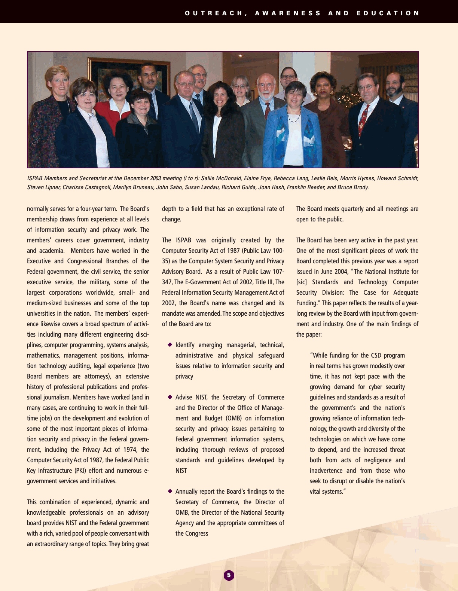
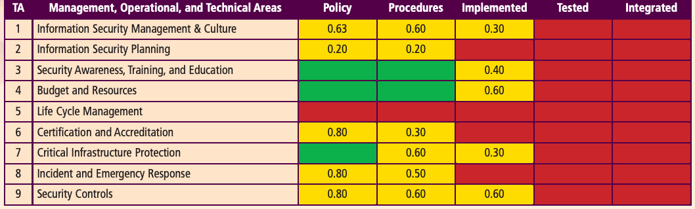
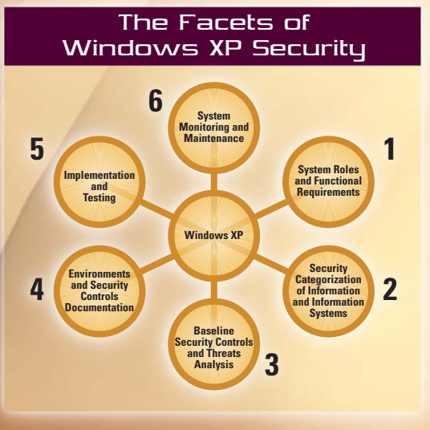
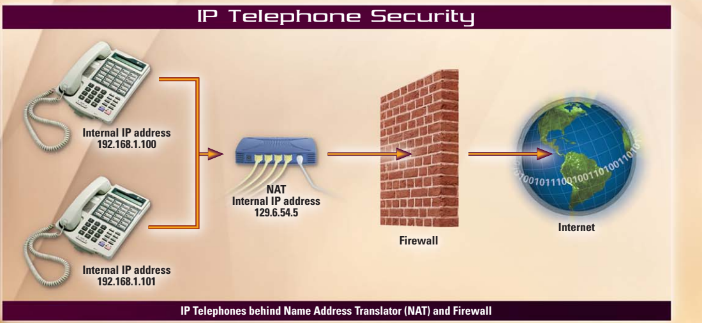
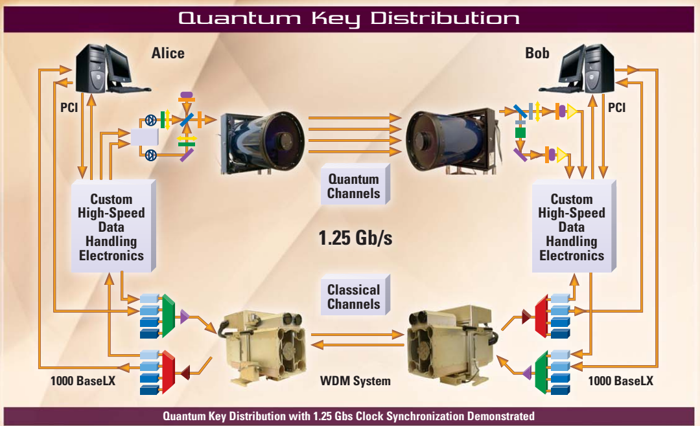
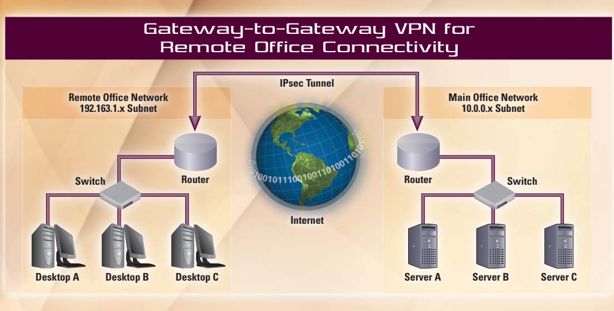

NIST IR 7219 日本語訳
英語タイトル : Computer Security Division 2004 Annual Report日本語タイトル : コンピューターセキュリティ部門 2004 年次報告書
公開日 : 2005-08-01
原文URL : https://csrc.nist.gov/pubs/ir/7219/final
原本 PDF : https://doi.org/10.6028/NIST.IR.7219
訳文 : 有志による非公式の日本語訳（AI による翻訳とレビュー）。全 527 段落のうち 517 段落を翻訳済み（原文取得日 : 2026-10-31）
[要約] NIST IR 7219 は、NIST の情報技術研究所のコンピューターセキュリティ部門（CSD）の 2004 年の活動をまとめた年次報告書です。ごあいさつによれば、2004 年の主な成果の一つは、国土安全保障に関する大統領令 #12 で示された、連邦職員および請負業者の識別と検証に関する新しい標準の策定であり、連邦情報処理標準（FIPS）199 と NIST SP 800-53 も公表しました。報告書は、部門の組織、アウトリーチ・啓発・教育、セキュリティマネジメントとガイダンス、セキュリティ試験とメトリクス、セキュリティ研究と新興技術、暗号標準とアプリケーションの各分野の活動を紹介しています。このほか、栄誉と受賞、2004 年の刊行物、当部門および NIST に関わる方法も記載しています。
Computer Security Division 2004 Annual Report
コンピューターセキュリティ部門 2004 年次報告書
Table of Contents
目次
Welcome Letter
ごあいさつ
Welcome
ごあいさつ
This year can best be characterized as one of significant challenges. Advances in technology further supported reduced paperwork, streamlined processes, improved control of assets, better communications, more accurately verified identity, more appropriate control of access to information and improved government-business-consumer-taxpayer interchange. New and increasingly complex security concerns accompanied these benefits. The Computer Security Division played a key role in addressing these issues.
今年は、大きな課題の多い年だったといえます。技術の進歩により、書類作業の削減、プロセスの合理化、資産管理の改善、コミュニケーションの向上、本人確認のより正確な検証、情報へのアクセスのより適切な制御、そして政府・企業・消費者・納税者間のやり取りの改善がさらに進みました。こうした恩恵には、新たな、そして次第に複雑になるセキュリティ上の懸念が伴いました。コンピューターセキュリティ部門は、これらの問題への対応で重要な役割を果たしました。
Among the highlights of our work in 2004 was a challenge from the President, issued in Homeland Security Presidential Directive #12, to develop a new standard for identification and verification of Federal employees and contractors. We continued making progress in fulfilling the mandates of the Federal Information Security Management Act of 2002 which resulted in Federal Information Processing Standard (FIPS) 199, Standards for Security Categorization of Federal Information and Information Systems, and NIST Special Publication (SP) 800-53, Recommended Security Controls for Federal Information Systems. In addressing the President’s challenge, we drew heavily upon our ongoing smart card, biometric and cryptographic work. As such, we made great strides towards a framework for protecting Federal facilities, systems and the employees who have access to them. The long-term benefit of using FIPS 199, SP 800-53 and a standards-based approach to system security in general is more targeted, cost-effective, consistent and improved security.
2004 年の当部門の業務の主な成果の一つは、国土安全保障に関する大統領令 #12（Homeland Security Presidential Directive #12）で大統領から示された、連邦職員および請負業者の識別と検証に関する新しい標準を策定するという課題でした。2002 年連邦情報セキュリティマネジメント法の責務の達成に向けた取り組みも進め、連邦情報処理標準（FIPS）199『Standards for Security Categorization of Federal Information and Information Systems』と、NIST 特別刊行物（SP）800-53『Recommended Security Controls for Federal Information Systems』を公表しました。大統領の課題に取り組むにあたっては、継続中のスマートカード、生体認証、暗号の研究を大いに活用しました。その結果、連邦の施設、システム、およびそれらにアクセスする職員を保護するための枠組みに向けて、大きく前進しました。FIPS 199、SP 800-53、そして標準に基づくシステムセキュリティ全般へのアプローチを用いることの長期的な利点は、より的を絞った、費用対効果が高く、一貫性のある、改善されたセキュリティです。
While the interconnection of information systems often increases the risk to an organization’s operations and assets, FIPS 199 and our associated suite of standards and guidelines provide a common way to express information security requirements. This in turn promotes greater consistency across diverse organizations in managing risks.
情報システムの相互接続は、組織の業務や資産に対するリスクを高めることが多いものの、FIPS 199 と、それに関連する一連の標準およびガイドラインは、情報セキュリティ要件を表現する共通の方法を提供します。これにより、多様な組織がリスクを管理するうえでの一貫性が高まります。
Scientists in the Computer Security Division have been working with our partners for the past several years to establish a Government Smart Card (GSC) program to facilitate widespread deployment of interoperable smart card systems. In recognition of this work, the NIST Smart Card Team received the Department of Commerce’s 2004 Gold Medal Award for the development of a framework and specification that dramatically advanced interoperability among smart card applications, coalesced U.S. government requirements and forged alliances with the world’s foremost authorities on smart cards.
コンピューターセキュリティ部門の科学者は、ここ数年、パートナーとともに、相互運用可能なスマートカードシステムの広範な展開を促すための政府スマートカード（GSC）プログラムの確立に取り組んできました。この取り組みが評価され、NIST スマートカードチームは、スマートカードアプリケーション間の相互運用性を飛躍的に高め、米国政府の要件をまとめ上げ、スマートカードに関する世界有数の専門家との連携を築いた枠組みと仕様の策定により、商務省の 2004 年ゴールドメダル賞を受賞しました。
The Division has had many other accomplishments this past year, including advancing development of our cryptographic standards toolkit, further e-authentication work, expansion of our Cryptographic Module Validation Program, development of an IT product security configuration checklist program and more work with digital forensics tools and methods. We have begun new work, as well as continuing previous work, on several key Internet security protocols – IPSec, BGP and DNSSEC. We have also provided technical expertise to several U.S. government groups on the security implications of spam e-mail and phishing attacks.
当部門は、この一年に、暗号標準ツールキットの開発の推進、電子認証のさらなる取り組み、暗号モジュール検証プログラムの拡大、IT 製品のセキュリティ設定チェックリストプログラムの策定、デジタルフォレンジックのツールと手法に関するさらなる取り組みなど、多くの成果を上げました。また、IPSec、BGP、DNSSEC という主要なインターネットセキュリティプロトコルについて、従来の取り組みを継続するとともに新たな取り組みを開始しました。さらに、スパムメールとフィッシング攻撃がセキュリティに及ぼす影響について、米国政府の複数のグループに技術的な専門知識を提供しました。
These are just some of the highlights of our work this year. We invite you to read more about our work – and to work with us – as we address these and future challenges. Our extraordinarily talented and knowledgeable experts are recognized as leaders in their fields. Many have come to us from the private sector and other agencies, bringing with them a diverse set of perspectives and expertise and a solid commitment to public service. We are proud to highlight their achievements in this report and to note the honors and awards that were received this year celebrating their achievements.
以上は、今年の当部門の業務の主な成果の一部にすぎません。これらの課題と今後の課題に取り組むにあたり、当部門の業務をぜひお読みいただき、また私たちとともに取り組んでいただければと思います。当部門の並外れて優秀で知識豊富な専門家は、それぞれの分野の第一人者として認められています。その多くは民間部門や他の機関から加わり、多様な視点と専門知識、そして公共への奉仕に対する確固たる意志を持ち込んでいます。本報告書では、彼らの功績を紹介するとともに、その功績を称えて今年授与された栄誉と賞についても記しています。
As you browse this report of the Division’s activities for 2004, we hope you will want to learn more. We invite you to visit the CSRC Web site, http://csrc.nist.gov, or to contact any of the Division experts noted in this report.
2004 年の当部門の活動に関するこの報告書をご覧になり、さらに詳しく知りたいと思われましたら、CSRC の Web サイト http://csrc.nist.gov をご覧になるか、本報告書に記載している当部門の専門家にご連絡ください。
Edward Roback
Division Chief
Edward Roback
部門長
［人物の写真。人物が写っているため、この非公式サイトには掲載していません。原本 PDF を参照してください。］
Alicia A. Clay
Deputy Division Chief
Alicia A. Clay
副部門長
［人物の写真。人物が写っているため、この非公式サイトには掲載していません。原本 PDF を参照してください。］
Division Organization
部門の組織
Edward Roback
Division Chief
Edward Roback
部門長
Alicia Clay
Deputy Division Chief
Alicia Clay
副部門長
Security Technology Group
William Burr
Group Manager
セキュリティ技術グループ
William Burr
グループマネージャー
Systems & Network Security Group
Timothy Grance
Group Manager
システム・ネットワークセキュリティグループ
Timothy Grance
グループマネージャー
Management & Assistance Group
Joan Hash
Group Manager
マネジメント・支援グループ
Joan Hash
グループマネージャー
Security Testing & Metrics Group
Ray Snouffer
Group Manager
セキュリティ試験・メトリクスグループ
Ray Snouffer
グループマネージャー
The Computer Security Division Responds to the Federal Information Security Management Act of 2002
コンピューターセキュリティ部門による 2002 年連邦情報セキュリティマネジメント法への対応
The E-Government Act (Public Law 107-347) passed by the 107th Congress and signed into law by the President in December 2002 recognized the importance of information security to the economic and national security interests of the United States. Title III of the E-Government Act, entitled the Federal Information Security Management Act of 2002 (FISMA), included duties and responsibilities for the Computer Security Division in Section 303 “National Institute of Standards and Technology.” In 2004, we addressed these assignments as follows:
第 107 議会で可決され、2002 年 12 月に大統領が署名して成立した電子政府法（Public Law 107-347）は、情報セキュリティが米国の経済と国家安全保障上の利益にとって重要であることを認めました。電子政府法の第 III 編である 2002 年連邦情報セキュリティマネジメント法（FISMA）は、第 303 条「国立標準技術研究所」で、コンピューターセキュリティ部門の職務と責任を定めています。2004 年には、これらの課題に次のように取り組みました。
•Standards to be used by Federal agencies to categorize information and information systems based on the objectives of providing appropriate levels of information security according to a range of risk levels – Developed Special Publication (SP) 800-37, Guidelines for the Security Certification and Accreditation of Federal Information Technology Systems (final version issued May 2004)
•リスクレベルの範囲に応じて適切な水準の情報セキュリティを提供するという目的に基づき、情報および情報システムを分類するために連邦機関が用いる標準 – 特別刊行物（SP）800-37『Guidelines for the Security Certification and Accreditation of Federal Information Technology Systems』を策定しました（最終版は 2004 年 5 月に公表）
•Guidelines recommending the types of information and information systems to be included in each category – Developed and issued FIPS 199, Standards for Security Categorization of Federal Information and Information Systems (final version issued February 2004)
•各カテゴリに含めるべき情報および情報システムの種類を推奨するガイドライン – FIPS 199『Standards for Security Categorization of Federal Information and Information Systems』を策定し、公表しました（最終版は 2004 年 2 月に公表）
•Minimum information security requirements (management, operational and technical security controls) for information and information systems in each such category – Developed SP 800-53, Security Controls for Federal Information Systems (first public draft issued October 2003), and continued work on SP 800-53A, Guide for Assessing the Security Controls in Federal Information Systems (first public draft to be issued January 2005)
•各カテゴリの情報および情報システムに対する最低限の情報セキュリティ要件（マネジメント、運用、技術のセキュリティ管理策）– SP 800-53『Security Controls for Federal Information Systems』を策定し（第 1 次公開草案は 2003 年 10 月に公表）、SP 800-53A『Guide for Assessing the Security Controls in Federal Information Systems』の作業を継続しました（第 1 次公開草案は 2005 年 1 月に公表予定）
•Incident detection and handling guidelines – Developed SP 800-61, Computer Security Incident Handling Guide (final version issued January 2004)
•インシデントの検知と対処のガイドライン – SP 800-61『Computer Security Incident Handling Guide』を策定しました（最終版は 2004 年 1 月に公表）
•Provide assistance to agencies and private sector – Conduct ongoing, substantial reimbursable and non-reimbursable assistance support, including many outreach efforts such as the Federal Information Systems Security Educators’ Association (FISSEA), the Federal Computer Security Program Managers’ Forum (FCSM Forum), the Small Business Corner and the reimbursable Program Review for Information Security Management Assistance (PRISMA)
•機関および民間部門への支援の提供 – 連邦情報システムセキュリティ教育者協会（FISSEA）、連邦コンピューターセキュリティプログラム管理者フォーラム（FCSM Forum）、Small Business Corner、有償の Program Review for Information Security Management Assistance（PRISMA）など、多くのアウトリーチ活動を含め、有償・無償の相当規模の支援を継続的に実施しています
•Develop performance indicators/ metrics – Developed SP 800-55, Security Metrics Guide for Information Technology Systems (final version issued July 2003)
•パフォーマンス指標／メトリクスの策定 – SP 800-55『Security Metrics Guide for Information Technology Systems』を策定しました（最終版は 2003 年 7 月に公表）
•Evaluate security policies and technologies from the private sector and national security systems for potential Federal agency use – Host a growing repository of Federal agency security practices, public/private security practices and security configuration checklists for IT products. CSD, in conjunction with the Government of Canada’s Communications Security Establishment, also leads the Cryptographic Module Validation Program (CMVP). The Common Criteria Evaluation and Validation Scheme (CCEVS) and CMVP facilitate security testing of IT products usable by the Federal government.
•連邦機関が利用する可能性のある、民間部門および国家安全保障システムのセキュリティポリシーと技術の評価 – 連邦機関のセキュリティプラクティス、官民のセキュリティプラクティス、IT 製品のセキュリティ設定チェックリストを集めた、拡大を続けるリポジトリを運営しています。CSD はまた、カナダ政府の通信安全保障機関（Communications Security Establishment）と共同で、暗号モジュール検証プログラム（CMVP）を主導しています。Common Criteria Evaluation and Validation Scheme（CCEVS）と CMVP は、連邦政府が利用できる IT 製品のセキュリティ試験を促進します。
•Identification of national security systems guidelines – Developed SP 800-59, Guideline for Identifying an Information System as a National Security System (final version issued August 2003)
•国家安全保障システムのガイドラインの特定 – SP 800-59『Guideline for Identifying an Information System as a National Security System』を策定しました（最終版は 2003 年 8 月に公表）
•Solicit recommendations of the Information Security and Privacy Advisory Board on draft standards and guidelines – Solicit recommendations of the Board regularly at quarterly meetings
•標準およびガイドラインの草案に対する情報セキュリティ・プライバシー諮問委員会の勧告の募集 – 四半期ごとの会合で、同委員会の勧告を定期的に募集しています
•Annual NIST reporting requirement – Produce an annual report as a NIST Interagency Report (IR). The 2003 Annual Report was issued as NIST IR 7111 and is available via the Web or upon request.
•NIST による年次報告の要件 – NIST 省庁間報告書（IR）として年次報告書を作成します。2003 年年次報告書は NIST IR 7111 として公表されており、Web で入手するか、依頼に応じて入手できます。
Outreach, Awareness and Education
アウトリーチ、啓発、教育
Strategic Goal – The Computer Security Division (CSD) will engage in outreach activities to Federal government agencies and, where appropriate, to industry, including small- and medium-sized businesses, in order to raise awareness of the importance and need for information technology (IT) security. These activities will increase the understanding of IT security vulnerabilities and possible corrective measures. Resulting raised awareness and knowledge will also assist appropriate persons in framing requests for necessary resources to implement better IT security measures. Finally, these outreach activities will facilitate a greater awareness of the Division’s programs, projects and resources available to Federal agencies and the public.
戦略目標 – コンピューターセキュリティ部門（CSD）は、情報技術（IT）セキュリティの重要性と必要性についての認識を高めるため、連邦政府機関に対して、また適切な場合には中小企業を含む産業界に対して、アウトリーチ活動を行います。これらの活動により、ITセキュリティの脆弱性とあり得る是正措置についての理解が深まります。その結果として高まった認識と知識は、より優れた IT セキュリティ対策を実施するために必要なリソースを要請する際に、関係者がその内容をまとめる助けにもなります。最後に、これらのアウトリーチ活動は、連邦機関と一般市民が利用できる当部門のプログラム、プロジェクト、リソースへの認識を高めることにつながります。
Overview
概要
The CSD provides IT security standards and guidelines to Federal government agencies in the Executive Branch. One of our constant challenges is to provide useful and timely materials to these agencies. When developing and producing our products, we engage in consensus-building with the IT industry, academia and Federal agencies in order to keep the quality of these products and services as high as possible. As part of this consensus-building process, every Federal Information Processing Standard (FIPS) and Special Publication (SP) produced by the CSD has an open, public comment vetting process. At the same time, we reach out to engage other governments, other levels of U.S. government, small- and medium-sized businesses nationwide and even directly to citizens.
CSD は、行政府の連邦政府機関に IT セキュリティの標準とガイドラインを提供しています。有用で時宜を得た資料をこれらの機関に提供することは、私たちが常に直面している課題の一つです。成果物の作成にあたっては、それらの品質をできる限り高く保つため、IT 業界、学界、連邦機関との合意形成を行っています。この合意形成の過程の一環として、CSD が作成するすべての連邦情報処理標準（FIPS）と特別刊行物（SP）について、公開のパブリックコメントによる審査を行っています。同時に、他国の政府、米国政府の他の階層、全国の中小企業、さらには市民に直接も働きかけています。
One of the primary benefits of these outreach efforts to the public is the large collection of non-proprietary, non-technology-biased knowledge that is provided free of charge to the Federal agencies and the public. Through a range of organizations and efforts, the CSD provides materials, information and services useful from the Federal agency level to the home-user level.
これらの一般向けアウトリーチ活動の主な利点の一つは、特定の製品や技術に偏らない非専有の知識が大量に集積され、連邦機関と一般市民に無償で提供されることです。さまざまな組織と取り組みを通じて、CSD は、連邦機関の水準から家庭の利用者の水準まで役立つ資料、情報、サービスを提供しています。
The Division houses a Web site that is a central repository for all of the materials and resources we have developed, as well as pointers to other types of IT security work and resources. The Division also hosts several organizations that address specific portions of government and industry. These organizations are discussed in greater detail later in this report.
当部門は、これまでに作成したすべての資料とリソースの中心的なリポジトリであり、他の種類の IT セキュリティの取り組みやリソースへの案内も備えた Web サイトを運営しています。また、政府と産業界の特定の分野を扱う複数の組織も運営しています。これらの組織については、本報告書の後半で詳しく説明します。
In 2004, CSD greatly expanded its outreach efforts with the private sector, especially the healthcare community.We formed new coalitions to support small business outreach, made significant enhancements to the Computer Security Resource Center (CSRC) and continued utilizing the Security Managers Forum to provide support to information security officers throughout the Federal sector. Numerous workshops and briefings were sponsored to support implementation of newly developed guidance and feedback from constituents was very positive.
2004 年に CSD は、民間部門、特に医療分野とのアウトリーチ活動を大幅に拡大しました。中小企業向けアウトリーチを支援する新たな連合を結成し、コンピューターセキュリティリソースセンター（CSRC）を大幅に強化し、連邦部門全体の情報セキュリティ担当者を支援するために Security Managers Forum を引き続き活用しました。新たに策定したガイダンスの実施を支援するため、数多くのワークショップとブリーフィングを後援し、関係者からのフィードバックは非常に好意的でした。
As we look forward to fiscal year 2005, we will continue to expand outreach efforts to new communities, enhance the CSRC, support the Information Security and Privacy Advisory Board in its advisory capacity and support the Federal Information Systems Security Educators Association. The Security Managers Forum will continue to be a valuable communication vehicle for the Federal agencies and we will launch an aggressive campaign to explore new methods to get CSD's message out.
2005 会計年度に向けては、新たなコミュニティへのアウトリーチ活動を引き続き拡大し、CSRC を強化し、情報セキュリティ・プライバシー諮問委員会がその諮問機能を果たすのを支援し、連邦情報システムセキュリティ教育者協会を支援していきます。Security Managers Forum は、今後も連邦機関にとって貴重なコミュニケーション手段であり続けます。また、CSD のメッセージを発信する新たな方法を探るため、積極的なキャンペーンを展開します。
Reaching Our Goal
目標の達成に向けて
THE INFORMATION SECURITY AND PRIVACY ADVISORY BOARD
情報セキュリティ・プライバシー諮問委員会
The Information Security and Privacy Advisory Board (ISPAB) is a Federal advisory committee that brings together senior professionals from industry, government and academia to help advise the National Institute of Standards and Technology, the Office of Management and Budget, the Secretary of Commerce and appropriate committees of the U.S. Congress about information security and privacy issues pertaining to unclassified Federal government information systems.
情報セキュリティ・プライバシー諮問委員会（ISPAB）は、産業界、政府、学界の上級専門家が集まり、非機密の連邦政府情報システムに関わる情報セキュリティとプライバシーの問題について、国立標準技術研究所、行政管理予算局、商務長官、米国議会の関係委員会に助言する連邦諮問委員会です。
The membership of the Board consists of twelve individuals and a Chairperson. The Director of NIST approves membership appointments and appoints the Chairperson. Each Board member
同委員会は、12 名の委員と 1 名の委員長で構成されます。委員の任命と委員長の任命は NIST 所長が承認します。各委員は
［人物の写真。人物が写っているため、この非公式サイトには掲載していません。原本 PDF を参照してください。］
ISPAB Members and Secretariat at the December 2003 meeting (l to r): Sallie McDonald, Elaine Frye, Rebecca Leng, Leslie Reis, Morris Hymes, Howard Schmidt, Steven Lipner, Charisse Castagnoli, Marilyn Bruneau, John Sabo, Susan Landau, Richard Guida, Joan Hash, Franklin Reeder, and Bruce Brody. normally serves for a four-year term. The Board's membership draws from experience at all levels of information security and privacy work. The members’ careers cover government, industry and academia. Members have worked in the Executive and Congressional Branches of the Federal government, the civil service, the senior executive service, the military, some of the largest corporations worldwide, small- and medium-sized businesses and some of the top universities in the nation. The members' experience likewise covers a broad spectrum of activities including many different engineering disciplines, computer programming, systems analysis, mathematics, management positions, information technology auditing, legal experience (two Board members are attorneys), an extensive history of professional publications and professional journalism. Members have worked (and in many cases, are continuing to work in their full-time jobs) on the development and evolution of some of the most important pieces of information security and privacy in the Federal government, including the Privacy Act of 1974, the Computer Security Act of 1987, the Federal Public Key Infrastructure (PKI) effort and numerous e-government services and initiatives.
原本PDFの抜粋画像

2003 年 12 月の会合における ISPAB の委員と事務局（左から右）: Sallie McDonald、Elaine Frye、Rebecca Leng、Leslie Reis、Morris Hymes、Howard Schmidt、Steven Lipner、Charisse Castagnoli、Marilyn Bruneau、John Sabo、Susan Landau、Richard Guida、Joan Hash、Franklin Reeder、Bruce Brody。 各委員は通常 4 年の任期を務めます。委員は、情報セキュリティとプライバシーの業務のあらゆる階層での経験を持つ人々から選ばれています。委員の経歴は、政府、産業界、学界にわたります。連邦政府の行政部門と議会、公務員、上級管理職、軍、世界最大級の企業、中小企業、国内有数の大学で働いてきた委員がいます。委員の経験は、さまざまな工学分野、コンピュータープログラミング、システム分析、数学、管理職、情報技術監査、法律分野（委員のうち 2 名は弁護士です）、豊富な専門書の執筆歴、専門的なジャーナリズムなど、幅広い活動に及んでいます。委員は、1974 年プライバシー法、1987 年コンピューターセキュリティ法、連邦公開鍵基盤（PKI）の取り組み、数多くの電子政府サービスやイニシアチブなど、連邦政府の情報セキュリティとプライバシーに関する最も重要な施策のいくつかの策定と発展に携わってきました（多くの場合、現在もフルタイムの職務として携わっています）。
This combination of experienced, dynamic and knowledgeable professionals on an advisory board provides NIST and the Federal government with a rich, varied pool of people conversant with an extraordinary range of topics. They bring great depth to a field that has an exceptional rate of change.
経験豊富で意欲的、かつ知識のある専門家がこのように諮問委員会に集まることで、NIST と連邦政府は、きわめて幅広い話題に通じた、豊かで多様な人材を得ています。委員は、変化の速度が並外れて速いこの分野に、大きな深みをもたらしています。
The ISPAB was originally created by the Computer Security Act of 1987 (Public Law 100-35) as the Computer System Security and Privacy Advisory Board. As a result of Public Law 107-347, The E-Government Act of 2002, Title III, The Federal Information Security Management Act of 2002, the Board's name was changed and its mandate was amended. The scope and objectives of the Board are to:
ISPAB は、もともと 1987 年コンピューターセキュリティ法（Public Law 100-35）により、コンピューターシステムセキュリティ・プライバシー諮問委員会（Computer System Security and Privacy Advisory Board）として設置されました。Public Law 107-347、2002 年電子政府法の第 III 編である 2002 年連邦情報セキュリティマネジメント法の結果として、委員会の名称が変更され、その権限が改められました。委員会の範囲と目的は次のとおりです。
•Identify emerging managerial, technical, administrative and physical safeguard issues relative to information security and privacy
•情報セキュリティとプライバシーに関して、新たに生じているマネジメント上、技術上、管理上、物理的な保護措置の課題を特定すること
•Advise NIST, the Secretary of Commerce and the Director of the Office of Management and Budget (OMB) on information security and privacy issues pertaining to Federal government information systems, including thorough reviews of proposed standards and guidelines developed by NIST
•連邦政府の情報システムに関わる情報セキュリティとプライバシーの問題について、NIST が策定する標準およびガイドライン案の綿密な審査を含め、NIST、商務長官、行政管理予算局（OMB）局長に助言すること
•Annually report the Board's findings to the Secretary of Commerce, the Director of OMB, the Director of the National Security Agency and the appropriate committees of the Congress The Board meets quarterly and all meetings are open to the public.
•委員会の調査結果を、商務長官、OMB 局長、国家安全保障局長官、議会の関係委員会に毎年報告すること。委員会は四半期ごとに開催され、すべての会合は一般に公開されます。
The Board has been very active in the past year. One of the most significant pieces of work the Board completed this previous year was a report issued in June 2004, “The National Institute for [sic] Standards and Technology Computer Security Division: The Case for Adequate Funding.”This paper reflects the results of a year-long review by the Board with input from government and industry. One of the main findings of the paper:
同委員会は、この一年間に非常に活発に活動しました。委員会が昨年に完了した最も重要な業績の一つは、2004 年 6 月に発表された報告書「The National Institute for [sic] Standards and Technology Computer Security Division: The Case for Adequate Funding」です。この報告書は、政府と産業界からの意見を取り入れた、委員会による 1 年がかりの審査の結果を反映しています。報告書の主な調査結果の一つは次のとおりです。
“While funding for the CSD program in real terms has grown modestly over time, it has not kept pace with the growing demand for cyber security guidelines and standards as a result of the government’s and the nation’s growing reliance of information technology, the growth and diversity of the technologies on which we have come to depend, and the increased threat both from acts of negligence and inadvertence and from those who seek to disrupt or disable the nation’s vital systems.”
「CSD プログラムの予算は、実質ベースでは時間とともに緩やかに増加してきたものの、サイバーセキュリティのガイドラインと標準に対する需要の高まりには追いついていません。この需要は、政府と国家による情報技術への依存の高まり、私たちが頼るようになった技術の増加と多様化、そして過失や不注意による行為と、国の重要なシステムを混乱または無効化しようとする者の双方による脅威の増大によるものです。」
The paper is publicly available at http://csrc. nist.gov/ispab/board-recommendations.html. The Board also expressed its findings and recommendations to the Director of the Office of Management and Budget on the issue of agencies using Web-based transactions to provide e-government services to members of the public.
この報告書は http://csrc. nist.gov/ispab/board-recommendations.html で公開されています。委員会はまた、機関が一般市民に電子政府サービスを提供するために Web ベースの取引を利用する問題について、調査結果と勧告を行政管理予算局長に伝えました。
The Board has also received numerous briefings from Federal and private sector representatives on a wide range of privacy and security topics in the past year. Topics have included the Government Accountability Office’s (GAO’s) Report on the Privacy Act, an overview of the Department of Veterans Affairs' (VA’s) cyber security program, privacy challenges being faced by the Department of Homeland Security (DHS), updates on the review being conducted of the National Information Assurance Partnership, results of the first Privacy Trust Survey of the U.S. government, customer relations management in the U.S. Postal Service (USPS), specifications and implementations of the Trusted Computing Group's Secure Platform and security issues with voice over IP (VoIP).
委員会はこの一年間に、連邦政府および民間部門の代表者から、プライバシーとセキュリティに関する幅広い話題について数多くのブリーフィングを受けました。話題には、政府説明責任局（GAO）のプライバシー法に関する報告書、退役軍人省（VA）のサイバーセキュリティプログラムの概要、国土安全保障省（DHS）が直面しているプライバシー上の課題、国家情報保証パートナーシップ（National Information Assurance Partnership）の見直しの最新状況、米国政府初のプライバシー信頼調査の結果、米国郵政公社（USPS）における顧客関係管理、Trusted Computing Group の Secure Platform の仕様と実装、ボイスオーバー IP（VoIP）のセキュリティ上の問題などがありました。
Several areas of interest that the Board will be following in the coming year include credentialing of certification and accreditation organizations, privacy management issues within government systems, insuring the authenticity of government Web sites, NIST’s outreach and partnering approach and cyber security leadership in the Executive Branch.
委員会が来年注視する関心分野には、認証および認定を行う組織の資格認定、政府システムにおけるプライバシー管理の問題、政府 Web サイトの真正性の確保、NIST のアウトリーチとパートナーシップのアプローチ、行政府におけるサイバーセキュリティのリーダーシップがあります。
http://csrc.nist.gov/ispab/
Contacts: Ms. Joan Hash
(301) 975-5236
joan.hash@nist.gov
Ms. Elaine Frye
(301) 975-2819
elaine.frye@nist.gov
http://csrc.nist.gov/ispab/
連絡先: Ms. Joan Hash
(301) 975-5236
joan.hash@nist.gov
Ms. Elaine Frye
(301) 975-2819
elaine.frye@nist.gov
FEDERAL INFORMATION SYSTEMS SECURITY EDUCATORS ASSOCIATION
連邦情報システムセキュリティ教育者協会
The Federal Information Systems Security Educators Association (FISSEA) is an organization run by and for Federal information systems security professionals. FISSEA assists Federal agencies in meeting their computer security training responsibilities. FISSEA strives to elevate the general level of information systems security knowledge for the Federal government and the federally-related workforce. FISSEA serves as a professional forum for the exchange of information and improvement of information systems security awareness, training and education programs. It also seeks to provide for the professional development of its members.
連邦情報システムセキュリティ教育者協会（FISSEA）は、連邦の情報システムセキュリティ専門家によって、またその専門家のために運営される組織です。FISSEA は、連邦機関がコンピューターセキュリティのトレーニングに関する責任を果たすのを支援しています。FISSEA は、連邦政府および連邦関連の職員の情報システムセキュリティに関する知識の全般的な水準を高めるよう努めています。FISSEA は、情報交換と、情報システムセキュリティの啓発、トレーニング、教育プログラムの改善のための専門的なフォーラムとして機能します。また、会員の専門能力開発も図っています。
Membership is open to information systems security professionals, trainers, educators and managers who are responsible for information systems security training programs in Federal agencies, as well as contractors of these agencies and faculty members of accredited educational institutions. There are no membership fees for FISSEA; all that is required is a willingness to share products, information and experiences. Business is administered by a twelve-member Executive Board that meets monthly. Board members serve two- year terms and elections are held during the annual conference. Each year an award is presented to a candidate selected as Educator of the Year honoring distinguished accomplishments in information systems security training programs. There is also a contest for computer security posters, Web sites and awareness tools with the winning entries listed on the FISSEA Web site. FISSEA has a quarterly newsletter, an actively maintained Web site and a listserve as a means of communication for members. Members are encouraged to participate in the annual FISSEA conference and to serve on the FISSEA ad-hoc task groups. CSD assists FISSEA with its operations by providing staff support for several of its activities and by being FISSEA’s host agency.
会員資格は、連邦機関の情報システムセキュリティトレーニングプログラムを担当する情報システムセキュリティ専門家、トレーナー、教育者、管理者のほか、これらの機関の請負業者や認定教育機関の教員に開かれています。FISSEA に会費はなく、製品、情報、経験を共有する意志があれば足ります。運営は、毎月会合を開く 12 名の執行委員会が行います。委員の任期は 2 年で、選挙は年次会議の期間中に行われます。毎年、情報システムセキュリティトレーニングプログラムにおける顕著な功績を称えて、Educator of the Year として選ばれた候補者に賞が授与されます。コンピューターセキュリティのポスター、Web サイト、啓発ツールのコンテストもあり、優秀作品は FISSEA の Web サイトに掲載されます。FISSEA は、会員間の連絡手段として、季刊のニュースレター、活発に更新されている Web サイト、メーリングリストを備えています。会員は、FISSEA 年次会議への参加と、FISSEA のアドホックタスクグループへの参加を奨励されています。CSD は、いくつかの活動に職員を派遣し、FISSEA のホスト機関を務めることにより、FISSEA の運営を支援しています。
FISSEA membership in 2004 spanned Federal agencies, industry, military, contractors, state governments, academia, the press and foreign organizations to reach 1083 members in a total of fourteen countries. The 635 Federal agency members represent 88 agencies from the Executive and Congressional Branches of government. The Educator of the Year Award for 2003 was presented to Jeff Recor, Walsh College, at the FISSEA Annual Conference in March 2004.
2004 年の FISSEA の会員は、連邦機関、産業界、軍、請負業者、州政府、学界、報道機関、外国組織に及び、合計 14 か国で 1083 名に達しました。連邦機関の会員 635 名は、政府の行政部門と議会の 88 機関を代表しています。2003 年の Educator of the Year Award は、2004 年 3 月の FISSEA 年次会議で、Walsh College の Jeff Recor に授与されました。
FISSEA hosted its second free workshop, “Developing Role-Based Training and Classroom
FISSEA は、2 回目の無料ワークショップ「Developing Role-Based Training and Classroom
［人物の写真。人物が写っているため、この非公式サイトには掲載していません。原本 PDF を参照してください。］
FISSEA Board Members for 2004-05 – Pictured left to right: Jeffrey Seeman (NSA), Peggy Himes (NIST), Louis Numkin (NRC), Barbara Cuffie (retired SSA), Mary Ann Strawn (LOC, back), Tanetta Isler (HUD) and Lewis Baskerville (SBA). Not pictured: LTC Curt Carver (USMA), Thomas Foss (UNC), Gretchen Morris (NASA), LTC Will Suchan (USMA), Marvella Towns (NSA) and Mark Wilson (NIST). Demonstrations,” in May 2004.The workshop was presented by the U.S. Department of State’s Diplomatic Security Training Center for Information Assurance training team. Attendees were invited to participate in this interactive workshop on the process of designing information assurance training programs to meet Federal guidelines. The workshop began with an overview of the NIST Special Publication (SP) 800-16, Information Technology Security Training Requirements: A Role- and Performance-Based Model. Next, discussion provided attendees with an overview of three primary information assurance (IA) training categories: Management Controls, Operational Controls and Technical Controls. Based on these categories, attendees generated a list of topics, learning objectives, presentation modes, learning activities and learning measurement strategies for three specific IA roles – Managers, System Administrators and Information System Security Officers (ISSOs). This gave the attendees realistic training that would transfer to their agency’s awareness and training program.
2004-05 年の FISSEA 委員（写真左から右）: Jeffrey Seeman（NSA）、Peggy Himes（NIST）、Louis Numkin（NRC）、Barbara Cuffie（SSA を退職）、Mary Ann Strawn（LOC、後列）、Tanetta Isler（HUD）、Lewis Baskerville（SBA）。写真に写っていない委員: LTC Curt Carver（USMA）、Thomas Foss（UNC）、Gretchen Morris（NASA）、LTC Will Suchan（USMA）、Marvella Towns（NSA）、Mark Wilson（NIST）。 Demonstrations」は、2004 年 5 月に実施されました。このワークショップは、米国国務省の Diplomatic Security Training Center の情報保証トレーニングチームが担当しました。参加者は、連邦のガイドラインに適合する情報保証トレーニングプログラムを設計するプロセスに関する、このインタラクティブなワークショップへの参加に招かれました。ワークショップは、NIST 特別刊行物（SP）800-16、『Information Technology Security Training Requirements: A Role- and Performance-Based Model』の概要から始まりました。続いて、情報保証（IA）トレーニングの 3 つの主要カテゴリ、すなわちマネジメント管理策、運用管理策、技術管理策の概要が議論されました。参加者は、これらのカテゴリに基づいて、マネージャー、システム管理者、情報システムセキュリティ担当官（ISSO）という 3 つの具体的な IA の役割について、トピック、学習目標、提示方式、学習活動、学習測定戦略の一覧を作成しました。これにより、参加者は、自機関の啓発・トレーニングプログラムに応用できる現実的なトレーニングを得ました。
FISSEA will also be holding several free workshops during late 2004 and early 2005 to assist Federal employees in gaining a better understanding of how to implement NIST SP 800-16 in their agencies. These workshops will be conducted by Mark Wilson, editor of SP 800-16 and a FISSEA Executive Board Member.
FISSEA は、2004 年後半から 2005 年初めにかけて、連邦職員が自機関で NIST SP 800-16 を実施する方法をより深く理解できるよう支援するため、無料のワークショップをさらにいくつか開催します。これらのワークショップは、SP 800-16 の編集者であり FISSEA の執行委員でもある Mark Wilson が担当します。
The 2005 FISSEA Conference will be held in March 2005 at the Bethesda North Marriott Hotel and Conference Center in Bethesda, Maryland. This two-day two-track conference will provide an excellent opportunity to network with other security professionals. Further information regarding the conference is available on the FISSEA Web site.
2005 年の FISSEA 会議は、2005 年 3 月にメリーランド州ベセスダの Bethesda North Marriott Hotel and Conference Center で開催されます。この 2 日間 2 トラックの会議は、他のセキュリティ専門家と交流する絶好の機会となります。会議に関する詳しい情報は、FISSEA の Web サイトで入手できます。
http://csrc.nist.gov/fissea/
Contacts: Mr. Mark Wilson
(301) 975-3870
mark.wilson@nist.gov
Ms. Peggy Himes
(301) 975-2489
peggy.himes@nist.gov
http://csrc.nist.gov/fissea/
連絡先: Mr. Mark Wilson
(301) 975-3870
mark.wilson@nist.gov
Ms. Peggy Himes
(301) 975-2489
peggy.himes@nist.gov
COMPUTER SECURITY RESOURCE CENTER
コンピューターセキュリティリソースセンター
The Computer Security Resource Center (CSRC) is the Computer Security Division’s Web site. The CSD uses the CSRC to encourage broad sharing of information security tools and practices, to provide “one-stop shopping” for information security standards and guidelines and to identify and link key security Web resources to support the industry. The CSRC is an integral piece to all of the work we conduct and produce. It is our repository for everyone – public or private sector – wanting access to our documents and information. It serves as a vital link to the various groups we wish to reach.
コンピューターセキュリティリソースセンター（CSRC）は、コンピューターセキュリティ部門の Web サイトです。CSD は CSRC を用いて、情報セキュリティのツールとプラクティスの幅広い共有を促し、情報セキュリティの標準とガイドラインの「ワンストップショッピング」を提供し、産業界を支援するための主要なセキュリティ Web リソースを特定してリンクしています。CSRC は、私たちが実施し作成するすべての業務に不可欠な要素です。公的部門か民間部門かを問わず、当部門の文書や情報へのアクセスを求めるすべての人のためのリポジトリです。また、私たちが働きかけたいさまざまなグループとの重要な接点となっています。
In the last year the CSRC had over 26.1 million requests – an average of over 2.1 million requests per month. Every document released for public comment or published through the Division has been posted to the CSRC. In the summer of 2003 CSD conducted an evaluation and analysis project of CSRC in order to allow the Division to deal with issues of scale, organization and volume. The past year has seen a great deal of work to make the changes and improvements identified in the evaluation and analysis report. The site has been streamlined and simplified to make items easier to find and an extensive site map has been developed.
昨年、CSRC は 2610 万件を超えるリクエストを受け付けました。月平均では 210 万件を超えています。パブリックコメント用に公開された文書、および当部門を通じて刊行された文書は、すべて CSRC に掲載されています。2003 年夏、CSD は、規模、構成、量に関する問題に対処できるようにするため、CSRC の評価・分析プロジェクトを実施しました。この一年は、評価・分析報告書で特定された変更と改善を行うための作業が数多くありました。サイトは、項目を見つけやすくするために簡素化・合理化され、詳細なサイトマップが作成されました。
The CSRC will continue to grow and be updated in 2005. There is a survey under way in order to obtain public opinion of the site’s recent changes and the current usefulness and ease-of-use. It is anticipated that the site will be further enhanced as results of the survey and public comments are received and taken into consideration.
CSRC は 2005 年も引き続き拡充され、更新されます。サイトの最近の変更点と、現在の有用性および使いやすさについて、一般の意見を得るための調査が進行中です。調査結果とパブリックコメントを受け取り、検討することで、サイトはさらに強化される見込みです。
http://csrc.nist.gov/
Contacts: Ms. Joan Hash
(301) 975-5236
joan.hash@nist.gov
Mr. Patrick O’Reilly
(301) 975-4751
patrick.oreilly@nist.gov
Ms. Elaine Frye
(301) 975-2819
elaine.frye@nist.gov
http://csrc.nist.gov/
連絡先: Ms. Joan Hash
(301) 975-5236
joan.hash@nist.gov
Mr. Patrick O’Reilly
(301) 975-4751
patrick.oreilly@nist.gov
Ms. Elaine Frye
(301) 975-2819
elaine.frye@nist.gov
SMALL AND MEDIUM-SIZED BUSINESS OUTREACH
中小企業向けアウトリーチ
What do a business’s invoices have in common with e-mail? If both are done on the same computer, the business owner may want to think more about computer security. Information – payroll records, proprietary information, client or employee data – is essential to a business’s success. A computer failure or other system breach could cost a business anything from its reputation to damages and recovery costs. The small business owner who recognizes the threat of computer crime and takes steps to deter inappropriate activities is less likely to become a victim.
企業の請求書と電子メールには何の共通点があるでしょうか。両方が同じコンピューターで処理されているなら、経営者はコンピューターセキュリティについてもっと検討すべきです。給与記録、専有情報、顧客や従業員のデータといった情報は、企業の成功に不可欠です。コンピューターの障害やその他のシステム侵害により、企業は評判の失墜から損害賠償や復旧費用に至るまで、さまざまな損失を被る可能性があります。コンピューター犯罪の脅威を認識し、不正な行為を抑止するための対策を講じる小規模事業者は、被害者になる可能性が低くなります。
The vulnerability of any one small business may not seem significant to many other than the owner and employees of that business. However, over 95 percent of all U.S. businesses – over 20 million – are small- and medium-sized businesses (SMBs) of 500 employees or less. Therefore a vulnerability common to a large percentage of all SMBs could pose a threat to the Nation's economic base. In the special arena of information security, vulnerable SMBs also run the risk of being compromised for use in crimes against governmental or large industrial systems upon which everyone relies. SMBs frequently cannot justify an extensive security program or a full-time expert. Nonethe-less, they confront serious security challenges and must address security requirements based on identified needs.
個々の小規模事業者の脆弱性は、その事業者の経営者と従業員以外の多くの人にとっては重要に見えないかもしれません。しかし、米国の全企業の 95 パーセント超（2000 万社超）は、従業員 500 人以下の中小企業（SMB）です。したがって、SMB の大部分に共通する脆弱性は、国の経済基盤に対する脅威となり得ます。情報セキュリティという特殊な分野では、脆弱な SMB は、すべての人が頼っている政府や大規模産業のシステムに対する犯罪に利用されるために危殆化されるリスクもあります。SMB は、大規模なセキュリティプログラムや専任の専門家を置く理由を示せないことが多くあります。それでも、深刻なセキュリティ上の課題に直面しており、特定されたニーズに基づいてセキュリティ要件に対処しなければなりません。
The difficulty for these organizations is to identify needed security mechanisms and training that are practical and cost-effective. Such organizations also need to become more educated consumers in terms of security so that limited resources are well applied to meet the most obvious and serious threats.
これらの組織にとっての課題は、実用的で費用対効果の高い、必要なセキュリティ機構とトレーニングを特定することです。また、限られたリソースを最も明白で深刻な脅威への対処に適切に振り向けられるよう、セキュリティについてより見識のある消費者になる必要もあります。
To address this need, NIST, the Small Business Administration (SBA) and the Federal Bureau of Investigation (FBI) entered into a Co-sponsorship Agreement for the purpose of conducting a series of training meetings on IT security for small businesses. The purpose of the meetings is to have individuals knowledgeable in IT security provide an overview of information security threats, vulnerabilities and corresponding protective tools and techniques with a special emphasis on providing useful information that small business personnel can apply directly or use to task contractor personnel.
このニーズに応えるため、NIST、中小企業庁（SBA）、連邦捜査局（FBI）は、中小企業向けの IT セキュリティに関する一連のトレーニング会合を実施することを目的とする共同後援協定を結びました。会合の目的は、IT セキュリティに詳しい人々が、情報セキュリティの脅威、脆弱性、それに対応する防御ツールと技法の概要を示すことです。特に、中小企業の担当者が直接適用したり、請負業者の担当者への指示に用いたりできる有用な情報の提供に重点を置いています。
For the third year, a CSD representative has attended the Annual Small Business Development Centers Conference to reach out to this public-private organization sponsored by SBA. This was the first year we were invited to conduct a conference presentation detailing the program and it was received very well with a large number of attendees.
3 年目となる今年も、CSD の代表者が、SBA が後援するこの官民組織への働きかけとして、Annual Small Business Development Centers Conference に出席しました。会議でプログラムを詳しく紹介する発表を行うよう招かれたのは今年が初めてで、多数の参加者があり、非常に好評でした。
In 2005 the SMB outreach effort will focus on expanding opportunities to reach small businesses. Further development of our Web site is planned. Discussions are under way with SBA and the FBI to expand the original partnership and determine new avenues for this outreach project.
2005 年の SMB 向けアウトリーチは、中小企業に働きかける機会の拡大に重点を置きます。Web サイトのさらなる開発を計画しています。SBA および FBI とは、当初のパートナーシップを拡大し、このアウトリーチプロジェクトの新たな道筋を定めるための協議が進行中です。
A CSD representative will attend planning meetings hosted by the State Department’s office on the Asia-Pacific Economic Cooperation (APEC). A focus of these meetings is an information security education outreach for SMBs to be held during APEC’s Spring 2005 meeting in Lima, Peru. Others attending these working meetings are representatives from the Carnegie Mellon Software Engineering Institute, the Internet Security Alliance, SBA and the Department of Justice.
CSD の代表者は、国務省のアジア太平洋経済協力（APEC）担当部署が主催する計画会合に出席する予定です。これらの会合の焦点は、2005 年春にペルーのリマで開催される APEC の会合の期間中に行う、SMB 向けの情報セキュリティ教育アウトリーチです。これらの作業会合には、Carnegie Mellon Software Engineering Institute、Internet Security Alliance、SBA、司法省の代表者も出席します。
CSD will also reach out through the U.S. Chamber of Commerce and the National Cyber Security Alliance (NCSA) to conduct a small and medium business information security workshop in Fair-fax, Virginia.
CSD はまた、米国商工会議所および National Cyber Security Alliance（NCSA）を通じて、バージニア州フェアファックスで、中小企業向けの情報セキュリティワークショップを実施する予定です。
http://csrc.nist.gov/securebiz/
http://sbc.nist.gov/
Contacts: Mr. Richard Kissel
(301) 975-5017
richard.kissel@nist.gov
Ms. Tanya Brewer
(301) 975-4534
tbrewer@nist.gov
http://csrc.nist.gov/securebiz/
http://sbc.nist.gov/
連絡先: Mr. Richard Kissel
(301) 975-5017
richard.kissel@nist.gov
Ms. Tanya Brewer
(301) 975-4534
tbrewer@nist.gov
FEDERAL COMPUTER SECURITY PROGRAM MANAGERS FORUM
連邦コンピューターセキュリティプログラム管理者フォーラム
The Federal Computer Security Program Managers' Forum (Forum) is an informal group of over 500 members sponsored by NIST to promote the sharing of security related information among Federal agencies. The Forum strives to provide an ongoing opportunity for managers of Federal information security programs to exchange information security materials in a timely manner, build upon the experiences of other programs and reduce possible duplication of effort. It provides an organizational mechanism for CSD to exchange information directly with Federal agency information security program managers in fulfillment of its leadership mandate under the Federal Information Security Management Act of 2002 (FISMA). It assists CSD in establishing and maintaining relationships with other individuals or organizations that are actively addressing information security issues within the Federal government. Finally, it helps CSD and Federal agencies in establishing and maintaining a strong, proactive stance in the identification and resolution of new strategic and tactical IT security issues as they emerge.
連邦コンピューターセキュリティプログラム管理者フォーラム（Forum）は、連邦機関間でセキュリティ関連情報の共有を促進するために NIST が後援する、500 人を超える会員からなる非公式のグループです。Forum は、連邦の情報セキュリティプログラムの管理者が、情報セキュリティに関する資料を適時に交換し、他のプログラムの経験を土台とし、作業の重複の可能性を減らすための継続的な機会を提供するよう努めています。Forum は、2002 年連邦情報セキュリティマネジメント法（FISMA）に基づく CSD のリーダーシップの責務を果たすうえで、CSD が連邦機関の情報セキュリティプログラム管理者と直接情報を交換するための組織的な仕組みとなっています。また、連邦政府内で情報セキュリティの問題に積極的に取り組んでいる個人や組織と CSD が関係を築き、維持するのを助けています。さらに、新たな戦略的・戦術的な IT セキュリティの問題が生じた際に、それを特定し解決するための、強固で能動的な姿勢を CSD と連邦機関が確立し維持するのを助けています。
The Forum hosts the Federal Agency Security Practices (FASP) Web site, maintains an extensive e-mail list and holds an annual off-site workshop and bi-monthly meetings to discusses current issues and developments of interest to those responsible for protecting sensitive (unclassified) Federal systems [except "Warner Amendment" systems, as defined in 44 USC 3502 (2)]. A CSD staff person serves as the Chairperson of the Forum. CSD also serves as the secretariat of the Forum, providing necessary administrative and logistical support. Participation in Forum meetings is open to Federal government employees who participate in the management of their organization's information security program. There are no membership dues.
Forum は、Federal Agency Security Practices（FASP）の Web サイトを運営し、広範な電子メールリストを維持し、年 1 回の外部での年次ワークショップと隔月の会合を開催して、機微（非機密）の連邦システム（44 USC 3502 (2) に定義される「Warner Amendment」システムを除く）の保護を担当する人々の関心事である最新の問題と動向について議論しています。CSD の職員が Forum の議長を務めています。CSD は Forum の事務局も務め、必要な管理・後方支援を提供しています。Forum の会合には、所属組織の情報セキュリティプログラムの管理に携わる連邦政府職員が参加できます。会費はありません。
Topics of discussion at Forum meetings in the last year have included briefings on certification and accreditation, protecting critical infrastructure information, Project Matrix, Microsoft Windows XP SP2, status reports on the NIST FISMA Project, and a full-day workshop on automated data collection and reporting tools. This year's annual off-site meeting featured updates on the computer security activities of the Government Accountability Office, the National Institute of Standards and Technology, Office of Management and Budget and the activities of the Department of Homeland Security. Briefings were also provided on e-authentication, privacy issues and the Department of Defense vulnerability assessment and patching program.
昨年の Forum の会合での議論の話題には、認証および認定、重要インフラ情報の保護、Project Matrix、Microsoft Windows XP SP2 についてのブリーフィング、NIST の FISMA プロジェクトの状況報告、自動化されたデータ収集・報告ツールに関する終日のワークショップがありました。今年の外部での年次会合では、政府説明責任局、国立標準技術研究所、行政管理予算局のコンピューターセキュリティ活動の最新状況と、国土安全保障省の活動が取り上げられました。電子認証、プライバシーの問題、国防総省の脆弱性評価・パッチ適用プログラムについてのブリーフィングも行われました。
In the next year there are plans to have a half-day workshop on the revised security planning guidance and briefings on agency implementation of their certification and accreditation programs and minimum security controls.
来年は、改訂されたセキュリティ計画のガイダンスに関する半日のワークショップと、各機関による認証・認定プログラムおよび最小限のセキュリティ管理策の実施についてのブリーフィングを行う計画があります。
http://csrc.nist.gov/organizations/cspmf.html
Contact: Ms. Marianne Swanson
(301) 975-3293
marianne.swanson@nist.gov
Ms. Elaine Frye
(301) 975-2819
elaine.frye@nist.gov
http://csrc.nist.gov/organizations/cspmf.html
連絡先: Ms. Marianne Swanson
(301) 975-3293
marianne.swanson@nist.gov
Ms. Elaine Frye
(301) 975-2819
elaine.frye@nist.gov
Security Management and Guidance
セキュリティマネジメントとガイダンス
Strategic Goal – The Computer Security Division (CSD) will provide Federal agencies with relevant, timely and useful computer security policy and management tools. The CSD will assist managers at all levels that deal with, or have ultimate responsibility for, information technology (IT) security programs in understanding the activities that must be initiated and completed to develop a sound information security program. This can include an awareness of and understanding of how to deal with new issues solely from a management view and how to effectively apply NIST guidelines and recommendations.
戦略目標 – コンピューターセキュリティ部門（CSD）は、連邦機関に、関連性があり、時宜を得た、有用なコンピューターセキュリティポリシーとマネジメントツールを提供します。CSD は、情報技術（IT）セキュリティプログラムを扱う、または最終的な責任を負うあらゆる階層のマネージャーが、健全な情報セキュリティプログラムを策定するために開始し完了しなければならない活動を理解するのを支援します。これには、新たな問題への対処方法をマネジメントの観点のみから認識し理解すること、および NIST のガイドラインと推奨事項を効果的に適用する方法を理解することが含まれる場合があります。
Overview
概要
Information security is an integral element of sound management. Information and computer systems are critical assets that support the mission of an organization. Protecting them can be as critical as protecting other organizational resources, such as money, physical assets, or employees. However, including security considerations in the management of information and computers does not completely eliminate the possibility that these assets will be harmed.
情報セキュリティは、健全なマネジメントに不可欠な要素です。情報とコンピューターシステムは、組織の使命を支える重要な資産です。それらを保護することは、資金、物理的資産、従業員といった他の組織資源を保護することと同様に重要な場合があります。しかし、情報とコンピューターのマネジメントにセキュリティの考慮事項を含めても、これらの資産が損害を受ける可能性が完全になくなるわけではありません。
Ultimately, responsibility for the success of an organization lies with its senior management. They establish the organization’s computer security program and its overall program goals, objectives and priorities in order to support the mission of the organization. They are also responsible for ensuring that required resources are applied to the program.
組織の成功に対する責任は、最終的には上級管理者にあります。上級管理者は、組織の使命を支えるため、組織のコンピューターセキュリティプログラムと、その全体の目標、目的、優先順位を定めます。また、必要なリソースがプログラムに充てられるようにする責任も負います。
Collaboration with a number of entities is critical for success. Federally, we collaborate with the Office of Management and Budget (OMB), the Government Accountability Office (GAO), the National Security Agency (NSA), the Chief Information Officers (CIO) Council and all Executive Branch agencies. We also work closely with a number of information technology organizations and standards bodies, as well as public and private organizations.
多くの主体との連携は、成功に不可欠です。連邦レベルでは、行政管理予算局（OMB）、政府説明責任局（GAO）、国家安全保障局（NSA）、最高情報責任者（CIO）評議会、およびすべての行政府機関と連携しています。また、多くの情報技術組織や標準化団体、公的・民間の組織とも緊密に連携しています。
Major initiatives in this area include the Federal Information Security Management Act of 2002 (FISMA) Implementation Project, guidance for implementing the Security Rule of the Healthcare Information Portability and Accountability Act (HIPAA), integrating security into the capital planning and investment control process, a guide to IT security in the system development life cycle, extended outreach initiatives and information security training, awareness and education. Key to the success of this area is our ability to interact with a broad constituency – Federal and non-Federal – in order to ensure that our program is consistent with national objectives related to or impacted by information security.
この分野の主な取り組みには、2002 年連邦情報セキュリティマネジメント法（FISMA）実施プロジェクト、医療保険の携行性と責任に関する法律（HIPAA）のセキュリティ規則を実施するためのガイダンス、資本計画・投資管理プロセスへのセキュリティの組み込み、システム開発ライフサイクルにおける IT セキュリティのガイド、拡大したアウトリーチの取り組み、情報セキュリティのトレーニング・啓発・教育があります。この分野の成功の鍵は、私たちのプログラムが、情報セキュリティに関係する、または情報セキュリティの影響を受ける国家目標と整合するよう、連邦・非連邦を問わず幅広い関係者と交流できることです。
Reaching Our Goal
目標の達成に向けて
FISMA IMPLEMENTATION PROJECT
FISMA 実施プロジェクト
FISMA places significant requirements on Federal agencies, including NIST, for the protection of information and information systems. In response to this important legislation, CSD is leading the development of key information system security standards and guidelines as part of its FISMA Implementation Project. This high-priority project includes the development of security categorization standards and standards and guidelines for the specification, selection and testing of security controls for information systems.
FISMA は、NIST を含む連邦機関に、情報および情報システムの保護について重要な要件を課しています。この重要な法律に応えて、CSD は FISMA 実施プロジェクトの一環として、主要な情報システムセキュリティの標準とガイドラインの策定を主導しています。この優先度の高いプロジェクトには、セキュリティ分類の標準、および情報システムのセキュリティ管理策の仕様、選択、試験に関する標準とガイドラインの策定が含まれます。
Publications that are specifically called for by FISMA include Federal Information Processing Standard (FIPS) 199, Standards for Security Categorization of Federal Information and Information Systems; FIPS 200, Minimum Security Controls for Federal Information Systems; NIST Special Publication (SP) 800-59, Guideline for Identifying an Information System as a National Security System; and SP 800-60, Guide for Mapping Types of Information and Information Systems to Security Categories. Additional security guidance documents are being developed in support of the project that are not called out directly in the FISMA legislation, including SP 800-37, Guidelines for the Security Certification and Accreditation of Federal Information Technology Systems; SP 800-53, Recommended Security Controls for Federal Information Systems; and SP 800-53A, Guide for Assessing the Security Controls in Federal Information Systems.It should be noted that CSD continues to produce other security standards and guidelines in support of FISMA, which may be found in the CSD Web site’s publication section.
FISMA が特に求めている刊行物には、連邦情報処理標準（FIPS）199『Standards for Security Categorization of Federal Information and Information Systems』、FIPS 200『Minimum Security Controls for Federal Information Systems』、NIST 特別刊行物（SP）800-59『Guideline for Identifying an Information System as a National Security System』、SP 800-60『Guide for Mapping Types of Information and Information Systems to Security Categories』があります。FISMA の法律には直接挙げられていないものの、このプロジェクトを支えるために策定中のセキュリティガイダンス文書として、SP 800-37『Guidelines for the Security Certification and Accreditation of Federal Information Technology Systems』、SP 800-53『Recommended Security Controls for Federal Information Systems』、SP 800-53A『Guide for Assessing the Security Controls in Federal Information Systems』があります。なお、CSD は FISMA を支えるその他のセキュリティ標準とガイドラインも引き続き作成しており、それらは CSD の Web サイトの刊行物のセクションで見ることができます。
To gauge the impact of this project on the massive inventory of Federal information systems, one must first understand how the world of information technology has changed over the past two decades. Not long ago, the information systems that populated Federal enterprises consisted of large, expensive, standalone mainframes, taking up a significant amount of physical space in the facilities and consuming substantial portions of organizational budgets. Information systems were viewed as “big ticket items” requiring specialized policies and procedures to effectively manage.
このプロジェクトが連邦情報システムの膨大な保有資産に与える影響を測るには、まず、過去 20 年間で情報技術の世界がどのように変化したかを理解する必要があります。それほど遠くない過去には、連邦のエンタープライズに存在していた情報システムは、大型で高価なスタンドアロンのメインフレームで構成され、施設内で相当な物理的スペースを占め、組織の予算のかなりの部分を消費していました。情報システムは「高額な品目（big ticket items）」と見なされ、効果的に管理するための専門的なポリシーと手順が必要でした。
Today, information systems are more powerful, less costly (for the equivalent computational capability), networked and ubiquitous. The systems, in most cases, are viewed by agencies as commodity items, although items coupled more tightly than ever to the accomplishment of agency missions. However, as the technology raced ahead and brought a new generation of information systems into the Federal government with new access methods and a growing community of users, some of the policies, procedures and approaches employed to ensure the protection of those systems did not keep pace.
今日の情報システムは、より強力で、（同等の計算能力で比べれば）より安価で、ネットワークに接続され、どこにでもあります。ほとんどの場合、機関はこれらのシステムを日用品のように見ていますが、機関の使命の達成とはこれまで以上に密接に結びついています。しかし、技術が急速に進歩し、新しいアクセス方法と増え続ける利用者を伴う新世代の情報システムが連邦政府に導入されるなかで、それらのシステムの保護を確保するために用いられてきたポリシー、手順、アプローチの一部は、その進歩に追いつきませんでした。
The administrative and technological costs of offering a high degree of protection for all Federal information systems at all times would be prohibitive, especially in times of tight governmental budgets. Achieving adequate, cost-effective infor- mation system security (as defined in Office of Management and Budget Circular A-130, Appendix III) in an era where information technology is a commodity requires some fundamental changes in how the protection problem is addressed. Information systems must be assessed to establish priorities based on the importance of those systems to agency missions.
すべての連邦情報システムを常に高い水準で保護するための管理上・技術上のコストは、特に政府の予算が厳しい時期には、手が出せないものとなります。情報技術が日用品となった時代に、（行政管理予算局 Circular A-130 の付録 III で定義される）適切で費用対効果の高い情報システムセキュリティを達成するには、保護の問題への取り組み方に根本的な変更が必要です。情報システムは、機関の使命にとっての重要度に基づいて優先順位を定めるため、評価されなければなりません。
There is clearly a criticality and sensitivity continuum with regard to agency information systems that affects the ultimate prioritization of those systems. At one end of the continuum, there are high-priority information systems performing very sensitive, mission-critical operations, perhaps as part of the critical information infrastructure.At the other end of the continuum, there are low-priority information systems performing routine agency operations. The application of safeguards and countermeasures (specifically, security controls) to all these information systems should be tailored to the individual systems based on established agency priorities (where the systems fall on the continuum of criticality/sensitivity with regard to supporting the agency’s missions). The level of effort dedicated to testing and evaluating the security controls in Federal information systems and the determination and acceptance of risk to the mission in operating those systems (security certification and accreditation) should also be based on the same agency priorities.
機関の情報システムには、それらのシステムの最終的な優先順位づけに影響する、重要度と機微性の連続体があることは明らかです。連続体の一方の端には、重要な情報インフラの一部である可能性もある、非常に機微で使命上不可欠な業務を行う優先度の高い情報システムがあります。もう一方の端には、機関の日常業務を行う優先度の低い情報システムがあります。これらすべての情報システムに対する保護措置と対策（具体的にはセキュリティ管理策）の適用は、機関が定めた優先順位（機関の使命を支えるうえでの重要度・機微性の連続体のどこにシステムが位置するか）に基づいて、個々のシステムに合わせて調整すべきです。連邦情報システムのセキュリティ管理策の試験と評価、およびそれらのシステムの運用に伴う使命へのリスクの判断と受容（セキュリティの認証および認定）に充てる労力の水準も、同じ機関の優先順位に基づくべきです。
Until recently, there were a limited number of standards and guidelines available to help agencies implement a more granular approach to establishing security priorities for their information systems. As a result, many agencies would end up expending too many resources (both administratively and technologically) to protect information systems of lesser criticality/sensitivity and not enough resources to protect systems of greater criticality/sensitivity. Some “load balancing” was needed.
最近まで、機関が情報システムのセキュリティ優先順位をよりきめ細かく定めるための標準やガイドラインは限られていました。その結果、多くの機関は、重要度・機微性の低い情報システムの保護に（管理面と技術面の両方で）多くのリソースを費やしすぎ、重要度・機微性の高いシステムの保護には十分なリソースを割けない状態になっていました。ある種の「負荷分散」が必要でした。
The vision of the FISMA Implementation Project is that the standards and guidelines developed to support FISMA will lead to:
FISMA 実施プロジェクトのビジョンは、FISMA を支えるために策定される標準とガイドラインにより、次のことが実現することです。
•More consistent, comparable and repeatable evaluations of security controls applied to information systems
•情報システムに適用されたセキュリティ管理策の評価が、より一貫し、比較可能で、再現可能になること
•A better understanding of enterprise-wide mission risks resulting from the operation of information systems
•情報システムの運用に起因する、エンタープライズ全体の使命リスクについての理解が深まること
•More complete, reliable and trustworthy information for authorizing officials, facili-tating more informed security accreditation decisions
•認可責任者に、より完全で信頼性が高く、信頼できる情報が提供され、より十分な情報に基づくセキュリティ認定の判断が容易になること
•More secure information systems within the Federal government including the critical infrastructure of the United States
•米国の重要インフラを含め、連邦政府内の情報システムがより安全になること
More information about the project, including a schedule and links to publications, may be found at the project’s Web site.
スケジュールや刊行物へのリンクを含め、このプロジェクトの詳しい情報は、プロジェクトの Web サイトで入手できます。
http://csrc.nist.gov/sec-cert
Contacts: Ms. Joan Hash
(301) 975-5236
joan.hash@nist.gov
Mr. Ray Snouffer
(301) 975-4293
stanley.snouffer@nist.gov
http://csrc.nist.gov/sec-cert
連絡先: Ms. Joan Hash
(301) 975-5236
joan.hash@nist.gov
Mr. Ray Snouffer
(301) 975-4293
stanley.snouffer@nist.gov
SECURITY CERTIFICATION AND ACCREDITATION (C&A)
セキュリティの認証および認定（C&A）
It is essential that agency officials have the most complete and accurate information possible on the security status of their information systems in order to make credible, risk-based decisions on whether to authorize operation of those systems. Security evaluations are detailed and comprehensive assessments of the technical and non-tech-nical aspects of information systems and networks in operational environments by security professionals. These provide senior executives with the necessary information to authorize the secure operation of those systems and networks. The management responsibilities required by law of executive agencies presume that responsible agency officials understand the risks and other factors that could adversely affect their missions. Moreover, these officials must understand the current status of their security programs and the security controls planned or in place to protect their information and information systems in order to make informed judgments and invest-ments that appropriately mitigate risk to an acceptable level. The ultimate objective is to conduct the day-to-day operations of the agency and to accomplish the agency’s stated missions with what the Office of Management and Budget (OMB) Circular A-130 defines as adequate security, or security commensurate with risk, including the magnitude of harm resulting from the unauthorized access, use, disclosure, disruption, modification, or destruction of information.
機関の職員が、情報システムの運用を認可するかどうかについて、信頼できるリスクベースの判断を下すためには、それらのシステムのセキュリティ状況について、可能な限り完全で正確な情報を持つことが不可欠です。セキュリティ評価は、運用環境における情報システムとネットワークの技術的および非技術的側面について、セキュリティ専門家が行う詳細かつ包括的な評価です。これらの評価により、上級幹部は、それらのシステムとネットワークの安全な運用を認可するために必要な情報を得られます。行政機関に法律で求められているマネジメント上の責任は、責任ある機関の職員が、自らの使命に悪影響を及ぼし得るリスクやその他の要因を理解していることを前提としています。さらに、これらの職員は、十分な情報に基づく判断と、リスクを許容可能な水準まで適切に低減する投資を行うために、自らのセキュリティプログラムの現状と、情報および情報システムを保護するために計画済みまたは導入済みのセキュリティ管理策を理解していなければなりません。最終的な目的は、機関の日常業務を遂行し、機関が掲げた使命を、行政管理予算局（OMB）Circular A-130 がadequate security（適切なセキュリティ）、すなわち、リスクに見合ったセキュリティとして定義するもののもとで達成することです。このリスクには、情報への不正なアクセス、使用、開示、中断、変更、破壊によって生じる損害の大きさが含まれます。
Security accreditation is the official management decision to authorize operation of an information system. This authorization, given by a senior agency official, is applicable to a particular environment of operation and explicitly accepts the risk to agency operations (including mission, functions, image, or reputation), agency assets, or individuals, remaining after the implementation of an agreed upon set of security controls. By accrediting an information system, the agency official is not only responsible for the security of the system but is also accountable for adverse impacts to the agency if a breach of security occurs. Security accreditation, which is required under OMB Circular A-130, provides a form of quality control and challenges managers and technical staff at all levels to implement the most effective security controls and techniques, given technical constraints, operational constraints, cost and schedule constraints and mission requirements.
セキュリティ認定とは、情報システムの運用を認可するための公式のマネジメント上の決定です。この認可は、機関の上級職員が行い、特定の運用環境に適用され、合意されたセキュリティ管理策を実施したあとに残る、機関の運用（使命、機能、イメージ、評判を含む）、機関の資産、または個人に対するリスクを明示的に受容するものです。情報システムを認定することにより、機関の職員は、そのシステムのセキュリティに責任を負うだけでなく、セキュリティ侵害が発生した場合の機関への悪影響についても説明責任を負います。OMB Circular A-130 で求められているセキュリティ認定は、一種の品質管理であり、技術上の制約、運用上の制約、コストとスケジュールの制約、使命上の要件を踏まえ、最も効果的なセキュリティ管理策と技法を実施するよう、あらゆる階層の管理者と技術職員に求めるものです。
In addition to risk assessments and security plans, security evaluation also plays an important role in the security accreditation process. It is essential that agency officials have the most complete, accurate and trustworthy information possible on the security status of their information systems in order to make credible, risk-based decisions on whether to authorize operation of those systems. This information and supporting evidence for system authorization is often developed during a detailed security review of the information system, typically referred to as security certification. Security certification is the comprehensive evaluation of the management, operational and technical security controls in an information system. This evaluation, made in support of the security accreditation process, determines the effectiveness of these security controls in a particular environment of operation and the vulnerabilities in the information system after the implementation of such controls.
リスク評価とセキュリティ計画に加えて、セキュリティ評価もセキュリティ認定プロセスで重要な役割を果たします。機関の職員が、情報システムの運用を認可するかどうかについて、信頼できるリスクベースの判断を下すためには、それらのシステムのセキュリティ状況について、可能な限り完全で正確かつ信頼できる情報を持つことが不可欠です。システムの認可のためのこの情報と裏付けとなる証拠は、通常セキュリティ認証と呼ばれる、情報システムの詳細なセキュリティレビューの間に作成されることが多くあります。セキュリティ認証とは、情報システムのマネジメント、運用、技術のセキュリティ管理策の包括的な評価です。この評価は、セキュリティ認定プロセスを支えるために行われ、特定の運用環境におけるこれらのセキュリティ管理策の有効性と、それらの管理策を実施したあとの情報システムの脆弱性を判定します。
The results of the security certification are used to reassess the risks and update the security plan for the information system, thus providing the factual basis for the authorizing official to render the security accreditation decision. By accrediting the information system, the agency official accepts the risk associated with it and the implications on agency operations (including mission, functions, image, or reputation), agency assets, or individuals. Formalization of the security accreditation process ensures that information systems will be operated with appropriate management review, that there is ongoing monitoring of security controls and that reaccreditation occurs periodically and whenever there is a significant change to the system or its environment.
セキュリティ認証の結果は、リスクを再評価し、情報システムのセキュリティ計画を更新するために用いられ、認可責任者がセキュリティ認定の判断を下すための事実上の根拠となります。情報システムを認定することにより、機関の職員は、それに伴うリスクと、機関の運用（使命、機能、イメージ、評判を含む）、機関の資産、または個人への影響を受容します。セキュリティ認定プロセスを正式なものにすることで、情報システムが適切なマネジメントレビューのもとで運用されること、セキュリティ管理策が継続的に監視されること、そしてシステムまたはその環境に重大な変更があるたびに、および定期的に再認定が行われることが確保されます。
While the initial goal of this effort, a piece of the FISMA Implementation Project, was to develop a methodology/approach for use by Federal, State and Local governments, significant effort was made to obtain input and consensus from the commercial sector to achieve an additional goal that the methodology/approach become an industry-wide standard for the assessment of a system’s IT security (for example, it could potentially be used by commercial sector organizations, adopted by cyber-insurance companies and used as the basis of issuing cyber-insurance policies).
FISMA 実施プロジェクトの一部であるこの取り組みの当初の目標は、連邦、州、地方政府が使用する方法論／アプローチを策定することでしたが、その方法論／アプローチをシステムの IT セキュリティ評価のための産業界全体の標準にするという追加の目標を達成するため、民間部門からの意見と合意を得る多大な努力が払われました（たとえば、民間部門の組織が使用したり、サイバー保険会社が採用したり、サイバー保険の発行の基礎として使用したりする可能性があります）。
The final version of Special Publication (SP) 800-37, Guidelines for the Security Certification and Accreditation of Federal Information Technology Systems, was published in May 2004. This guideline is proposed in the context of a broader security framework for categorizing the criticality of an IT system and for selecting and assessing/verifying the effectiveness of a system’s security controls on a continuing basis.
特別刊行物（SP）800-37『Guidelines for the Security Certification and Accreditation of Federal Information Technology Systems』の最終版は、2004 年 5 月に発行されました。このガイドラインは、IT システムの重要度を分類し、システムのセキュリティ管理策を選択するとともに、その有効性を継続的に評価／検証するための、より広範なセキュリティフレームワークの文脈で提案されています。
http://csrc.nist.gov/sec-cert
Contacts: Dr. Ron Ross
(301) 975-5390
rross@nist.gov
http://csrc.nist.gov/sec-cert
連絡先: Dr. Ron Ross
(301) 975-5390
rross@nist.gov
SECURITY CATEGORIZATION OF INFORMATION AND INFORMATION SYSTEMS
情報および情報システムのセキュリティ分類
Having a standard way to categorize information and information systems provides a common framework and understanding for expressing security that for the Federal government promotes: 1) effective management and oversight of information security programs, including the coordination of information security efforts throughout the civilian, national security, emergency preparedness, homeland security and law enforcement communities; and 2) consistent reporting to OMB and Congress on the adequacy and effectiveness of information security policies, procedures and practices. Such a standard is called for in the Federal Information Security Management Act of 2002 (FISMA), and in Federal Information Processing Standard (FIPS) 199, Standards for Security Categorization of Federal Information and Information Systems. This standard, approved by the U.S. Secretary of Commerce, is mandatory for Federal agencies.
情報と情報システムを分類する標準的な方法があれば、セキュリティを表現するための共通の枠組みと理解が得られ、連邦政府では次のことが促進されます。1）民間、国家安全保障、緊急事態への備え、国土安全保障、法執行の各コミュニティ全体での情報セキュリティの取り組みの調整を含む、情報セキュリティプログラムの効果的なマネジメントと監督。2）情報セキュリティのポリシー、手順、プラクティスの妥当性と有効性についての、OMB および議会への一貫した報告。このような標準は、2002 年連邦情報セキュリティマネジメント法（FISMA）と、連邦情報処理標準（FIPS）199『Standards for Security Categorization of Federal Information and Information Systems』で求められています。この標準は、米国商務長官によって承認されており、連邦機関にとって必須です。
FIPS 199 provides the first step toward bringing some order and discipline to the challenge of protecting the large number of information systems supporting the operations and assets of the Federal government. The standard is predi-cated on a simple and well-established concept – determining appropriate priorities for agency information systems and subsequently applying appropriate measures to adequately protect those systems. The security controls applied to a particular information system should be commensurate with the system’s criticality and sensitivity. FIPS 199 assigns this level of criticality and sensitivity based on the potential impact on agency operations (mission, functions, image, or reputation), agency assets, or individuals should there be a breach in security due to the loss of confidentiality (unauthorized disclosure of information), integrity (unauthorized modification of information), or availability (denial of service). FIPS 199 establishes security categories based on the magnitude of harm that can be expected to result from compromises rather than on the results of an assessment that includes an attempt to determine the probability of compromise. FIPS 199 requires Federal agencies to do a “triage” on all of their information types and systems, categorizing each as low, moderate, or high impact for the three security objectives of confidentiality, integrity (including authenticity and non-repudi-ation) and availability.
FIPS 199 は、連邦政府の業務と資産を支える多数の情報システムを保護するという課題に、ある程度の秩序と規律をもたらすための最初の一歩です。この標準は、機関の情報システムに適切な優先順位を定め、その後、それらのシステムを適切に保護するための適切な対策を適用するという、単純で確立された考え方に基づいています。特定の情報システムに適用するセキュリティ管理策は、そのシステムの重要度と機微性に見合ったものであるべきです。FIPS 199 は、機密性（情報の不正な開示）、完全性（情報の不正な変更）、可用性（サービス拒否）の喪失によるセキュリティ侵害が生じた場合の、機関の運用（使命、機能、イメージ、評判を含む）、機関の資産、または個人への潜在的な影響に基づいて、この重要度と機微性の水準を割り当てます。FIPS 199 は、危殆化の確率を判定しようとする評価の結果ではなく、危殆化から生じると予想される損害の大きさに基づいてセキュリティカテゴリを定めます。FIPS 199 は、連邦機関に対し、すべての情報の種類とシステムを優先順位づけし、機密性、完全性（真正性と否認防止を含む）、可用性という 3 つのセキュリティ目的について、それぞれを低・中・高の影響度に分類することを求めています。
While FIPS 199 defines the security categories, security objectives, and impact levels, SP 800-60, Guide for Mapping Types of Information and Information Systems to Security Categories, is designed to assist agencies in mapping their information to these categories. Appendixes to SP 800-60 recommend provisional impact levels for specific information types. They also provide some rationale for these recommended provisional levels and discuss some of the circumstances that might result in assignment of impact levels higher or lower than the recommended provisional levels.
FIPS 199 がセキュリティカテゴリ、セキュリティ目的、影響度を定義するのに対し、SP 800-60『Guide for Mapping Types of Information and Information Systems to Security Categories』は、機関が自らの情報をこれらのカテゴリに対応付けるのを支援するために作られています。SP 800-60 の付録は、特定の情報の種類について暫定的な影響度を推奨しています。また、これらの推奨される暫定的な水準の根拠を示し、推奨される暫定的な水準よりも高い、または低い影響度を割り当てることになり得る状況のいくつかについて論じています。
The basis employed in SP 800-60 for the identification of information types is the Office of Management and Budget’s Federal Enterprise Architecture Program Management Office June 2003 publication, The Business Reference Model Version 2.0 (BRM). The BRM describes functions relating to the purpose of government (missions, or services to citizens), the mechanisms the government uses to achieve its purpose (modes of delivery), the support functions necessary to conduct government (support services), and the resource management functions that support all areas of the government’s business (management of resources).The information types associated with support services and management of resources functions are treated as management and support types. Some additional information types have been added at the request of Federal agencies.
SP 800-60 で情報の種類を特定する際の基礎としているのは、行政管理予算局の Federal Enterprise Architecture Program Management Office が 2003 年 6 月に発行した『The Business Reference Model Version 2.0』（BRM）です。BRM は、政府の目的に関わる機能（使命、すなわち市民へのサービス）、政府がその目的を達成するために用いる仕組み（提供方式）、政府の運営に必要な支援機能（支援サービス）、政府の業務のあらゆる分野を支える資源管理の機能（資源の管理）を記述しています。支援サービスと資源の管理の機能に関連する情報の種類は、マネジメント・支援の種類として扱われます。連邦機関の要請により、いくつかの情報の種類が追加されています。
The long-term effect of employing a FIPS 199 standards-based approach is more targeted, more cost-effective and improved security for Federal information and information systems. While the interconnection of information systems often increases the risk to an agency’s operations and assets, FIPS 199 and the associated suite of standards and guidelines provide a common framework and understanding for expressing information security, and thus, promote greater consistency across diverse organizations in managing that risk. Agencies will determine which information systems are the most important to accomplishing assigned missions based on the security categorization of those systems and will protect the systems appropriately. Agencies will also determine which systems are the least important to their missions and will not allocate excessive resources for the protection of those systems.
FIPS 199 の標準に基づくアプローチを用いることの長期的な効果は、連邦の情報と情報システムについて、より的を絞った、より費用対効果の高い、改善されたセキュリティが実現することです。情報システムの相互接続は、機関の業務と資産に対するリスクを高めることが多いものの、FIPS 199 と、それに関連する一連の標準およびガイドラインは、情報セキュリティを表現するための共通の枠組みと理解を提供し、そのためそのリスクを管理するうえで、多様な組織間の一貫性が高まります。機関は、システムのセキュリティ分類に基づいて、割り当てられた使命の達成にとってどの情報システムが最も重要かを判断し、それらのシステムを適切に保護します。また、機関は、自らの使命にとって最も重要度の低いシステムも判断し、それらのシステムの保護に過剰なリソースを割り当てません。
http://csrc.nist.gov/sec-cert
Contacts: Dr. Ron Ross
(301) 975-5390
rross@nist.gov
Mr. Wm. Curt Barker
(301) 975-8443
william.barker@nist.gov
Ms. Annabelle Lee
(301) 975-2941
annabelle.lee@nist.gov
http://csrc.nist.gov/sec-cert
連絡先: Dr. Ron Ross
(301) 975-5390
rross@nist.gov
Mr. Wm. Curt Barker
(301) 975-8443
william.barker@nist.gov
Ms. Annabelle Lee
(301) 975-2941
annabelle.lee@nist.gov
| POTENTIAL IMPACT DEFINITIONS FOR SECURITY OBJECTIVES | |||
|---|---|---|---|
| SECURITY OBJECTIVE | POTENTIAL IMPACT | ||
| Low | Moderate | High | |
| Confidentiality Preserving authorized restrictions on information access and disclosure, including means for protecting personal privacy and proprietary information. [44 U.S.C., SEC. 3542] | The unauthorized disclosure of information could be expected to have a limited adverse effect on organizational operations, organizational assets, or individuals. | The unauthorized disclosure of information could be expected to have a serious adverse effect on organizational operations, organizational assets, or individuals. | The unauthorized disclosure of information could be expected to have a severe or catastrophic adverse effect on organizational operations, organizational assets, or individuals. |
| Integrity Guarding against improper information modification or destruction, and includes ensuring information non-repudiation and authenticity. [44 U.S.C., SEC. 3542] | The unauthorized modification or destruction of information could be expected to have a limited adverse effect on organizational operations, organizational assets, or individuals. | The unauthorized modification or destruction of information could be expected to have a serious adverse effect on organizational operations, organizational assets, or individuals. | The unauthorized modification or destruction of information could be expected to have a severe or catastrophic adverse effect on organizational operations, organizational assets, or individuals. |
| Availability Ensuring timely and reliable access to and use of information. [44 U.S.C., SEC. 3542] | The disruption of access to or use of information or an information system could be expected to have a limited adverse effect on organizational operations, organizational assets, or individuals. | The disruption of access to or use of information or an information system could be expected to have a serious adverse effect on organizational operations, organizational assets, or individuals. | The disruption of access to or use of information or an information system could be expected to have a severe or catastrophic adverse effect on organizational operations, organizational assets, or individuals. |
| セキュリティ目的ごとの潜在的影響度の定義 | |||
|---|---|---|---|
| セキュリティ目的 | 潜在的影響度 | ||
| 低 | 中 | 高 | |
| 機密性 個人のプライバシーと専有情報を保護する手段を含め、情報へのアクセスと開示について、許可された制限を維持すること。 [44 U.S.C., SEC. 3542] | 情報の不正な開示は、組織の運用、組織の資産、または個人に、限定的な悪影響を及ぼすと予想される場合があります。 | 情報の不正な開示は、組織の運用、組織の資産、または個人に、重大な悪影響を及ぼすと予想される場合があります。 | 情報の不正な開示は、組織の運用、組織の資産、または個人に、深刻または壊滅的な悪影響を及ぼすと予想される場合があります。 |
| 完全性 情報の不適切な変更または破壊を防ぐこと。情報の否認防止と真正性の確保を含みます。 [44 U.S.C., SEC. 3542] | 情報の不正な変更または破壊は、組織の運用、組織の資産、または個人に、限定的な悪影響を及ぼすと予想される場合があります。 | 情報の不正な変更または破壊は、組織の運用、組織の資産、または個人に、重大な悪影響を及ぼすと予想される場合があります。 | 情報の不正な変更または破壊は、組織の運用、組織の資産、または個人に、深刻または壊滅的な悪影響を及ぼすと予想される場合があります。 |
| 可用性 情報へのアクセスと情報の使用について、適時で信頼できるものを確保すること。 [44 U.S.C., SEC. 3542] | 情報または情報システムへのアクセスまたはその使用の中断は、組織の運用、組織の資産、または個人に、限定的な悪影響を及ぼすと予想される場合があります。 | 情報または情報システムへのアクセスまたはその使用の中断は、組織の運用、組織の資産、または個人に、重大な悪影響を及ぼすと予想される場合があります。 | 情報または情報システムへのアクセスまたはその使用の中断は、組織の運用、組織の資産、または個人に、深刻または壊滅的な悪影響を及ぼすと予想される場合があります。 |
SECURITY CONTROLS FOR FEDERAL INFORMATION SYSTEMS
連邦情報システムのセキュリティ管理策
The selection of appropriate security controls for an information system is an important task that can have major implications on the operations and assets of an organization. Security controls are the management, operational and technical safeguards and countermeasures prescribed for an information system which, taken together, adequately protect the confidentiality, integrity and availability of the system and its information. There are three important questions that should be answered by organization officials when addressing the security considerations for their information and information systems:
情報システムに適したセキュリティ管理策を選択することは、組織の業務と資産に大きな影響を及ぼし得る重要なタスクです。セキュリティ管理策とは、情報システムに対して規定されるマネジメント、運用、技術の保護措置と対策であり、それらが全体として、システムとその情報の機密性、完全性、可用性を適切に保護します。組織の職員は、自らの情報と情報システムに関するセキュリティ上の考慮事項に取り組む際、3 つの重要な問いに答えるべきです。
•What security controls are needed to adequately protect the information and information system that supports the operations and assets of the organization in order to accomplish its assigned mission, protect its assets, fulfill its legal responsibilities, maintain its day-to-day functions and protect individuals?
•組織が割り当てられた使命を達成し、資産を保護し、法的責任を果たし、日常の機能を維持し、個人を保護するために、組織の業務と資産を支える情報および情報システムを適切に保護するには、どのようなセキュリティ管理策が必要か。
•Have the selected security controls been implemented or is there a realistic plan for their implementation?
•選択したセキュリティ管理策は実施されていますか。または、その実施に向けた現実的な計画がありますか。
•What is the desired or required level of assurance (for example, what would be the grounds for confidence) that the selected security controls, as implemented, are effective in their application?
•選択したセキュリティ管理策が、実施されたとおりに適用されて有効であることについて、望ましい、または必要な保証の水準（たとえば、確信の根拠となるもの）はどのようなものか。
The answers to these questions cannot be given in isolation but rather in the context of an information security program for the organization that identifies, controls and mitigates risks to its information and information systems.
これらの問いへの答えは、単独で出すことはできず、組織の情報と情報システムに対するリスクを特定し、管理し、低減する、組織の情報セキュリティプログラムの文脈の中で出さなければなりません。
During the last two years we have worked to create a list of security controls to be recommended for use by organizations in protecting their information systems in conjunction with, and as part of, a well-defined information security program. In an attempt to create the most technically sound and broadly applicable set of security controls for information systems, a variety of sources were considered during the development of Special Publication (SP) 800-53, Recommended Security Controls for Federal Information Systems. The sources included security controls from the defense, audit, financial, healthcare and intelligence communities as well as controls defined by national and international standards organizations. The objective of SP 800-53 is to provide a sufficiently rich set of security controls that satisfies the breadth and depth of security requirements for information systems and that are consistent with and complementary to other established security standards.
過去 2 年間、私たちは、組織が情報システムを保護するために、よく定義された情報セキュリティプログラムと併せて、その一部として使用することを推奨するセキュリティ管理策の一覧の作成に取り組んできました。情報システムのために、技術的に最も健全で、最も広く適用できるセキュリティ管理策の集合を作ることを目指し、特別刊行物（SP）800-53『Recommended Security Controls for Federal Information Systems』の策定にあたっては、さまざまな情報源を検討しました。その情報源には、国防、監査、金融、医療、情報機関の各コミュニティのセキュリティ管理策のほか、国内および国際の標準化団体が定める管理策が含まれていました。SP 800-53 の目的は、情報システムのセキュリティ要件の幅と深さを満たし、他の確立されたセキュリティ標準と整合し補完し合う、十分に豊富なセキュリティ管理策の集合を提供することです。
The catalog of security controls provided in SP 800-53 can be effectively used to demonstrate compliance with a variety of governmental, organizational, or institutional security requirements. It is the responsibility of organizations to select the appropriate security controls, to implement the controls correctly and to demonstrate the effectiveness of the controls in satis-fying their stated security requirements. The security controls in the catalog facilitate the development of assessment methods and procedures that can be used to demonstrate control effectiveness in a consistent and repeatable manner, thus contributing to the organization’s confidence that there is ongoing compliance with its stated security requirements.
SP 800-53 が示すセキュリティ管理策のカタログは、政府、組織、または機関のさまざまなセキュリティ要件への準拠を示すために効果的に使用できます。適切なセキュリティ管理策を選択し、それらを正しく実施し、定められたセキュリティ要件を満たすうえでの管理策の有効性を示すことは、組織の責任です。カタログ内のセキュリティ管理策は、管理策の有効性を一貫して再現可能な方法で示すために使用できる評価方法と手順の開発を促進し、それによって、定められたセキュリティ要件への継続的な準拠があるという組織の確信に寄与します。
Organizations should use FIPS 199 to define security categories for their information systems. SP 800-53 associates recommended minimum security controls with the FIPS 199 low-, moderate- and high-impact security categories. The recommendations for minimum security controls from SP 800-53 can subsequently be used as a starting point for and input to the organization’s risk assessment process. The risk assessment process refines the initial set of minimum security controls with the resulting set of agreed-upon controls documented in the development of security plans for those information systems. While the FIPS 199 security categorization associates the operation of the information system with the potential impact on an organization’s operations and assets, the incorporation of refined threat and vulnerability information during the risk assessment process facilitates the tailoring of the baseline security controls to address organizational needs and tolerance for risk. Deviations from the recommended baseline security controls should be made in accordance with the scoping guidance provided in SP 800-53 and documented with appropriate justification and supporting rationale in the security plan for the information system. The use of security controls from SP 800-53 and the incorporation of baseline (minimum) controls as a starting point in the control selection process facilitate a more consistent level of security in an organizational information system. It also offers the needed flexibility to tailor the controls based on specific organizational policy and requirements documents, particular conditions and circumstances, known threat and vulnerability information, or tolerance for risk to the organization’s operations and assets.
組織は、FIPS 199 を用いて、自らの情報システムのセキュリティカテゴリを定めるべきです。SP 800-53 は、推奨される最小限のセキュリティ管理策を、FIPS 199 の低影響度、中影響度、高影響度のセキュリティカテゴリに対応付けています。SP 800-53 の推奨する最小限のセキュリティ管理策は、その後、組織のリスク評価プロセスの出発点および入力として使用できます。リスク評価プロセスでは、最小限のセキュリティ管理策の初期の集合を詳細化し、その結果として合意された管理策の集合が、それらの情報システムのセキュリティ計画の作成時に文書化されます。FIPS 199 のセキュリティ分類が、情報システムの運用を組織の業務と資産への潜在的影響に対応付ける一方、リスク評価プロセスで脅威と脆弱性の情報を詳細化して取り込むことにより、ベースラインのセキュリティ管理策を、組織のニーズとリスク許容度に合わせて調整しやすくなります。推奨されるベースラインのセキュリティ管理策からの逸脱は、SP 800-53 が示すスコーピングのガイダンスに従って行い、情報システムのセキュリティ計画に適切な正当化と裏付けとなる根拠を付して文書化すべきです。SP 800-53 のセキュリティ管理策を使用し、管理策選択プロセスの出発点としてベースライン（最小限）の管理策を取り入れることは、組織の情報システムにおけるセキュリティの水準をより一貫したものにするのに役立ちます。また、特定の組織のポリシーと要件の文書、個別の条件と状況、既知の脅威と脆弱性の情報、または組織の業務と資産へのリスク許容度に基づいて管理策を調整するために必要な柔軟性も得られます。
FIPS 199 was finished during the last year and was published in February 2004. Work has continued on SP 800-53 this past year and this document will be issued early in 2005.
FIPS 199 は昨年中に完成し、2004 年 2 月に公表されました。SP 800-53 の作業は今年も継続しており、この文書は 2005 年初めに発行される予定です。
http://csrc.nist.gov/sec-cert
Contacts: Dr. Ron Ross
(301) 975-5390
rross@nist.gov
Mr. L. Arnold Johnson
(301) 975-3247
l.johnson@nist.gov
http://csrc.nist.gov/sec-cert
連絡先: Dr. Ron Ross
(301) 975-5390
rross@nist.gov
Mr. L. Arnold Johnson
(301) 975-3247
l.johnson@nist.gov
ORGANIZATIONAL ACCREDITATION PROGRAM
組織認定プログラム
The second phase of the FISMA Implementation Project will focus on the development of a program for accrediting public and private sector organizations to provide security certification services for Federal agencies. The term accreditation is used in two different contexts in the FISMA Implementation Project. Security accreditation is the official management decision to authorize operation of an information system. Organizational accreditation involves comprehensive proficiency testing and the demonstration of specialized skills in a particular area of interest.
FISMA 実施プロジェクトの第 2 段階は、連邦機関に対してセキュリティ認証サービスを提供する公的部門および民間部門の組織を認定するプログラムの策定に重点を置きます。FISMA 実施プロジェクトでは、認定（accreditation）という用語を 2 つの異なる文脈で使用しています。セキュリティ認定とは、情報システムの運用を認可するための公式のマネジメント上の決定です。組織認定とは、特定の関心分野における包括的な習熟度試験と、専門的なスキルの実証を伴うものです。
A security certification is a comprehensive assessment of the management, operational and technical security controls in an information system, made in support of security accreditation, to determine the extent to which the controls are implemented correctly, operating as intended and producing the desired outcome with respect to meeting the security requirements for the system. Organizations that participate in the accreditation program will be able to demonstrate competence in the application of the NIST security standards and guidelines associated with the security certification and accreditation of an information system. Developing a network of accredited organizations with demonstrated competence in the provision of security certification services will give Federal agencies greater confidence in the acquisition and use of such services and lead to increased information security for the Federal government.
セキュリティ認証とは、セキュリティ認定を支えるために行われる、情報システムのマネジメント、運用、技術のセキュリティ管理策の包括的な評価であり、それらの管理策が正しく実施され、意図したとおりに動作し、システムのセキュリティ要件を満たすうえで望ましい成果を生んでいる程度を判定するものです。認定プログラムに参加する組織は、情報システムのセキュリティ認証と認定に関連する NIST のセキュリティ標準とガイドラインの適用における能力を実証できるようになります。セキュリティ認証サービスの提供において能力が実証された認定組織のネットワークを築くことで、連邦機関は、そのようなサービスの調達と利用により大きな確信を持てるようになり、連邦政府の情報セキュリティの向上につながります。
The organizational accreditation project consists of four phases:
組織認定プロジェクトは、4 つの段階からなります。
•Development and selection of an appropriate accreditation model for determining the competency of organizations desiring to provide security certification services in accordance with SP 800-37, Guide for the Security Certification and Accreditation of Federal Information Systems.
•SP 800-37『Guide for the Security Certification and Accreditation of Federal Information Systems』に従ってセキュリティ認証サービスを提供することを希望する組織の能力を判定するための、適切な認定モデルの開発と選定。
•Development of detailed and comprehensive assessment methods and procedures for security controls in SP 800-53, Recommended Security Controls for Federal Information Systems.
•SP 800-53『Recommended Security Controls for Federal Information Systems』のセキュリティ管理策に対する、詳細かつ包括的な評価方法と手順の開発。
•Development of appropriate proficiency tests to determine the competency of prospective organizations seeking accreditation in key NIST Special Publications associated with the certification and accreditation of Federal information systems.
•連邦情報システムの認証と認定に関連する NIST の主要な特別刊行物について、認定を求める組織候補の能力を判定するための、適切な習熟度試験の開発。
•Development of a strategy for implementing the accreditation program and selection of an appropriate accreditation body to conduct the organizational accreditations.
•認定プログラムを実施するための戦略の策定と、組織認定を実施する適切な認定機関の選定。
There will be extensive public vetting of the accreditation program during each phase of development as described above. The vetting process will include public workshops to discuss various accreditation approaches and models, a public review of the proposed assessment methods and procedures contained in SP 800-53A, Guide for Assessing the Security Controls in Federal Information Systems, and a public review of the implementation strategy for the accreditation program.
認定プログラムについては、上記の各開発段階において、広範な公開審査を行います。審査プロセスには、さまざまな認定のアプローチとモデルを議論する公開ワークショップ、SP 800-53A『Guide for Assessing the Security Controls in Federal Information Systems』に含まれる評価方法と手順案の公開レビュー、認定プログラムの実施戦略の公開レビューが含まれます。
The earliest initial planning for this phase of the FISMA Implementation Project will begin in the coming year. The methodology for this project will be developed following the production of SP 800-53A, Guide for Assessing the Security Controls in Federal Information Systems, and Federal Information Processing Standard (FIPS) 200, Minimum Security Controls for Federal Information Systems. FIPS 200 will be issued, in conformance with legislative requirements, in December 2005. SP 800-53A will be issued in early 2006.
FISMA 実施プロジェクトのこの段階の最初の計画は、来年のうちに開始されます。このプロジェクトの方法論は、SP 800-53A『Guide for Assessing the Security Controls in Federal Information Systems』と、連邦情報処理標準（FIPS）200『Minimum Security Controls for Federal Information Systems』の作成後に策定されます。FIPS 200 は、法律上の要件に従い、2005 年 12 月に発行されます。SP 800-53A は 2006 年初めに発行されます。
http://csrc.nist.gov/sec-cert
Contacts: Dr. Ron Ross
(301) 975-5390
rross@nist.gov
Mr. Ray Snouffer
(301) 975-4293
stanley.snouffer@nist.gov
Ms. Joan Hash
(301) 975-5236
joan.hash@nist.gov
http://csrc.nist.gov/sec-cert
連絡先: Dr. Ron Ross
(301) 975-5390
rross@nist.gov
Mr. Ray Snouffer
(301) 975-4293
stanley.snouffer@nist.gov
Ms. Joan Hash
(301) 975-5236
joan.hash@nist.gov
SECURITY PRACTICES AND POLICIES
セキュリティの実践とポリシー
Today's Federal networks and systems are highly interconnected and interdependent with non-Federal systems. Protection of the Nation's critical infrastructure is dependent upon effective information security solutions and practices that minimize vulnerabilities associated with a variety of threats. The broader sharing of such practices will enhance the overall security of the Nation. Information security practices from the public and private sector can sometimes be applied to enhance the overall performance of Federal information security programs. CSD is helping to facilitate a sharing of these practices and implementation guidelines in multiple ways.
今日の連邦のネットワークとシステムは、非連邦のシステムと高度に相互接続し、相互に依存しています。国の重要インフラの保護は、さまざまな脅威に関連する脆弱性を最小化する、効果的な情報セキュリティのソリューションとプラクティスに依存しています。そのようなプラクティスをより広く共有することで、国全体のセキュリティが強化されます。公的部門と民間部門の情報セキュリティのプラクティスは、連邦の情報セキュリティプログラム全体のパフォーマンスを高めるために応用できる場合があります。CSD は、これらのプラクティスと実装ガイドラインの共有を、複数の方法で促進しています。
The Federal Agency Security Practices (FASP) effort was initiated as a result of the success of the Federal Chief Information Officers Council’s Federal Best Security Practices (BSP) pilot effort to identify, evaluate and disseminate best practices for critical infrastructure protection and security. CSD was asked to undertake the transition of this pilot effort to an operational program. As a result, we developed the FASP Web site. The FASP site contains agency policies, procedures and practices, the CIO pilot BSPs and a Frequently-Asked-Questions (FAQ) section. The FASP site differs from the BSP pilot in material provided and complexity.
Federal Agency Security Practices（FASP）の取り組みは、重要インフラの保護とセキュリティに関するベストプラクティスを特定、評価、普及させるための、連邦最高情報責任者評議会の Federal Best Security Practices（BSP）パイロットの取り組みの成功を受けて始まりました。CSD は、このパイロットの取り組みを運用プログラムに移行する役割を求められました。その結果、FASP の Web サイトを開発しました。FASP サイトには、機関のポリシー、手順、プラクティス、CIO パイロットの BSP、よくある質問（FAQ）のセクションが含まれています。FASP サイトは、提供する資料と複雑さの点で BSP パイロットとは異なります。
The FASP area contains a list of categories found in many of the NIST Special Publications. Based on these categories, agencies are encouraged to submit their information technology (IT) security information and IT security practices for posting on the FASP site so they may be shared with others. Any information on, or samples of, position descriptions for security positions and statements of work for contracting security- related activities are also encouraged. In the past year, eleven practices and examples were added to the collection bringing the total to 126.
FASP の領域には、NIST 特別刊行物の多くに見られるカテゴリの一覧が含まれています。機関は、これらのカテゴリに基づいて、情報技術（IT）セキュリティの情報と IT セキュリティのプラクティスを FASP サイトに掲載するために提出し、他の機関と共有することが奨励されています。セキュリティ関連の職位の職務記述書や、セキュリティ関連の活動を契約する際の作業範囲記述書に関する情報や見本も奨励されています。昨年は 11 件のプラクティスと事例が追加され、合計は 126 件になりました。
CSD also invites public and private organizations to submit their information security practices for consideration to be included in the list of practices maintained on the Web site. Policies and procedures may be submitted to NIST in any area of information security, including accreditation, audit trails, authorization of processing, budget planning and justification, certification, contingency planning, data integrity, disaster planning, documentation, hardware and system maintenance, identification and authentication, incident handling and response, life cycle, network security, personnel security, physical and environmental protection, production input/output controls, security policy, program management, review of security controls, risk management, security awareness training and education (to include specific course and awareness materials) and security planning. Current participants include Computer Associates, the Internet Security Task Force, Microsoft, the SANS Institute, the Carnegie Mellon University CERT Coordination Center, the American Bankers Association, Ars Technica and EDUCAUSE. This area added twelve practices in the past year bringing the total number of listings to twenty.
CSD はまた、公的組織と民間組織に対し、Web サイトで維持しているプラクティスの一覧への掲載を検討してもらうために、自らの情報セキュリティのプラクティスを提出するよう呼びかけています。ポリシーと手順は、認定、監査証跡、処理の認可、予算の計画と正当化、認証、コンティンジェンシープランニング、データの完全性、災害計画、文書化、ハードウェアとシステムの保守、識別と認証、インシデントの対処と対応、ライフサイクル、ネットワークセキュリティ、要員セキュリティ、物理的・環境的保護、運用入出力の管理、セキュリティポリシー、プログラム管理、セキュリティ管理策のレビュー、リスクマネジメント、セキュリティ意識向上のトレーニングと教育（特定のコースと啓発資料を含む）、セキュリティ計画など、情報セキュリティのあらゆる分野について NIST に提出できます。現在の参加者には、Computer Associates、Internet Security Task Force、Microsoft、SANS Institute、Carnegie Mellon University CERT Coordination Center、American Bankers Association、Ars Technica、EDUCAUSE があります。この分野では昨年 12 件のプラクティスが追加され、掲載件数は合計 20 件になりました。
The coming year will see an effort to continue the momentum to expand the number of sample practices and policies made available to Federal agencies and the public. We are currently identifying robust sources for more samples to add to this growing repository.
来年は、連邦機関と一般に提供するプラクティスとポリシーの見本の数を引き続き増やす取り組みを進めます。現在、この拡大を続けるリポジトリに追加する見本をさらに得るため、信頼できる情報源を特定しています。
http://fasp.nist.gov/
Contact: Ms. Pauline Bowen
(301) 975-3293
pauline.bowen@nist.gov
Mr. Mark Wilson
(301) 975-3870
mark.wilson@nist.gov
http://fasp.nist.gov/
連絡先: Ms. Pauline Bowen
(301) 975-3293
pauline.bowen@nist.gov
Mr. Mark Wilson
(301) 975-3870
mark.wilson@nist.gov
SECURITY TECHNICAL IMPLEMENTATION GUIDES AND CHECKLISTS
セキュリティ技術実装ガイドとチェックリスト
Security technical implementation guides (STIGs) assist in securing IT products and systems. By using one of these guides, a product or system may be made more secure without an individual having to develop and test settings and specifications. After using a STIG, an accompanying checklist may be used to verify that the guide was correctly applied.
セキュリティ技術実装ガイド（STIG）は、IT 製品とシステムのセキュリティ確保を支援します。これらのガイドのいずれかを用いることで、個人が設定と仕様を開発し試験しなくても、製品やシステムをより安全にできます。STIG を使用した後は、付属のチェックリストを用いて、ガイドが正しく適用されたことを検証できます。
The Defense Information Systems Agency (DISA) issues STIGs and checklists for a variety of information technologies and hosts these on its Web site. Many of these resources deal with classified system requirements, and hence access is restricted to military and government personnel only. Some of these resources, however, are suitable for non-classified system use. CSD, through an agreement with DISA, houses a repository of the STIGs and checklists that are suitable for non-classified systems so they may be accessed by contractors that handle Federal information systems. These guides and checklists are also available for voluntary adoption by others.
国防情報システム局（DISA）は、さまざまな情報技術向けの STIG とチェックリストを発行し、Web サイトで公開しています。これらのリソースの多くは機密システムの要件を扱っており、そのためアクセスは軍と政府の職員に限られています。しかし、一部のリソースは非機密システムでの使用に適しています。CSD は、DISA との協定により、連邦情報システムを扱う請負業者がアクセスできるよう、非機密システムに適した STIG とチェックリストのリポジトリを運営しています。これらのガイドとチェックリストは、他の組織も任意に採用できます。
http://csrc.nist.gov/pcig/cig.html
Contacts: Mr. Richard Kissel
(301) 975-5017
richard.kissel@nist.gov
http://csrc.nist.gov/pcig/cig.html
連絡先: Mr. Richard Kissel
(301) 975-5017
richard.kissel@nist.gov
PROGRAM REVIEW FOR INFORMATION SECURITY MANAGEMENT ASSISTANCE
情報セキュリティマネジメント支援のためのプログラムレビュー
The NIST Program Review for Information Security Management Assistance (PRISMA) is a new capability that builds upon NIST's former Computer Security Expert Assistance Team (CSEAT) function and has been revised to include more review options and incorporate guidance contained in Special Publication (SP) 800-53, Recommended Security Controls for Federal Information Systems. The PRISMA is based upon existing Federal directives including the Federal Information Security Management Act of 2002 (FISMA), NIST guidance and other proven techniques and recognized best practices in the area of information security.
NIST の Program Review for Information Security Management Assistance（PRISMA）は、NIST のかつてのコンピューターセキュリティ専門家支援チーム（CSEAT）の機能を土台とし、より多くのレビューの選択肢を含め、特別刊行物（SP）800-53『Recommended Security Controls for Federal Information Systems』に含まれるガイダンスを取り入れるよう改訂した、新しい能力です。PRISMA は、2002 年連邦情報セキュリティマネジメント法（FISMA）を含む既存の連邦指令、NIST のガイダンス、情報セキュリティ分野で実績のあるその他の技法と認められたベストプラクティスに基づいています。
A base set of criteria has been developed by CSD to support PRISMA activity and is updated as lessons are learned and feedback is received at the conclusion of each review.
PRISMA の活動を支えるために、CSD が基本となる基準一式を策定しており、各レビューの終了時に得られた教訓とフィードバックに応じて更新されます。
PRISMA has three primary objectives:
PRISMA には 3 つの主な目的があります。
•To assist agencies in improving their information security programs
•機関が情報セキュリティプログラムを改善するのを支援すること
•To support Critical Infrastructure Protection (CIP) Planning
•重要インフラ防護（CIP）計画を支援すること
•To facilitate exchange of effective security practices within the Federal community
•連邦コミュニティ内での効果的なセキュリティプラクティスの交換を促進すること
PRISMA provides an independent review of the maturity of an agency's IT security program. The review is based upon a combination of proven techniques and best practices, and results in an action plan that provides a Federal agency with a business case-based roadmap to cost-effec-tively enhance the protection of their information system assets. The PRISMA review, which is not an audit or an inspection, begins with an assessment of the maturity of the agency's IT security program. This includes the agency's IT security policies, procedures and security controls implementation and integration across all business areas. The PRISMA team performs a comparable review of the agency's organizational structure, culture and business mission. After the assessment is performed, the PRISMA team documents issues identified during the assessment phase, and provides corrective actions associated with each issue. These corrective actions are then provided as a prioritized action plan for the agency to use to improve its computer security program. The resulting action plan is weighted to provide the agency the greatest improvements most cost-effectively.
PRISMA は、機関の IT セキュリティプログラムの成熟度について、独立したレビューを提供します。このレビューは、実績のある技法とベストプラクティスの組み合わせに基づいており、その結果として、連邦機関が情報システム資産の保護を費用対効果の高い方法で強化するための、ビジネスケースに基づくロードマップを示す行動計画が得られます。PRISMA のレビューは、監査でも検査でもなく、機関の IT セキュリティプログラムの成熟度の評価から始まります。これには、機関の IT セキュリティのポリシー、手順、セキュリティ管理策の実施と、すべての業務分野にわたる統合が含まれます。PRISMA チームは、機関の組織構造、文化、事業上の使命についても、同等のレビューを行います。評価が行われた後、PRISMA チームは、評価の段階で特定された問題を文書化し、各問題に関連する是正措置を示します。これらの是正措置は、機関がコンピューターセキュリティプログラムを改善するために使用できる、優先順位付きの行動計画として提供されます。その結果得られる行動計画は、機関が最も大きな改善を最も費用対効果の高い方法で得られるよう重み付けされています。
| TA | Management, Operational, and Technical Areas | Policy | Procedures | Implemented | Tested | Integrated |
|---|---|---|---|---|---|---|
| 1 | Information Security Management & Culture | 0.63 (yellow) | 0.60 (yellow) | 0.30 (yellow) | (red) | (red) |
| 2 | Information Security Planning | 0.20 (yellow) | 0.20 (yellow) | (red) | (red) | (red) |
| 3 | Security Awareness, Training, and Education | (green) | (green) | 0.40 (yellow) | (red) | (red) |
| 4 | Budget and Resources | (green) | (green) | 0.60 (yellow) | (red) | (red) |
| 5 | Life Cycle Management | (red) | (red) | (red) | (red) | (red) |
| 6 | Certification and Accreditation | 0.80 (yellow) | 0.30 (yellow) | (red) | (red) | (red) |
| 7 | Critical Infrastructure Protection | (green) | 0.60 (yellow) | 0.30 (yellow) | (red) | (red) |
| 8 | Incident and Emergency Response | 0.80 (yellow) | 0.50 (yellow) | (red) | (red) | (red) |
| 9 | Security Controls | 0.80 (yellow) | 0.60 (yellow) | 0.60 (yellow) | (red) | (red) |
原本PDFの抜粋画像

| TA | マネジメント、運用、技術の分野 | ポリシー | 手順 | 実施 | 試験 | 統合 |
|---|---|---|---|---|---|---|
| 1 | 情報セキュリティのマネジメントと文化 | 0.63（黄） | 0.60（黄） | 0.30（黄） | （赤） | （赤） |
| 2 | 情報セキュリティ計画 | 0.20（黄） | 0.20（黄） | （赤） | （赤） | （赤） |
| 3 | セキュリティの意識向上、トレーニング、教育 | （緑） | （緑） | 0.40（黄） | （赤） | （赤） |
| 4 | 予算とリソース | （緑） | （緑） | 0.60（黄） | （赤） | （赤） |
| 5 | ライフサイクル管理 | （赤） | （赤） | （赤） | （赤） | （赤） |
| 6 | 認証と認定 | 0.80（黄） | 0.30（黄） | （赤） | （赤） | （赤） |
| 7 | 重要インフラ防護 | （緑） | 0.60（黄） | 0.30（黄） | （赤） | （赤） |
| 8 | インシデントと緊急時の対応 | 0.80（黄） | 0.50（黄） | （赤） | （赤） | （赤） |
| 9 | セキュリティ管理策 | 0.80（黄） | 0.60（黄） | 0.60（黄） | （赤） | （赤） |
Sample maturity level review results by topic area – The color indicates the level of compliancy with requirements. Green is compliant, yellow is partially compliant and red is non-compliant.
トピック分野別の成熟度レベルレビュー結果の例 – 色は、要件への準拠の水準を示します。緑は準拠、黄は部分的に準拠、赤は非準拠を表します。
The corrective actions the PRISMA team identifies include the time frame for implementation and the projected resource impact. The action plan can readily be used to develop scopes of work for quick "bootstrapping" of a cyber security program.
PRISMA チームが特定する是正措置には、実施の期間と、見込まれるリソースへの影響が含まれます。この行動計画は、サイバーセキュリティプログラムを素早く「立ち上げる」ための作業範囲記述書の作成に容易に使用できます。
PRISMA focuses on nine primary review areas, each of which was derived from a combination of SP 800-26, Self-Assessment Guide for Information Technology Systems, as supplemented by other criteria from requirements and guidance found in SP 800-53. Agencies may choose one of two pre-defined review options or work with the PRISMA team to further tailor their reviews.
PRISMA は 9 つの主要なレビュー分野に重点を置いており、各分野は、SP 800-26『Self-Assessment Guide for Information Technology Systems』を、SP 800-53 に見られる要件とガイダンスに基づくその他の基準で補ったものから導かれています。機関は、あらかじめ定義された 2 つのレビューオプションのいずれかを選ぶことも、PRISMA チームと協力してレビューをさらに調整することもできます。
The PRISMA review is based upon five levels of maturity: policy, procedures, implementation, test and integration. The PRISMA team assesses the maturity level for each of the review criteria. A higher maturity level can only be attained if the previous maturity level is attained. Therefore, if there is an implementation, but there is not a policy for a specific criteria, none of the maturity levels are attained for the specific criteria.
PRISMA のレビューは、ポリシー、手順、実施、試験、統合という 5 つの成熟度レベルに基づいています。PRISMA チームは、各レビュー基準について成熟度レベルを評価します。より高い成熟度レベルは、その前の成熟度レベルが達成されている場合にのみ達成できます。したがって、特定の基準について実施はされていてもポリシーがない場合、その基準については、いずれの成熟度レベルも達成されたことになりません。
Information from self-assessments generated by using SP 800-26 can be used as inputs to the PRISMA review process as they are self-assess-ments of individual systems. However, limited value can be obtained from any self-assess-ment. PRISMA requires evidence of policies, procedures, implementation, testing and integration of each of the PRISMA criteria. This evidence can be provided in the form of policy and procedure documents, independent assessments of systems, etc.
SP 800-26 を用いて作成された自己評価の情報は、個々のシステムの自己評価であるため、PRISMA のレビュープロセスへの入力として使用できます。しかし、どのような自己評価からも得られる価値は限られています。PRISMA は、PRISMA の各基準について、ポリシー、手順、実施、試験、統合の証拠を必要とします。この証拠は、ポリシーと手順の文書、システムの独立した評価などの形で提供できます。
A PRISMA review is available in two versions. Option One of a PRISMA review focuses on the strategic aspects of the overall information security program. This review identifies the level of maturity of the information security program and the agency's ability to comply with existing requirements in eight areas. Option Two focuses on the strategic aspects and the technical aspects of the overall information security program. This option identifies the level of maturity of the information security program and the agency's ability to comply with existing requirements in nine areas. This review includes all of the criteria in Option One and one additional area of security controls.
PRISMA のレビューには 2 つの版があります。PRISMA レビューのオプション 1 は、情報セキュリティプログラム全体の戦略的側面に重点を置きます。このレビューは、情報セキュリティプログラムの成熟度のレベルと、8 つの分野における既存の要件に準拠する機関の能力を特定します。オプション 2 は、情報セキュリティプログラム全体の戦略的側面と技術的側面に重点を置きます。このオプションは、情報セキュリティプログラムの成熟度のレベルと、9 つの分野における既存の要件に準拠する機関の能力を特定します。このレビューには、オプション 1 のすべての基準と、セキュリティ管理策の 1 つの追加分野が含まれます。
Agencies may request a review by the PRISMA team via email at: prisma@nist.gov. Agencies being reviewed will need to provide a liaison knowledgeable about computer security and systems included in the review in order to work with the PRISMA team and collect and organize information received.
機関は、電子メール prisma@nist.gov で PRISMA チームにレビューを依頼できます。レビューを受ける機関は、PRISMA チームと協力し、受け取った情報を収集・整理するため、コンピューターセキュリティとレビュー対象のシステムに精通した連絡担当者を提供する必要があります。
Future plans include publication of the review methodology to enable agencies and Inspector Generals (IGs) to employ it as a supplement to other tools.
今後の計画には、機関と監察官（IG）が他のツールを補うものとして利用できるよう、レビュー方法論の刊行が含まれます。
http://prisma.nist.gov
Contacts: Ms. Joan Hash
(301) 975-5236
prisma@nist.gov
Ms. Pauline Bowen
(301) 975-2938
prisma@nist.gov
Mr. Richard Kissel
(301) 975-5017
prisma@nist.gov
http://prisma.nist.gov
連絡先: Ms. Joan Hash
(301) 975-5236
prisma@nist.gov
Ms. Pauline Bowen
(301) 975-2938
prisma@nist.gov
Mr. Richard Kissel
(301) 975-5017
prisma@nist.gov
INFORMATION SECURITY WITHIN THE SYSTEM DEVELOPMENT LIFE CYCLE
システム開発ライフサイクルにおける情報セキュリティ
Many methods exist that can be used by an organization to effectively develop an information system. A traditional system development life cycle (SDLC) is called a linear sequen-tial model, which assumes that the system will be delivered near the end of the life cycle. Another SDLC method uses the prototyping model, which is often used to develop an understanding of system requirements without developing a final operational system. More complex models have been developed and successfully used to address the evolving complexity of advanced and large information system designs. The SDLC model is embedded in any of the major system develop-mental approaches: spiral, incremental development, evolutionary and waterfall.
組織が情報システムを効果的に開発するために使用できる方法は数多くあります。従来のシステム開発ライフサイクル（SDLC）は線形逐次モデルと呼ばれ、システムがライフサイクルの終わり近くで納品されることを前提としています。別の SDLC の方法はプロトタイピングモデルを使用するもので、最終的な運用システムを開発することなく、システム要件の理解を深めるために使われることが多くあります。先進的で大規模な情報システム設計の複雑化に対応するため、より複雑なモデルも開発され、うまく使われています。SDLC モデルは、スパイラル、インクリメンタル開発、進化型、ウォーターフォールという主要なシステム開発アプローチのいずれにも組み込まれています。
The expected size and complexity of the system, development schedule and length of a system’s life will affect the choice of which SDLC model to use. In most cases, the choice of SDLC model will be defined by an organization’s acquisition policy. Including security early in the SDLC typically results in less expensive and more effective security than adding security to an operational system.
システムの想定される規模と複雑さ、開発スケジュール、システムの寿命の長さは、どの SDLC モデルを使用するかの選択に影響します。ほとんどの場合、SDLC モデルの選択は、組織の調達ポリシーによって定められます。SDLC の早い段階でセキュリティを組み込むと、運用中のシステムにセキュリティを追加する場合よりも、通常、より安価で効果的なセキュリティが得られます。
The following questions are some high-level starting points that should be addressed in determining the security controls/countermeasures that will be required for a system:
システムに必要となるセキュリティ管理策／対策を決定する際に取り上げるべき、上位レベルの出発点となる問いをいくつか示します。
•How critical is the system in meeting the organization's mission?
•システムは、組織の使命を果たすうえでどの程度重要か。
•What are the security objectives required by the system, such as integrity, confidentiality and availability?
•完全性、機密性、可用性など、システムに必要なセキュリティ目的は何か。
•What regulations and policies are applicable in determining what is to be protected?
•何を保護するかを決定する際に、どのような規則やポリシーが適用されますか。
•What are the threats that are applicable in the environment where the system will be operational?
•システムが運用される環境に適用される脅威は何か。
•Who selects the protection mechanisms that are to be implemented in the system?
•システムに実装する保護機構を選択するのは誰か。
Security should be incorporated into all phases of an SDLC model. A general SDLC includes five phases. Each of the five phases – initiation, acquisition/development, implementation, operations/maintenance and disposition – includes a minimum set of information security tasks needed to effectively incorporate security into a system during its development. There are several NIST documents that are applicable to every phase of the SDLC, including Special Publication (SP) 800-27, Engineering Principles for Information Technology Security (A Baseline for Achieving Security), and SP 800- 64, Security Considerations in the Information System Development Life Cycle.
セキュリティは、SDLC モデルのすべてのフェーズに組み込むべきです。一般的な SDLC には 5 つのフェーズがあります。開始、取得／開発、実装、運用／保守、廃棄という 5 つのフェーズには、それぞれ、開発中のシステムにセキュリティを効果的に組み込むために必要な、最小限の情報セキュリティタスクが含まれています。SDLC のすべてのフェーズに適用できる NIST 文書がいくつかあり、特別刊行物（SP）800-27『Engineering Principles for Information Technology Security (A Baseline for Achieving Security)』と、SP 800- 64『Security Considerations in the Information System Development Life Cycle』が含まれます。
![Circular diagram titled "A General System Development Life Cycle Model", starting at BEGIN and running clockwise through five phases, each with KEY TASKS. Phase 1: Initiation — 1 Business partner engagement; 2 Document enterprise architecture (a) Security environment, b) Interconnections to external systems); 3 Identify/specify applicable policies & laws; 4 Develop C, I, & A objectives; 5 Information & information system security categorization; 6 Procurement specification development (a) FIPS 140-2 validated cryptographic algorithms and modules, b) CC evaluated products); 7 Preliminary risk assessment. Phase 2: Acquisition/Development — 1 Risk assessment; 2 Select inital baseline of security controls (a) System specific controls, b) Agency common controls); 3 Refinement - security control baseline; 4 Security control design; 5 Cost analysis & reporting; 6 Security planning (a) Security plan, b) Configuration management (CM) plan, c) Contingency plan (including continuity of operations plan), d) Training plan, e) Incidence response plan); 7 Unit/integration ST&E. Phase 3: Implementation/Assessment — 1 Product/component inspection & acceptance; 2 Security control integration; 3 User/administrative guidance (a) Procedures, b) Security checklists and configuration, c) Key management); 4 System ST&E plan; 5 Security certification; 6 Statement of residual risk; 7 Security accreditation. Phase 4: Operations/Maintenance — 1 CM change control & auditing; 2 Continuous monitoring (a) Installing patches, b) FIPS 140-2 crypto module revalidation, c) CC product reevaluation, d) Assess operational controls: i. Administrative/personnel, ii. Physical); 3 Recertification; 4 Reaccreditation; 5 Incident handling; 6 Auditing; 7 Intrusion detection & monitoring; 8 Contingency plan testing (including continuity of operations plan). Phase 5: Sunset (Disposition) — 1 Transition planning; 2 Component disposal; 3 Media sanitization; 4 Information archiving (a) Confidentiality, b) Integrity, c) Availability). Legend: Phase-to-Phase Iterations — 1: Phase 2, Tasks 5 & 6 to Phase 1, Task 1; 2: Phase 3, Task 2 to Phase 2, Task 4; 3: Phase 4, Tasks 2 & 3 to Phase 1, Task 4; green arrows show Feedback within a phase.](assets/ir-7219/p0019-figure-01.png)
「A General System Development Life Cycle Model」と題した円形の図です。BEGIN から時計回りに 5 つのフェーズが並び、それぞれに主なタスク（KEY TASKS）があります。フェーズ 1（開始）: 1 ビジネスパートナーとの関与、2 エンタープライズアーキテクチャの文書化（a セキュリティ環境、b 外部システムとの相互接続）、3 適用される方針と法令の特定・明記、4 機密性、完全性、可用性（C, I, & A）の目標の策定、5 情報と情報システムのセキュリティ分類、6 調達仕様の策定（a FIPS 140-2 検証済み暗号アルゴリズムとモジュール、b CC 評価済み製品）、7 予備的なリスクアセスメント。フェーズ 2（取得・開発）: 1 リスクアセスメント、2 セキュリティ管理策の初期ベースラインの選択（a システム固有の管理策、b 機関共通の管理策）、3 セキュリティ管理策ベースラインの見直し、4 セキュリティ管理策の設計、5 コスト分析と報告、6 セキュリティ計画（a セキュリティ計画、b 構成管理（CM）計画、c 業務運営継続計画を含む緊急時対応計画、d 訓練計画、e インシデント対応計画）、7 単体／統合のST&E（セキュリティ試験・評価）。フェーズ 3（実装・評価）: 1 製品／構成要素の検査と受け入れ、2 セキュリティ管理策の統合、3 利用者／管理者向けガイダンス（a 手順、b セキュリティチェックリストと構成設定、c 鍵管理）、4 システムのST&E計画、5 セキュリティ認証、6 残存リスクの記述、7 セキュリティ認定。フェーズ 4（運用・保守）: 1 構成管理（CM）の変更管理と監査、2 継続的監視（a パッチのインストール、b FIPS 140-2 暗号モジュールの再検証、c CC 製品の再評価、d 運用管理策の評価（i 管理・要員、ii 物理））、3 再認証、4 再認定、5 インシデント対応、6 監査、7 侵入検知と監視、8 緊急時対応計画の試験（業務運営継続計画を含む）。フェーズ 5（終了・廃棄）: 1 移行計画、2 構成要素の廃棄、3 媒体のサニタイズ、4 情報のアーカイブ（a 機密性、b 完全性、c 可用性）。凡例: フェーズ間の反復として、①フェーズ 2 のタスク 5・6 からフェーズ 1 のタスク 1 へ、②フェーズ 3 のタスク 2 からフェーズ 2 のタスク 4 へ、③フェーズ 4 のタスク 2・3 からフェーズ 1 のタスク 4 へ、の経路が示されています。緑の矢印はフェーズ内のフィードバックを示します。
During the past year, CSD developed and published SP 800-64, Security Considerations in the Information System Development Life Cycle. CSD also developed and produced several documents that identify the NIST publications that are applicable in each phase of a general SDLC model. These documents include a brochure with a list of the major publications and a poster with a full listing of all primary and secondary reference materials. The brochure and poster have been widely distributed to Federal agencies and are available on the CSD Web site. Finally, CSD issued an Information Technology Laboratory Bulletin in September 2004 with a full-text version of the information listed on the poster.
昨年、CSD は SP 800-64『Security Considerations in the Information System Development Life Cycle』を作成し、公表しました。CSD はまた、一般的な SDLC モデルの各フェーズに適用できる NIST 刊行物を特定するいくつかの文書も作成しました。これらの文書には、主要な刊行物の一覧を載せたパンフレットと、すべての主要・副次的な参考資料を完全に一覧にしたポスターがあります。パンフレットとポスターは連邦機関に広く配布されており、CSD の Web サイトで入手できます。最後に、CSD は 2004 年 9 月に、ポスターに挙げた情報の全文版を載せた Information Technology Laboratory Bulletin を発行しました。
http://csrc.nist.gov/SDLCinfosec
Contacts: Ms. Annabelle Lee
(301) 975-2941
SDLCinfosec@nist.gov
Ms. Tanya Brewer
(301) 975-4534
SDLCinfosec@nist.gov
http://csrc.nist.gov/SDLCinfosec
連絡先: Ms. Annabelle Lee
(301) 975-2941
SDLCinfosec@nist.gov
Ms. Tanya Brewer
(301) 975-4534
SDLCinfosec@nist.gov
AUTOMATED SECURITY SELF- EVALUATION TOOL
自動化されたセキュリティ自己評価ツール
An important element of measuring the status of information technology (IT) security within an organization is to perform routine self-assessments of an organization’s IT systems. There are many methods and tools available to help agency officials determine the current status of their security programs relative to existing policy. Ideally many of these methods and tools would be implemented on an ongoing basis to systematically identify programmatic weaknesses and, where necessary, establish targets for continuing improvement. For a self-assessment to be effective, a risk assessment should be conducted in conjunction with or prior to the self-assessment. A self-assessment does not eliminate the need for a risk assessment.
組織内の情報技術（IT）セキュリティの状況を測定するための重要な要素は、組織の IT システムについて定期的な自己評価を行うことです。機関の職員が、自らのセキュリティプログラムの現状を既存のポリシーと比較して判断するのに役立つ方法とツールは数多くあります。理想的には、これらの方法やツールの多くが継続的に実施され、プログラム上の弱点を体系的に特定し、必要な場合には継続的な改善のための目標を設定します。自己評価を有効にするには、自己評価と併せて、または自己評価に先立って、リスク評価を実施すべきです。自己評価によって、リスク評価の必要性がなくなるわけではありません。
The Automated Security Self-Evaluation Tool (ASSET) automates the process of completing a system self-assessment.ASSET will assist organizations in completing the self-assessment questionnaire contained in SP 800-26, Security Self-Assessment Guide for Information Technology Systems.
Automated Security Self-Evaluation Tool（ASSET）は、システムの自己評価を完了するプロセスを自動化します。ASSET は、組織が SP 800-26『Security Self-Assessment Guide for Information Technology Systems』に含まれる自己評価質問票に回答するのを支援します。
ASSET may be used to gather data and generate reports related to the status of the self-assess-ment. The intent of this tool is to provide a centralized place for the collection of data used to assess a system. ASSET contains the specific control objectives and suggested techniques for measuring the security of a system or group of interconnected systems as described in SP 800-26. The control objectives and techniques are taken from long-standing requirements found in statute, policy and guidance on security.
ASSET は、データの収集と、自己評価の状況に関する報告書の作成に使用できます。このツールの意図は、システムの評価に使用するデータを収集するための一元的な場所を提供することです。ASSET には、SP 800-26 に記述されているとおり、システムまたは相互接続されたシステム群のセキュリティを測定するための具体的な管理目的と推奨される技法が含まれています。管理目的と技法は、セキュリティに関する法令、ポリシー、ガイダンスに長年存在する要件から取られています。
The reporting features of ASSET are designed to provide users with a clear picture of the security status of their resources, as specified in SP 800-26. ASSET generates a system summary report, which provides a snapshot of assessment results. Unformatted reports can be exported to any popular spreadsheet or charting program. Formatted reports are available for export to Microsoft Excel.The results of the questionnaire can be used as input to a report evaluating an organization-wide IT security program. By sampling completed questionnaires, an agency can determine how well their policies and procedures are being followed and where resources should be expended. A Federal Information Security Management Act of 2002 (FISMA) reporting template has been developed to facilitate the extraction of data from ASSET–Manager to use in FISMA-required reports to the Office of Management and Budget.
ASSET の報告機能は、SP 800-26 で規定されているとおり、ユーザーが自らの資源のセキュリティ状況を明確に把握できるように設計されています。ASSET は、評価結果のスナップショットを示すシステム概要報告書を生成します。書式なしの報告書は、一般的なあらゆる表計算プログラムやグラフ作成プログラムにエクスポートできます。書式付きの報告書は、Microsoft Excel にエクスポートできます。質問票の結果は、組織全体の IT セキュリティプログラムを評価する報告書への入力として使用できます。完了した質問票をサンプリングすることで、機関は、自らのポリシーと手順がどの程度守られているか、またどこにリソースを費やすべきかを判断できます。ASSET–Manager からデータを抽出し、行政管理予算局への FISMA で求められる報告書に使用できるよう、2002 年連邦情報セキュリティマネジメント法（FISMA）の報告テンプレートが作成されました。
The fourth version of ASSET, version 2.0, will be released in December 2004. A new user’s manual will be issued at this time as NIST Interagency Report (IR) 6885, Automated Security Self-Evaluation Tool User Manual 2004 Edition. This manual is intended to help users of ASSET–System understand each function of the tool and how the tool can be used to complete self-assessments.
ASSET の第 4 版であるバージョン 2.0 は、2004 年 12 月に公開されます。この時点で、新しいユーザーマニュアルが NIST 省庁間報告書（IR）6885『Automated Security Self-Evaluation Tool User Manual 2004 Edition』として発行されます。このマニュアルは、ASSET–System のユーザーがこのツールの各機能と、自己評価を完了するためのツールの使い方を理解するのを助けることを目的としています。
http://csrc.nist.gov/organizations/cspmf.html
Contact: Ms. Marianne Swanson
(301) 975-3293
marianne.swanson@nist.gov
http://csrc.nist.gov/organizations/cspmf.html
連絡先: Ms. Marianne Swanson
(301) 975-3293
marianne.swanson@nist.gov
ANTI-SPAM TECHNOLOGIES
スパム対策技術
Today unsolicited bulk e-mail, or spam, is often used to deliver viruses or initiate fraudulent activity. Spammers have begun to use viruses to take control of insufficiently protected computers in order to route their messages through these machines, or even to have the controlled computer, or “zombie,” send the messages with virtually no further control or effort needed. Virus makers have begun to use spammer techniques to deliver their cyber payloads to large numbers of recipi-ents. This combination of techniques is commonly known as a “blended threat.”
今日、迷惑な大量電子メール（スパム）は、ウイルスの配布や不正行為の開始に使われることがよくあります。スパム送信者は、ウイルスを使って保護が不十分なコンピューターを乗っ取り、それらのマシンを経由してメッセージを送信したり、乗っ取ったコンピューター、つまり「ゾンビ」に、それ以上の制御や労力をほとんど必要とせずにメッセージを送信させたりするようになりました。ウイルス作成者は、スパム送信者の技法を使って、サイバーペイロードを多数の受信者に届けるようになりました。この技法の組み合わせは、一般に「ブレンデッド脅威」として知られています。
In addition to blended threats, another new development in the use of spam is quickly becoming a greater security threat. “Phishing,” also called "carding," is a high-tech scam that uses spam to send fraudulent e-mail messages in order to deceive consumers into disclosing their credit card numbers, bank account information, Social Security numbers, passwords and other sensitive information. Phishers have recently become even more aggressive and have begun using a combination of DNS poisoning and domain hijacking to cause users who type a legitimate URL into their browser to be redi-rected to a criminal Web site that is set up to capture sensitive personal information.
ブレンデッド脅威に加えて、スパムの利用におけるもう一つの新たな動きが、急速により大きなセキュリティ上の脅威になりつつあります。「フィッシング」は「カーディング」とも呼ばれ、スパムを使って偽の電子メールメッセージを送り、消費者を欺いて、クレジットカード番号、銀行口座情報、社会保障番号、パスワードなどの機微な情報を開示させる、ハイテクの詐欺です。フィッシングを行う者は最近さらに攻撃的になり、DNS ポイズニングとドメインハイジャックを組み合わせて、ブラウザーに正規の URL を入力したユーザーを、機微な個人情報を取得するために作られた犯罪者の Web サイトにリダイレクトさせるようになりました。
As awareness of these new security issues rises, many entities that rely increasingly on the Internet as an important infrastructure are reassessing their responsibilities in dealing with spam, reassessing the risks they face and making changes in how they manage their responses to these security issues. Spam, and particularly phishing, must now be included in the ever-growing list of security issues they must consider when designing and managing their information technology systems.
こうした新たなセキュリティ問題への認識が高まるにつれ、重要なインフラとしてインターネットへの依存を強めている多くの主体が、スパムへの対処における自らの責任を見直し、直面するリスクを再評価し、これらのセキュリティ問題への対応の管理方法を変更しています。スパム、特にフィッシングは、情報技術システムを設計・管理する際に考慮しなければならない、増え続けるセキュリティ問題の一覧に、今や含めなければなりません。
In February 2004, CSD and the Advanced Network Technologies Division (ANTD) sponsored a Spam Technology Workshop, which was attended by 120 people from industry, non-profit organizations and government agencies. The purpose of the workshop was to discuss technological methods used to address spam, to identify major issues associated with spam detection and reduction, to solicit input from standards bodies on activities related to this area, to get input from Internet service providers on current and future plans in this area and to hear from government and private entities on internal processes being used to address the issue. Finally, the workshop was to assist NIST in developing ideas for criteria and procedures for improving effectiveness of spam controls.
2004 年 2 月、CSD と Advanced Network Technologies Division（ANTD）は、産業界、非営利組織、政府機関から 120 名が参加した Spam Technology Workshop を共催しました。このワークショップの目的は、スパムへの対処に用いられる技術的方法を議論し、スパムの検知と削減に関する主要な問題を特定し、この分野に関する活動について標準化団体から意見を求め、この分野における現在および将来の計画についてインターネットサービスプロバイダーから意見を得て、この問題への対処に用いられている内部プロセスについて政府機関と民間組織から話を聞くことでした。最後に、スパム対策の有効性を高めるための基準と手順についての NIST の考えづくりを、このワークショップが支援することも目的でした。
In the past year, CSD has contributed a staff member to the U.S. Delegation to the Organisation for Economic Co-Operation and Development (OECD) Working Party on Information Security and Privacy (WPISP). We have also contributed a staff member as a member of the newly created OECD Task Force on Spam. The Task Force is a joint effort between the OECD Committee for Information, Computer and Communications Policy (ICCP), the WPISP and the OECD Committee on Consumer Policy (CCP), and was established in order to enhance co-ordination of all work on spam within the OECD.
昨年、CSD は、経済協力開発機構（OECD）の情報セキュリティ・プライバシー作業部会（WPISP）への米国代表団に職員を 1 名派遣しました。また、新たに設置された OECD スパム対策タスクフォースにも職員を 1 名派遣しました。このタスクフォースは、OECD の情報・コンピューター・通信政策委員会（ICCP）、WPISP、消費者政策委員会（CCP）の共同の取り組みであり、OECD 内のスパムに関するすべての作業の調整を強化するために設置されました。
We will continue to participate in broader U.S. government initiatives to combat spam, including a conference to be held in Winter 2004 in conjunction with the Federal Trade Commission and participation in OECD activities. CSD will also consider ways it can further assist agencies or conduct relevant, useful research on spam technologies.
スパムと闘うための、米国政府のより広範な取り組みには、連邦取引委員会と共同で 2004 年冬に開催する会議や、OECD の活動への参加など、今後も参加を続けます。CSD はまた、機関をさらに支援し、またはスパム対策技術に関する有用で関連性のある研究を行うための方法も検討します。
http://csrc.nist.gov/spam/
Contacts: Ms. Tanya Brewer
(301) 975-4534
tbrewer@nist.gov
Dr. David Griffith
(301) 975-3512
david.griffith@nist.gov
http://csrc.nist.gov/spam/
連絡先: Ms. Tanya Brewer
(301) 975-4534
tbrewer@nist.gov
Dr. David Griffith
(301) 975-3512
david.griffith@nist.gov
Security Testing and Metrics
セキュリティ試験とメトリクス
Strategic Goal – The Computer Security Division (CSD) will provide Federal government agencies, industry and the public with a proven set of information technology (IT) security services based upon sound testing methodologies and test metrics. To this end, the CSD will engage in activities to develop, manage and promote security assessment tools, techniques and services, and will support programs for the testing, evaluation and validation of certain IT products. The CSD will also provide guidance to Federal agencies on the use of evaluated and tested products.
戦略目標 – コンピューターセキュリティ部門（CSD）は、健全な試験方法論と試験メトリクスに基づく、実績のある情報技術（IT）セキュリティサービスの一式を、連邦政府機関、産業界、一般に提供します。この目的のため、CSD は、セキュリティ評価のツール、技法、サービスを開発、管理、推進する活動を行い、特定の IT 製品の試験、評価、検証のためのプログラムを支援します。CSD はまた、評価され試験された製品の使用について、連邦機関にガイダンスを提供します。
Overview
概要
Every IT product available makes a claim. When protecting sensitive data, government agencies need to have a minimum level of assurance that a product’s stated security claim is valid. There are also legislative restrictions regarding certain types of technology that require Federal agencies to use only tested and validated products.
入手可能なすべての IT 製品は、何らかの主張をしています。機微なデータを保護する際、政府機関には、製品が示すセキュリティ上の主張が有効であることについて、最低限の保証の水準が必要です。また、特定の種類の技術について、連邦機関が試験され検証された製品のみを使用することを求める法律上の制限もあります。
The CSD’s testing-focused activities include the validation of cryptographic modules and cryptographic algorithm implementations, assisting with Common Criteria (CC) evaluation and validation programs, facilitation of and participation in international recognition arrangements, accreditation of testing laboratories, development of test suites, providing technical support to industry forums and conducting education, training and outreach programs.
CSD の試験に重点を置いた活動には、暗号モジュールと暗号アルゴリズム実装の検証、Common Criteria（CC）の評価・検証プログラムの支援、国際相互承認取決めの促進と参加、試験所の認定、テストスイートの開発、産業界のフォーラムへの技術支援の提供、教育・トレーニング・アウトリーチのプログラムの実施があります。
Activities in this area have historically, and continue to, involve large amounts of collaboration and the facilitation of relationships with other entities. The Federal agencies that have collaborated recently with these activities are the Department of State, the Department of Commerce, the Department of Defense, the General Services Administration, the National Aeronautics and Space Administration, the National Security Agency, the Department of Energy, the Office of Management and Budget, the Social Security Administration, the United States Postal Service, the Department of Veterans Affairs, the Federal Aviation Administration and the National Voluntary Laboratory Accreditation Program. The list of industry entities that have worked with CSD in this area is long, and includes the American National Standards Institute (ANSI), Oracle, CISCO Systems, Lucent Technologies, Microsoft Corporation, International Business Machines (IBM), VISA, Mastercard, AMEX, Computer Associates, RSA Security, Research in Motion, Sun Microsystems, Network Associates, Entrust and Fortress Technologies. The division also has collaborated at the global level with Canada, the United Kingdom, France, Germany, Japan and Korea in this area.
この分野の活動は、従来から現在に至るまで、多くの連携と他の主体との関係の促進を伴っています。最近これらの活動に協力した連邦機関は、国務省、商務省、国防総省、一般調達局、航空宇宙局、国家安全保障局、エネルギー省、行政管理予算局、社会保障局、米国郵政公社、退役軍人省、連邦航空局、National Voluntary Laboratory Accreditation Program です。この分野で CSD と協力した産業界の主体の一覧は長く、American National Standards Institute（ANSI）、Oracle、CISCO Systems、Lucent Technologies、Microsoft Corporation、International Business Machines（IBM）、VISA、Mastercard、AMEX、Computer Associates、RSA Security、Research in Motion、Sun Microsystems、Network Associates、Entrust、Fortress Technologies が含まれます。当部門はこの分野で、カナダ、英国、フランス、ドイツ、日本、韓国とも世界規模で連携してきました。
Reaching Our Goal
目標の達成に向けて
LABORATORY ACCREDITATION
試験所認定
The goals of this project are to accredit fully-qualified Common Criteria Testing laboratories and Cryptographic Module Testing laboratories and to promote the technical competence of accredited and applicant laboratories. Vendors use independent, National Voluntary Accreditation Laboratory Accreditation Program (NVLAP) accredited testing laboratories when having their products evaluated. This project develops new methods of proficiency testing for accreditation and re-accreditation of these laboratories, as well as continuous training opportunities for laboratories. This leads to consistent evaluation and validations of products for use by Federal government agencies and the private sector, as well as to highly-qualified accredited laboratories.
このプロジェクトの目標は、十分な資格を備えた Common Criteria 試験所と暗号モジュール試験所を認定し、認定済みおよび申請中の試験所の技術的能力を高めることです。ベンダーは、製品を評価してもらう際に、National Voluntary Accreditation Laboratory Accreditation Program（NVLAP）が認定した独立の試験所を利用します。このプロジェクトは、これらの試験所の認定と再認定のための新たな習熟度試験の方法と、試験所の継続的なトレーニングの機会を開発します。これにより、連邦政府機関と民間部門が使用する製品の評価と検証に一貫性がもたらされ、また高い資格を備えた認定試験所が確保されます。
In 2004, one Common Criteria testing laboratory and two Cryptographic Module testing laboratories were re-accredited. Two new laboratories were accredited for Cryptographic Module Testing and three new accreditations were issued for Common Criteria testing. This past year was also a transitional period. Beginning in fiscal year 2005, the National Security Agency (NSA) and NVLAP will be handling all Common Criteria testing laboratory accreditation.
2004 年には、Common Criteria 試験所 1 か所と暗号モジュール試験所 2 か所が再認定されました。暗号モジュール試験で 2 か所の新しい試験所が認定され、Common Criteria 試験で 3 件の新たな認定が発行されました。昨年は移行期間でもありました。2005 会計年度から、国家安全保障局（NSA）と NVLAP が、Common Criteria 試験所の認定をすべて担当します。
［組織・プログラムのロゴ。ロゴのため、この非公式サイトには掲載していません。原本 PDF を参照してください。］
Currently there are nine laboratories accredited to perform Cryptographic Module testing: five in the United States, two in Canada and two in the United Kingdom. Seven laboratories are to be re-accredited in 2005 and three or more new laboratories should complete accreditation. Currently there are nine Common Criteria testing laboratories.
現在、暗号モジュール試験を行う認定試験所は 9 か所あり、米国に 5 か所、カナダに 2 か所、英国に 2 か所あります。2005 年には 7 か所の試験所が再認定され、3 か所以上の新しい試験所が認定を完了する見込みです。現在、Common Criteria 試験所は 9 か所あります。
http://ts.nist.gov/ts/htdocs/210/214/214.htm
Contacts: Mr. Jeffrey Horlick
Standards Services Division
(301) 975-4020
jeffrey.horlick@nist.gov
Ms. Pat Toth
(301) 975-5140
patricia.toth@nist.gov
http://ts.nist.gov/ts/htdocs/210/214/214.htm
連絡先: Mr. Jeffrey Horlick
Standards Services Division
(301) 975-4020
jeffrey.horlick@nist.gov
Ms. Pat Toth
(301) 975-5140
patricia.toth@nist.gov
CRYPTOGRAPHIC MODULE VALIDATION PROGRAM AND CRYPTOGRAPHIC ALGORITHM VALIDATION PROGRAM
暗号モジュール検証プログラムと暗号アルゴリズム検証プログラム
Federal agencies, industry and the public now regularly rely on cryptography for the protection of information and communications used in electronic commerce, critical infrastructure and other application areas. At the core of all products offering cryptographic services is the cryptographic module. Cryptographic modules are used in products and systems to provide security services such as confidentiality, integrity and authentication. Though cryptography is used to provide security, weaknesses such as poor design or weak algorithms can render the product insecure and place highly sensitive information at risk. Adequate testing and validation of the cryptographic module and crypto- graphic algorithms against established standards is essential to provide security assurance.
連邦機関、産業界、一般の人々は、電子商取引、重要インフラ、その他のアプリケーション分野で使用される情報と通信の保護のために、今や日常的に暗号技術に依存しています。暗号サービスを提供するすべての製品の中核にあるのは、暗号モジュールです。暗号モジュールは、機密性、完全性、認証などのセキュリティサービスを提供するために、製品やシステムで使用されます。暗号技術はセキュリティを提供するために使われますが、設計の不備や弱いアルゴリズムといった弱点により、製品が安全でなくなり、きわめて機微な情報がリスクにさらされる可能性があります。暗号モジュールと暗号アルゴリズムを、確立された標準に照らして適切に試験し検証することは、セキュリティ保証を提供するために不可欠です。
Vendors of cryptographic modules and algorithms use independent, private-sector testing laboratories accredited as Cryptographic Module Testing (CMT) laboratories by NVLAP to have their cryptographic modules tested by the Cryptographic Module Validation Program (CMVP) and their cryptographic algorithms validated by the Cryptographic Algorithm Validation Program (CAVP). The CMVP and the CAVP are collaborative programs involving CSD and the Communication Security Establishment (CSE) of the Canadian Government that provide Federal agencies – in the U.S., Canada and the U.K. – with confidence that a validated cryptographic product meets a claimed level of security and that a validated cryptographic algorithm has been implemented correctly. The CMVP validates modules used in a wide variety of products including secure Internet browsers, secure radios, tokens and products supporting Public Key Infrastructure and electronic commerce. One module may be used in several products, so that a small number of modules may account for hundreds of products. Likewise, the CAVP validates cryptographic algorithms that may be housed in a single or multiple cryptographic modules. To give a sense of the quality improvement that both the CMVP and the CAVP achieve, consider that our statis-tics from the testing laboratories show that out of the first 200 modules tested 48% of the cryptographic modules and 27% of the cryptographic algorithms brought in for voluntary testing had security flaws that were corrected during testing. In other words, without this program, the Federal government would have had only a 50/50 chance of buying correctly implemented cryptography. To date, over 460 certificates have been issued for validated products by the CMVP, representing over 120 vendors. Over 110 of these certificates were issued during 2004. Likewise, over 1,312 certificates have been issued for validated cryptographic algorithms. Over 336 of these certificates were issued in 2004.
暗号モジュールとアルゴリズムのベンダーは、NVLAP によって暗号モジュール試験（CMT）所として認定された、独立した民間部門の試験所を利用して、暗号モジュール検証プログラム（CMVP）による暗号モジュールの試験と、暗号アルゴリズム検証プログラム（CAVP）による暗号アルゴリズムの検証を受けます。CMVP と CAVP は、CSD とカナダ政府の通信安全保障機関（Communication Security Establishment、CSE）が関わる共同プログラムであり、米国、カナダ、英国の連邦機関に、検証済みの暗号製品が主張されたセキュリティの水準を満たしていること、および検証済みの暗号アルゴリズムが正しく実装されていることへの確信を与えます。CMVP は、セキュアなインターネットブラウザー、セキュアな無線機、トークン、公開鍵基盤や電子商取引をサポートする製品など、幅広い製品で使用されるモジュールを検証します。1 つのモジュールが複数の製品で使用される場合があるため、少数のモジュールが何百もの製品の基礎となり得ます。同様に、CAVP は、1 つまたは複数の暗号モジュールに収められる暗号アルゴリズムを検証します。CMVP と CAVP の両方がもたらす品質向上の程度を示すと、試験所の統計によれば、最初に試験された 200 のモジュールのうち、自主的な試験のために持ち込まれた暗号モジュールの 48％と暗号アルゴリズムの 27％に、試験中に修正されたセキュリティ上の欠陥がありました。言い換えれば、このプログラムがなければ、連邦政府が正しく実装された暗号技術を購入できる確率は 50 対 50 にすぎなかったことになります。これまでに、CMVP は検証済み製品について 460 件を超える証明書を発行しており、120 社を超えるベンダーが対象となっています。これらの証明書のうち 110 件を超えるものが 2004 年中に発行されました。同様に、検証済み暗号アルゴリズムについては 1,312 件を超える証明書が発行されています。これらの証明書のうち 336 件を超えるものが 2004 年に発行されました。
The CMVP Symposium, “FIPS 140-2: Where Security Starts,” was held in Rockville, Maryland, in September 2004. The CMVP symposium included presentations and discussions on FIPS 140-2, Security Requirements for Cryptographic Modules, supporting documents such as the Derived Test Requirements and Implementation Guidance, cryptographic algorithm testing suites, expectations, future direction, panel discussions from Federal and user agencies and laboratory panel discussions. The symposium was planned to be useful for security IT developers (hardware and software), security IT users, cryptographic module/algorithm vendors, procurement specialists, testing laboratories and IT managers.
CMVP シンポジウム「FIPS 140-2: Where Security Starts」は、2004 年 9 月にメリーランド州ロックビルで開催されました。CMVP シンポジウムでは、FIPS 140-2『Security Requirements for Cryptographic Modules』、Derived Test Requirements や Implementation Guidance などの支援文書、暗号アルゴリズムのテストスイート、期待事項、今後の方向性についての発表と議論が行われ、連邦機関とユーザー機関のパネルディスカッション、試験所のパネルディスカッションも行われました。このシンポジウムは、セキュリティ IT の開発者（ハードウェアとソフトウェア）、セキュリティ IT のユーザー、暗号モジュール／アルゴリズムのベンダー、調達担当者、試験所、IT 管理者に役立つよう計画されました。
One of the topics discussed at the Symposium is the work that will begin in 2005 to draft and issue FIPS 140-3. This FIPS will be an update to the current FIPS 140-2. There have been tremendous advances in technology since the issuance of FIPS 140-2 in May 2001. FIPS 140- 2 is becoming more difficult to generically apply to new technologies. Updating this type of document is a very lengthy process, so the work will begin in order to produce FIPS 140-3 before FIPS 140-2 loses its usefulness. Current plans are to begin a public comment period in January 2005 to gain input on the possibility of using FIPS 140-2 as a starting point for FIPS 140-3. Work on the first draft is planned to begin in April 2005 with the first draft being made available for public comment in October 2005. It is thought that the final FIPS 140-3 will become effective in November 2006.
このシンポジウムで議論された話題の一つは、2005 年に開始される FIPS 140-3 の起草と発行の作業です。この FIPS は、現行の FIPS 140-2 を更新するものとなります。2001 年 5 月の FIPS 140-2 発行以降、技術は大きく進歩しました。FIPS 140- 2 は、新しい技術に汎用的に適用することが次第に難しくなっています。この種の文書の更新には非常に長い時間がかかるため、FIPS 140-2 が有用性を失う前に FIPS 140-3 を作成するための作業が始まります。現在の計画では、2005 年 1 月にパブリックコメント期間を開始し、FIPS 140-2 を FIPS 140-3 の出発点として使用する可能性について意見を求めます。最初の草案の作業は 2005 年 4 月に開始され、最初の草案は 2005 年 10 月にパブリックコメント用に公開される予定です。最終版の FIPS 140-3 は 2006 年 11 月に発効すると考えられています。
This past year has seen a number of new algorithm validation tests developed in the CAVP. Some of these tests now allow for testing of a number of “legacy algorithms,” including Random Number Generators (RNGs), the RSA, the Keyed-Hash Message Authentication Code (HMAC) and the Elliptic Curve Digital Signature Algorithm (ECDSA). These legacy algorithms are cryptographic algorithms that were accepted for use in the CMVP, but did not have validation tests developed in the CAVP. Modules using these legacy algorithms were previously issued certificates based on the general trust of the inherent security of the algorithm and with a distinction that showed that the implementation of the algorithm was being affirmed as correct by the vendor. All modules using these algorithms from this point forward will be required to go through the full cryptographic algorithm validation testing. This new level of testing will significantly raise the trust and confidence in these modules.
昨年は、CAVP で新たなアルゴリズム検証試験がいくつも開発されました。これらの試験の一部は、乱数生成器（RNG）、RSA、鍵付きハッシュメッセージ認証コード（HMAC）、楕円曲線デジタル署名アルゴリズム（ECDSA）など、いくつかの「レガシーアルゴリズム」の試験を可能にしています。これらのレガシーアルゴリズムは、CMVP での使用が認められていたものの、CAVP で検証試験が開発されていなかった暗号アルゴリズムです。これらのレガシーアルゴリズムを使用するモジュールには、これまで、アルゴリズムが本来持つセキュリティへの一般的な信頼に基づき、アルゴリズムの実装が正しいことをベンダーが確認していることを示す区別を付けて、証明書が発行されていました。今後は、これらのアルゴリズムを使用するすべてのモジュールが、暗号アルゴリズムの検証試験をすべて受けることが求められます。この新たな水準の試験により、これらのモジュールに対する信頼と確信が大きく高まります。
In addition to the above-mentioned cryptographic algorithms, the CAVP has developed a new test suite for the Secure Hash Algorithm-2 (SHA-2) and a new test suite for the CCM (Counter with CBC MAC) algorithm. SHA-2 contains the SHA-224, SHA-256, SHA-384 and SHA-512 sub-algorithms. SHA-1 could only produce a message digest (hash value) of 160 bits, providing no more than 80 bits of security against collision attacks. For the U.S. Advanced Encryption Standard (AES), which uses keys of 128, 192 or 256-bit size, the newer SHA-2 was proposed because it can produce hash sizes of 224, 256, 384 or 512-bits with collision protection levels of 112, 128, 192 and 256-bits respec-tively. This provides for a better balancing of the security of the hash algorithm with that of the encryption algorithm. The new mode of operation for AES – the CCM algorithm – is a combined confidentiality-authentication mode that was developed for the Institute of Electrical and Electronics Engineers (IEEE) 802.11 standard for wireless local area networks (LANs).
CAVP は、上記の暗号アルゴリズムに加えて、Secure Hash Algorithm-2（SHA-2）の新しいテストスイートと、CCM（Counter with CBC MAC）アルゴリズムの新しいテストスイートを開発しました。SHA-2 には、SHA-224、SHA-256、SHA-384、SHA-512 の各副アルゴリズムが含まれます。SHA-1 は 160 ビットのメッセージダイジェスト（ハッシュ値）しか生成できず、衝突攻撃に対して 80 ビットを超えるセキュリティを提供できません。128、192、256 ビットの鍵長を使用する米国の Advanced Encryption Standard（AES）に対し、新しい SHA-2 は、224、256、384、512 ビットのハッシュ長を、それぞれ 112、128、192、256 ビットの衝突耐性の水準で生成できるため、提案されました。これにより、ハッシュアルゴリズムのセキュリティと暗号化アルゴリズムのセキュリティのバランスがよりよくなります。AES の新しい暗号利用モードである CCM アルゴリズムは、Institute of Electrical and Electronics Engineers（IEEE）802.11 無線ローカルエリアネットワーク（LAN）標準のために開発された、機密性と認証を組み合わせたモードです。
Work progressed during 2004 with the establishment of FIPS 140-2 as International Organization of Standardization (ISO) standard 19790. The draft of the standard is a new project registered in the work program of the International Organization for Standardization/ International Electrotechnical Commission Joint Technical Committee 1 Subcommittee 27 on IT Security Techniques (ISO/IEC JTC 1/SC 27-IT Security Techniques). It is expected that the draft will see progress in the SC’s process in the early part of 2005. Also in SC 27, a proposal has been made to devote six months to a study of the development of a methodology for cryptographic module evaluation. A CSD staff member will lead this study.
2004 年には、FIPS 140-2 を国際標準化機構（ISO）標準 19790 とする作業が進みました。この標準の草案は、ISO/IEC 合同技術委員会 1 小委員会 27（IT セキュリティ技術）（ISO/IEC JTC 1/SC 27-IT Security Techniques）の作業計画に登録された新規プロジェクトです。この草案は、2005 年前半に小委員会のプロセスで進展する見込みです。また SC 27 では、暗号モジュール評価の方法論の開発に関する研究に 6 か月を充てる提案が行われています。この研究は CSD の職員が主導します。
http://csrc.nist.gov/cryptval/
CMVP Contact: Mr. Randall Easter
(301) 975-4641
randall.easter@nist.gov
CAVP Contact: Ms. Sharon Keller
(301) 975-2910
sharon.keller@nist.gov
http://csrc.nist.gov/cryptval/
CMVP の連絡先: Mr. Randall Easter
(301) 975-4641
randall.easter@nist.gov
CAVP の連絡先: Ms. Sharon Keller
(301) 975-2910
sharon.keller@nist.gov
Security Research and Emerging Technologies
セキュリティ研究と新興技術
Strategic Goal – The Computer Security Division (CSD) will support and conduct research activities that will enhance information technology (IT) security for Federal agencies in the Executive Branch. The CSD will work to understand and enhance the security utility of new technologies through research. The identification and mitigation of vulnerabilities in IT technologies will be a piece of the research that will be undertaken.
戦略目標 – コンピューターセキュリティ部門（CSD）は、行政府の連邦機関の情報技術（IT）セキュリティを強化する研究活動を支援し、実施します。CSD は、研究を通じて新技術のセキュリティ上の有用性を理解し、高めることに取り組みます。IT 技術の脆弱性の特定と低減も、実施する研究の一部です。
Overview
概要
The CSD’s security research focus is to identify emerging technologies and conceive of new security solutions that will have a high impact on the critical information infrastructure. We perform research and development on behalf of government and industry from the earliest stages of technology development through proof-of-concept, reference and prototype implementations and demonstrations. We work to transfer new technologies to industry, to produce new standards and to develop tests, test methodologies and assurance methods.
CSD のセキュリティ研究の重点は、新興技術を特定し、重要な情報インフラに大きな影響を与える新しいセキュリティソリューションを考案することです。私たちは、政府と産業界のために、技術開発のごく初期の段階から、概念実証、リファレンス実装とプロトタイプ実装、デモンストレーションまで、研究開発を行っています。新技術を産業界に移転し、新しい標準を作成し、試験、試験方法論、保証方法を開発することに取り組んでいます。
To keep pace with the rate of change in emerging technologies we conduct a large of amount of research into existing and emerging technologies. Some of the many topics we research include smart card infrastructure and security, wireless and mobile device security, voice over IP security issues, digital forensics tools and methods, access control and authorization management, Internet Protocol security, intrusion detection systems, quantum information system security and quantum cryptography and vulnerability analyses. Our research helps fulfill specific needs by the Federal government that would not be easily or reliably filled otherwise.
新興技術の変化の速さに追いつくため、既存の技術と新興技術について大量の研究を行っています。研究しているさまざまな話題には、スマートカードのインフラとセキュリティ、無線およびモバイルデバイスのセキュリティ、ボイスオーバー IP のセキュリティ上の問題、デジタルフォレンジックのツールと手法、アクセス制御と認可管理、インターネットプロトコルセキュリティ、侵入検知システム、量子情報システムのセキュリティと量子暗号、脆弱性分析があります。私たちの研究は、他の方法では容易にまたは確実には満たされない、連邦政府の特定のニーズを満たす助けとなっています。
We collaborate extensively with government, academia and private sector entities, recently including International Business Machines (IBM), Microsoft Corporation, Sun Microsystems, the Boeing Company, Intel Corporation, Lucent Technologies, Oracle Corporation, MITRE, the SANS Institute, the University of Maryland, Ohio State University, the University of Tulsa, George Mason University, Rutgers University, Purdue University, George Washington University, the University of West Florida, University of California–San Diego, University of Maryland-Baltimore County, the National Security Agency, the Department of Defense, the U.S. Naval Research Laboratory, the Defense Advanced Research Projects Agency and the Department of Justice.
政府、学界、民間部門の主体と広く連携しており、最近の連携先には、International Business Machines（IBM）、Microsoft Corporation、Sun Microsystems、Boeing Company、Intel Corporation、Lucent Technologies、Oracle Corporation、MITRE、SANS Institute、メリーランド大学、オハイオ州立大学、タルサ大学、ジョージ・メイソン大学、ラトガース大学、パデュー大学、ジョージ・ワシントン大学、ウェストフロリダ大学、カリフォルニア大学サンディエゴ校、メリーランド大学ボルチモア郡校、国家安全保障局、国防総省、米国海軍研究所、国防高等研究計画局、司法省があります。
Reaching Our Goal
目標の達成に向けて
SECURITY CONFIGURATION CHECKLISTS FOR COMMERCIAL IT PRODUCTS
市販の IT 製品のセキュリティ設定チェックリスト
There are many threats to users’ computers, ranging from remotely launched network service exploits to malicious code spread through e-mails, malicious Web sites and file downloads. Vulnerabilities in IT products are discovered on an almost daily basis and many ready-to-use exploits are widely available on the Internet. Because IT products are often intended for a wide variety of audiences, restric-tive security controls are usually not enabled by default so many IT products are immediately vulnerable out-of-the-box. It is a complicated, arduous and time-consuming task for even experienced system administrators to identify a reasonable set of security settings for many IT products. While the solutions to IT security are complex, one basic yet effective tool is the security configuration checklist.
ユーザーのコンピューターに対する脅威は数多くあり、遠隔から仕掛けられるネットワークサービスの悪用から、電子メール、悪意のある Web サイト、ファイルのダウンロードを通じて拡散する悪意のあるコードまで、さまざまです。IT 製品の脆弱性はほぼ毎日発見されており、すぐに使えるエクスプロイトが数多くインターネット上で広く入手できます。IT 製品は幅広い層の利用者を想定していることが多いため、制限的なセキュリティ管理策は通常、デフォルトでは有効になっておらず、多くの IT 製品は導入直後から脆弱です。経験豊富なシステム管理者にとっても、多くの IT 製品について妥当なセキュリティ設定の集合を特定することは、複雑で骨の折れる、時間のかかる作業です。IT セキュリティの解決策は複雑ですが、基本的でありながら効果的なツールの一つが、セキュリティ設定チェックリストです。
The Cyber Security Research and Development Act of 2002 (Public Law 107-305) tasks NIST to “develop, and revise as necessary, a checklist setting forth settings and option selections that minimize the security risks associated with each computer hardware or software system that is, or is likely to, become widely used within the Federal Government.” In addition, the Common Configuration Working Group Report of the Technical Standards and Common Criteria Task Force, formed at the Department of Homeland Security's (DHS’s) first National Cyber Security Summit in 2003, recommended government promotion of the use of a NIST central repository for IT security configuration checklists. In response, NIST, with sponsorship from DHS, has created the Security Configuration Checklists Program for IT Products to facilitate the development and dissemination of security configuration checklists so that organizations and individual users can better secure their IT products.
2002 年サイバーセキュリティ研究開発法（Public Law 107-305）は、NIST に対し、「連邦政府内で広く使用されている、または使用される可能性が高い各コンピューターハードウェアまたはソフトウェアシステムに関連するセキュリティリスクを最小化する設定とオプション選択を定めたチェックリストを、策定し、必要に応じて改訂する」ことを課しています。さらに、2003 年に国土安全保障省（DHS）の第 1 回 National Cyber Security Summit で結成された Technical Standards and Common Criteria Task Force の Common Configuration Working Group Report は、IT セキュリティ設定チェックリストについて NIST の中央リポジトリの利用を政府が推進することを勧告しました。これを受けて、NIST は DHS の後援を得て、組織と個人ユーザーが IT 製品をより安全にできるよう、セキュリティ設定チェックリストの開発と普及を促進する Security Configuration Checklists Program for IT Products を創設しました。
The goals of this program are:
このプログラムの目標は次のとおりです。
•To facilitate the development and sharing of security configuration checklists by providing a framework for developers to submit checklists to NIST
•開発者が NIST にチェックリストを提出するための枠組みを提供することにより、セキュリティ設定チェックリストの開発と共有を促進すること
•To assist developers in making checklists that conform to common baseline levels of security
•開発者が、共通のベースラインのセキュリティ水準に適合するチェックリストを作成するのを支援すること
•To assist developers and users by providing guidelines for making checklists better documented and more usable
•チェックリストの文書化を充実させ、より使いやすくするためのガイドラインを提供することにより、開発者とユーザーを支援すること
•To provide a managed process for the review, update and maintenance of checklists
•チェックリストのレビュー、更新、保守のための管理されたプロセスを提供すること
•To provide an easy-to-use repository of checklists
•使いやすいチェックリストのリポジトリを提供すること
This program also serves to assist vendors in the process of making their checklists available to users out-of-the-box. In such cases, it will still be advisable for product users to consult the checklist repository for updates to pre-installed checklists.
このプログラムは、ベンダーが導入直後から利用できる形でチェックリストをユーザーに提供するプロセスの支援にも役立ちます。その場合でも、製品のユーザーは、プリインストールされたチェックリストの更新について、チェックリストのリポジトリを確認すべきです。
A security configuration checklist (sometimes called a lockdown, hardening guide, or benchmark) is in its simplest form a series of instruc-tions for configuring a product to a particular security level (or baseline). Typically, checklists are created by IT vendors for their own products; however, checklists are also created by other organizations such as consortia, academia and government agencies. The use of well-written, standardized checklists can markedly reduce the vulnerability exposure of IT products. Checklists may be particularly helpful to small organizations and individuals that have limited resources for securing their systems.
セキュリティ設定チェックリスト（ロックダウン、ハードニングガイド、ベンチマークと呼ばれることもあります）は、最も単純な形では、製品を特定のセキュリティ水準（またはベースライン）に設定するための一連の手順です。通常、チェックリストは IT ベンダーが自社製品のために作成しますが、コンソーシアム、学界、政府機関などの他の組織も作成します。よく書かれた標準的なチェックリストを使用すると、IT 製品の脆弱性へのさらされ方を著しく減らすことができます。チェックリストは、システムの保護に使えるリソースが限られた小規模な組織や個人に、特に役立つ場合があります。
A checklist might include any of the following:
チェックリストには、次のいずれかが含まれる場合があります。
•Configuration files that automatically set various security settings (such as executa-bles, security templates that modify settings, scripts)
•さまざまなセキュリティ設定を自動的に行う設定ファイル（実行可能ファイル、設定を変更するセキュリティテンプレート、スクリプトなど）
•Documentation (for example, a text file) that guides the checklist user to manually configure software
•チェックリストのユーザーにソフトウェアの手動設定を案内する文書（たとえば、テキストファイル）
•Documents that explain the recommended methods to securely install and configure a device
•デバイスを安全にインストールし設定するための推奨される方法を説明する文書
•Policy documents that set forth guidelines for such things as auditing, authentication security (for example, passwords) and the perimeter security
•監査、認証セキュリティ（たとえば、パスワード）、境界セキュリティなどに関するガイドラインを定めるポリシー文書
Checklists can also include administrative practices (such as management and operational controls) for an IT product that go hand-in-hand with improvements to the product’s security.
チェックリストには、IT 製品のセキュリティの向上と表裏一体となる、その製品の管理上の実践（マネジメントや運用の管理策など）を含めることもできます。
Many organizations have created various checklists. However, these checklists may vary widely in terms of quality and usability and may have become outdated as software updates and upgrades have been released. Because there is no central checklist repository, they can be difficult to find. They may not be well documented with the result being that one checklist may differ significantly from another in terms of the level of security provided. It may be difficult to determine if the checklist is current, or how the checklist should be implemented. While many existing checklists are of high quality and quite usable, the majority of checklists aren’t accessible or directly usable by most audiences.
多くの組織がさまざまなチェックリストを作成してきました。しかし、これらのチェックリストは、品質と使いやすさが大きく異なる場合があり、ソフトウェアの更新やアップグレードがリリースされて古くなっていることもあります。中央のチェックリストのリポジトリがないため、見つけるのが難しい場合があります。十分に文書化されていないことがあり、その結果、あるチェックリストと別のチェックリストで、提供されるセキュリティの水準が大きく異なる場合があります。チェックリストが最新かどうか、またはどのように実施すべきかを判断するのが難しい場合があります。既存のチェックリストの多くは高品質で非常に使いやすいものの、大半のチェックリストは、ほとんどの利用者がアクセスできず、また直接使うこともできません。
Some of the benefits that organizations and individuals can achieve by using checklists are:
組織と個人がチェックリストを使用して得られる利点には、次のようなものがあります。
•Providing a baseline level of security to protect against common and dangerous local and remote threats and a consistent approach to securing systems
•一般的で危険なローカルおよびリモートの脅威から保護するためのベースラインのセキュリティ水準と、システムを保護するための一貫したアプローチを提供すること
•Significantly reducing the time required to research and develop appropriate security configurations for installed IT products
•導入済みの IT 製品に適したセキュリティ設定を調査し開発するのに必要な時間を大幅に短縮すること
•Allowing smaller organizations to leverage outside resources to implement recommended practice security configurations
•小規模な組織が、外部のリソースを活用して、推奨されるプラクティスのセキュリティ設定を実施できるようにすること
•Preventing public loss of confidence or embarrassment due to compromise of publicly accessible systems
•一般にアクセス可能なシステムの危殆化による、世間の信頼の喪失や恥辱を防ぐこと
While the use of security configuration checklists can greatly improve overall levels of security in organizations, no checklist can make a system or a product 100% secure. However, use of checklists that emphasize hardening of systems against flaws or bugs inherent in software will typically result in greater levels of product security and protection from future threats.
セキュリティ設定チェックリストの使用は、組織全体のセキュリティ水準を大きく改善できますが、システムや製品を 100％安全にできるチェックリストはありません。しかし、ソフトウェアに内在する欠陥やバグに対するシステムの堅牢化を重視したチェックリストを使用すると、通常、製品のセキュリティと将来の脅威からの保護の水準が高まります。
CSD will begin to maintain a checklist repository in Winter 2005 containing checklists and descriptions, which will be located at http://checklists.nist.gov. Users will be able to search on the descriptions to locate a particular checklist using a variety of different fields, including the product name, vendor name and operational environment/category.
CSD は、2005 年冬に、チェックリストとその説明を収めたチェックリストのリポジトリの保守を開始します。リポジトリは http://checklists.nist.gov に置かれます。ユーザーは、説明を検索して、製品名、ベンダー名、運用環境／カテゴリなどさまざまなフィールドを用いて、特定のチェックリストを探せるようになります。
We recognize that checklists are significantly more useful when they follow common security baselines. This program identifies several broad and specialized operational environments, any one of which should be common to most audiences. By identifying and describing these environments, developers can better target their checklists to the general security baselines associated with the environments and users can better select the checklists that are most appropriate for their operating environments. The operational environments are:
チェックリストは、共通のセキュリティベースラインに従っていると、はるかに有用になります。このプログラムは、いくつかの広範な、また特化した運用環境を特定しており、そのいずれかは、ほとんどの利用者に共通するはずです。これらの環境を特定して記述することにより、開発者は、環境に関連する一般的なセキュリティベースラインにチェックリストをより適切に合わせることができ、ユーザーは、自らの運用環境に最も適したチェックリストをより適切に選べます。運用環境は次のとおりです。
•Standalone (or Small Office/Home Office - SOHO) describes small computer installa-tions that are used for home or business purposes. Standalone encompasses a variety of small-scale environments and devices, ranging from laptops, mobile devices, or home computers, to telecommuting systems, to small businesses and small branch offices
•Standalone（またはスモールオフィス／ホームオフィス – SOHO）は、家庭用または業務用に使われる小規模なコンピューター設置を表します。Standalone は、ラップトップ、モバイルデバイス、家庭用コンピューターから、テレワークのシステム、小規模事業者や小規模な支社まで、さまざまな小規模の環境とデバイスを含みます
•Managed (or Enterprise) are typically centrally-managed environments with defined, organized suites of hardware and software configurations, usually consisting of centrally-managed workstations and servers protected from the Internet by firewalls and other network security devices
•Managed（またはエンタープライズ）は、通常、ハードウェアとソフトウェアの構成が定義され整理された一式からなる、一元管理された環境であり、通常は、ファイアウォールなどのネットワークセキュリティ機器でインターネットから保護された、一元管理のワークステーションとサーバーで構成されます
•Specialized Security-Limited Functionality are systems and networks at high risk of attack or data exposure, with security taking precedence over functionality. It assumes systems have limited or specialized (not general-purpose workstations or systems) functionality in a highly threatened environment – such as an outward facing firewall or public Web server – or whose data content or mission purpose is of such value that aggressive trade-offs in favor of security outweigh the potential negative consequences to other useful system attributes such as legacy applications or interoperability with other systems. Checklists for this environment are not recommended for home users or for large-scale, general-purpose systems. This environment could be a subset of other environments
•Specialized Security-Limited Functionality は、攻撃やデータ漏えいのリスクが高く、機能よりセキュリティが優先されるシステムとネットワークです。この環境では、外部に面したファイアウォールや公開 Web サーバーのように脅威の大きい環境にあるシステムは、限定的または専門的な（汎用のワークステーションやシステムではない）機能を持つと想定しています。また、データの内容や使命上の目的の価値が非常に高く、セキュリティを優先する積極的なトレードオフが、レガシーアプリケーションや他のシステムとの相互運用性といった、システムの他の有用な属性への潜在的な悪影響を上回るシステムも想定しています。この環境のチェックリストは、家庭のユーザーや大規模な汎用システムには推奨されません。この環境は、他の環境の部分集合である場合があります。
•Custom environments contain specialized systems in which the functionality and degree of security do not fit the other environments. Legacy is a typical Custom environment. A legacy environment contains older systems or applications that may use older, less-secure communication mecha- nisms. A Custom environment could be a subset of other environments
•Custom 環境は、機能とセキュリティの程度が他の環境に当てはまらない専門的なシステムを含みます。Legacy は、典型的な Custom 環境です。Legacy 環境は、古い、よりセキュリティの低い通信機構を使用する可能性のある、古いシステムやアプリケーションを含みます。Custom 環境は、他の環境の部分集合である場合があります
The NIST Security Configuration Checklists Program for IT Products provides a process and guidance for developing and using checklists in a consistent fashion. For checklist users, steps include gathering local requirements, researching and retrieving checklists that match the user's operational environment and security requirements, modifying and documenting the checklist as necessary to take into account local policies and needs, testing the checklist and providing any feedback to NIST and the checklist developers. The final step involves preparation for applying the checklist, such as making configuration or data backups, and then applying the checklist in production.
NIST の Security Configuration Checklists Program for IT Products は、チェックリストを一貫した方法で開発し使用するためのプロセスとガイダンスを提供します。チェックリストのユーザーにとっての手順には、ローカルの要件を収集すること、ユーザーの運用環境とセキュリティ要件に合うチェックリストを調査して取得すること、ローカルのポリシーとニーズを考慮して必要に応じてチェックリストを修正し文書化すること、チェックリストを試験し、NIST とチェックリストの開発者にフィードバックを提供することが含まれます。最後の手順は、設定やデータのバックアップを作成するなどチェックリストを適用するための準備と、本番環境でのチェックリストの適用です。
For checklist developers, steps include the initial development of the checklist, checklist testing, documenting the checklist according to the guidelines of the program and submitting a checklist package to NIST. We will screen the checklist submission in accordance with the program requirements prior to a public review of the checklist. After the public review period and any subsequent issue resolution, it will be listed on the checklist repository with a detailed description. We will periodically ask checklist developers to review their checklists and provide updates as necessary. Checklists will be retired or archived as they become outdated or incorrect.
チェックリストの開発者にとっての手順には、チェックリストの初期開発、チェックリストの試験、プログラムのガイドラインに従ったチェックリストの文書化、チェックリストパッケージの NIST への提出が含まれます。提出されたチェックリストは、チェックリストの公開レビューに先立って、プログラムの要件に従って審査します。公開レビュー期間とその後の問題解決を経て、詳細な説明とともにチェックリストのリポジトリに掲載されます。チェックリストの開発者には、定期的にチェックリストを見直し、必要に応じて更新を提供するよう依頼します。チェックリストは、古くなったり誤りが見つかったりした時点で廃止またはアーカイブされます。
The NIST program is in cooperation with checklist development activities at the Defense Information Systems Agency, the National Security Agency and the Center for Internet Security, and is in the process of establishing participation agreements with vendors and other checklist-producing organizations. CSD gratefully acknowledges sponsorship for its checklist program from the Department of Homeland Security.
NIST のプログラムは、国防情報システム局、国家安全保障局、Center for Internet Security におけるチェックリスト開発活動と協力して進められており、ベンダーやその他のチェックリスト作成組織との参加協定を結ぶ作業を進めています。CSD は、チェックリストプログラムへの国土安全保障省の後援に感謝します。
http://checklists.nist.gov/
Contact: Mr. John Wack
(301) 975-3411
john.wack@nist.gov
http://checklists.nist.gov/
連絡先: Mr. John Wack
(301) 975-3411
john.wack@nist.gov
「User Life Cycle」（利用者のライフサイクル）と題した流れ図で、チェックリスト利用者の手順（STEPS FOR CHECKLIST END-USERS）を示しています。1. 運用上・製品上の要件を決める、2. 新しいチェックリストや更新されたチェックリストを探して取得する、3. 自組織の環境でチェックリストを確認・試験・文書化する、4. チェックリストを IT 製品に適用する、の順に進みます。左側では、箱を持つ人物のイラストで「IT Product, Out-of-the-box」（初期状態の IT 製品）または（OR）「IT Product, Checklist Included」（チェックリストが添付された IT 製品）が示され、手順 2 につながります。「Checklist Repository, http://checklists.nist.gov」（チェックリストのリポジトリ。サーバーと地球儀の絵）が、「IT Product Checklist」（IT 製品のチェックリスト。NIST のセキュリティ設定チェックリストのバッジが付いたクリップボードの絵）を手順 2 に提供します。「Feedback on Checklist」（チェックリストへのフィードバック）の矢印が手順 4 から手順 3 に戻っています。手順 4 の先は「IT Product Secured」（保護された IT 製品。コンピューターの絵）です。 ［NIST のロゴが写っている図。公的な標章のため、この非公式サイトには掲載していません。原本 PDF を参照してください。］
WINDOWS XP SYSTEMS ADMINISTRATION GUIDANCE
Windows XP システム管理ガイダンス
When an IT security configuration checklist (also known as a hardening or lockdown guide) is applied to a system in combination with trained system administrators and a sound and effective security program, a substantial reduction in vulnerability exposure can be achieved. During the past year, CSD has produced the draft of Special Publication (SP) 800-68, Guidance for Securing Microsoft Windows XP Systems for IT Professionals: A NIST Security Configuration Checklist, in order to assist personnel responsible for the administration and security of Windows XP systems. This guide contains information that can be used to secure desktop Windows XP workstations, mobile computers and telecommuter systems more effectively in a variety of environments, including small offices, home offices (SOHO) and managed enterprise environments. This guidance should only be applied throughout an enterprise by trained and experienced system administrators.
IT セキュリティ設定チェックリスト（ハードニングガイドまたはロックダウンガイドとも呼ばれます）を、訓練を受けたシステム管理者と、健全で効果的なセキュリティプログラムと組み合わせてシステムに適用すると、脆弱性へのさらされ方を大幅に減らすことができます。昨年、CSD は、Windows XP システムの管理とセキュリティを担当する要員を支援するため、特別刊行物（SP）800-68『Guidance for Securing Microsoft Windows XP Systems for IT Professionals: A NIST Security Configuration Checklist』の草案を作成しました。このガイドには、スモールオフィス・ホームオフィス（SOHO）やマネージドなエンタープライズ環境を含むさまざまな環境で、デスクトップの Windows XP ワークステーション、モバイルコンピューター、テレワークのシステムをより効果的に保護するために使える情報が含まれています。このガイダンスは、訓練を受けた経験豊富なシステム管理者のみが、エンタープライズ全体に適用すべきです。
This guide provides detailed information about the security of Windows XP, security configuration guidelines for popular applications and security configuration guidelines for the Windows XP operating system. The principal goal of the document is to recommend and explain tested, secure settings for Windows XP workstations with the objective of simplifying the administrative burden of improving the security of Windows XP systems in four types of environments: SOHO, Enterprise, Specialized Security-Limited Functionality and Legacy.
このガイドは、Windows XP のセキュリティに関する詳細な情報、一般的なアプリケーションのセキュリティ設定ガイドライン、Windows XP オペレーティングシステムのセキュリティ設定ガイドラインを提供します。この文書の主な目的は、SOHO、Enterprise、Specialized Security-Limited Functionality、Legacy という 4 種類の環境で、Windows XP システムのセキュリティを向上させる管理上の負担を軽減することを目標に、試験済みの安全な Windows XP ワークステーションの設定を推奨し、説明することです。
This guide includes security templates that will enable system administrators to apply the security recommendations rapidly. The NIST Windows XP Security Templates are text-based configuration files that specify values for security-relevant system settings. The security templates modify several key policy areas of a Windows XP system, including password policy, account lockout policy, auditing policy, user rights assignment, system security options, event log policy, system service settings and file permissions. The templates are based on security templates previously developed by the National Security Agency (NSA), Defense Information Systems Agency (DISA) and Microsoft. Most of the settings in the templates represent consensus recommendations as proposed by various security experts from the Department of Homeland Security (DHS), Center for Internet Security (CIS), DISA, NSA, Microsoft and NIST.
このガイドには、システム管理者がセキュリティの推奨事項を迅速に適用できるセキュリティテンプレートが含まれています。NIST Windows XP Security Templates は、セキュリティに関連するシステム設定の値を指定する、テキストベースの設定ファイルです。このセキュリティテンプレートは、パスワードポリシー、アカウントロックアウトポリシー、監査ポリシー、ユーザー権利の割り当て、システムセキュリティオプション、イベントログポリシー、システムサービスの設定、ファイルのアクセス許可など、Windows XP システムのいくつかの主要なポリシー領域を変更します。テンプレートは、国家安全保障局（NSA）、国防情報システム局（DISA）、Microsoft が以前に開発したセキュリティテンプレートに基づいています。テンプレートの設定の大半は、国土安全保障省（DHS）、Center for Internet Security（CIS）、DISA、NSA、Microsoft、NIST のさまざまなセキュリティ専門家が提案した合意に基づく推奨事項を表しています。

「The Facets of Windows XP Security」と題した図です。中央の「Windows XP」の円が、番号付きの 6 つの円とつながっています。1 システムの役割と機能要件、2 情報と情報システムのセキュリティ分類、3 セキュリティ管理策のベースラインと脅威の分析、4 環境とセキュリティ管理策の文書化、5 実装と試験、6 システムの監視と保守。
The NIST templates and additional settings described in SP 800-68 have been applied to test systems and tested according to detailed functional and security test plans. The functionality of common office productivity tools, Web browsers, e-mail clients, personal firewalls, anti-virus software and spyware detection and removal util-ities was also tested against the NIST templates and additional settings to identify potential conflicts. By implementing the recommendations described throughout this publication, in addition to the NIST Windows XP security templates them-selves and general prescriptive recommendations, organizations should be able to meet a secure common configuration baseline for operating a Windows XP system.
SP 800-68 に記述された NIST のテンプレートと追加設定は、テストシステムに適用され、詳細な機能テスト計画とセキュリティテスト計画に従って試験されました。一般的なオフィス生産性ツール、Web ブラウザー、電子メールクライアント、パーソナルファイアウォール、ウイルス対策ソフトウェア、スパイウェアの検知・削除ユーティリティの機能についても、潜在的な競合を特定するため、NIST のテンプレートと追加設定に照らして試験しました。この刊行物全体に記述された推奨事項と、NIST Windows XP セキュリティテンプレート自体、および一般的な規範的推奨事項を実施することにより、組織は、Windows XP システムを運用するための安全な共通設定ベースラインを満たせるはずです。
Although the guidance presented in SP 800-68 has undergone considerable testing, every system and environment is unique, so system administrators should perform their own testing. The development of the NIST Windows XP Security Templates was driven by the need to create more secure Windows XP workstation configurations. Because some settings in the templates may reduce the functionality or usability of the system, caution should be used when applying the baseline security templates. Specific settings in the templates should be modified as needed so that the settings conform to local policies and support required system functionality. NIST strongly recommends that organizations fully test the templates on representative systems before widespread deployment. Some settings may inad-vertently interfere with applications, particularly legacy applications that may require a less restric-tive security profile.
SP 800-68 に示すガイダンスはかなりの試験を経ていますが、すべてのシステムと環境は固有のものであるため、システム管理者は自ら試験を行うべきです。NIST Windows XP Security Templates の開発は、より安全な Windows XP ワークステーションの設定を作る必要性に動機づけられたものです。テンプレートの一部の設定は、システムの機能や使いやすさを低下させる可能性があるため、ベースラインのセキュリティテンプレートを適用する際は注意が必要です。テンプレートの個別の設定は、ローカルのポリシーに適合し、必要なシステム機能を支えるよう、必要に応じて修正すべきです。NIST は、広く展開する前に、代表的なシステムでテンプレートを十分に試験することを強く推奨します。一部の設定は、アプリケーション、特に、より制限の緩いセキュリティプロファイルを必要とする可能性のあるレガシーアプリケーションに、意図せず干渉する場合があります。
SP 800-68 is due to be finalized early in 2005.
SP 800-68 は、2005 年初めに最終版になる予定です。
http://csrc.nist.gov/itsec/guidance_WinXP.html
Contacts: Mr. Murugiah Souppaya
(301) 975-4758
murugiah.souppaya@nist.gov
http://csrc.nist.gov/itsec/guidance_WinXP.html
連絡先: Mr. Murugiah Souppaya
(301) 975-4758
murugiah.souppaya@nist.gov
GOVERNMENT SMART CARD PROGRAM
政府スマートカードプログラム
Many Federal agencies are interested in using smart cards because of their intrinsic portability and security. A smart card is able to store and actively process information, in particular, cryptographic keys and algorithms for providing digital signatures and for use with other cryptographic functions.
多くの連邦機関は、スマートカードが本質的に持つ携帯性とセキュリティのために、その利用に関心を持っています。スマートカードは、情報、特に、デジタル署名の提供やその他の暗号機能での使用のための暗号鍵とアルゴリズムを、保存し、能動的に処理できます。
Scientists in CSD have been working with Federal agencies and industry partners for the past several years to establish a Government Smart Card (GSC) program to facilitate widespread deployment of interoperable smart card systems. The Information Technology Laboratory (ITL) set out to build a framework for smart card interoperability, enabling broad adoption of this critical technology by the public and private sectors. The mechanism and technical founda-tion for this framework is the Government Smart Card Interoperability Specification (GSC- IS).The GSC-IS version 2.1 was published in July of 2003.
CSD の科学者は、ここ数年、連邦機関および産業界のパートナーとともに、相互運用可能なスマートカードシステムの広範な展開を促すための政府スマートカード（GSC）プログラムの確立に取り組んできました。Information Technology Laboratory（ITL）は、官民両部門でこの重要な技術を幅広く採用できるよう、スマートカードの相互運用性のための枠組みの構築に着手しました。この枠組みの仕組みと技術的基盤は、Government Smart Card Interoperability Specification（GSC-IS）です。GSC-IS バージョン 2.1 は 2003 年 7 月に公表されました。
The GSC-IS lays the groundwork for smart cards to work in an open environment. It defines an architectural model for interoperable smart card service provider modules, compatible with both file system cards and virtual machine cards, that allows smart card application developers to obtain various services (for example, encryption, authentication, and digital signatures) from GSC-compliant smart cards through a common, interoperable smart card services interface.
GSC-IS は、スマートカードがオープンな環境で動作するための基礎を築くものです。ファイルシステムカードと仮想マシンカードの両方に対応する、相互運用可能なスマートカードサービスプロバイダモジュールのアーキテクチャモデルを定義しており、スマートカードアプリケーションの開発者が、共通で相互運用可能なスマートカードサービスインターフェースを通じて、GSC 準拠のスマートカードからさまざまなサービス（たとえば、暗号化、認証、デジタル署名）を得られるようにします。
Homeland Security Presidential Directive #12 (HSPD-12) mandated the Secretary of Commerce to develop a Federal standard for government-wide secure and reliable forms of identification and a smart card is the chosen technology. The Federal government has embraced smart card technology because of the inherent security features and versatility of this technology. For example, a single smart card could be used as an identification card, to provide access to secure buildings, to securely logon to computer systems and to make small purchases. Approximately 30 to 40 million smart cards are due to be issued within the next few years for government purposes.
国土安全保障に関する大統領令 #12（HSPD-12）は、商務長官に、政府全体で安全で信頼できる身分証明の形態に関する連邦標準を策定するよう義務づけており、スマートカードが選ばれた技術です。連邦政府は、この技術が本来持つセキュリティ機能と多用途性のため、スマートカード技術を採用してきました。たとえば、1 枚のスマートカードを、身分証明書として、安全な建物へのアクセスを提供するために、コンピューターシステムに安全にログオンするために、また少額の買い物をするために使用できます。今後数年間で、政府用途に約 3000 万～4000 万枚のスマートカードが発行される予定です。
![Layered diagram titled "GSC-IS Architectural Model". From top: Client Application; Basic Services Interface (BSI) and Extended Service Interface(s) (XSI); Virtual Card Edge Interface (VCEI); Card Reader Driver — these layers form the Host PC, and BSI, XSI and VCEI are bracketed as SPS. Below, connected by arrows, the Card Reader (Smart Card Reader), and the GSC-IS Compliant Smart Card containing the CCC & VCEI Protocol and the Data Model Object (DMO) (Smart Card). A bracket labeled SPM spans from the service-provider layers down to the smart card.](assets/ir-7219/p0029-figure-01.png)
「GSC-IS Architectural Model」と題した階層図です。上から、クライアントアプリケーション、基本サービスインターフェース（BSI）と拡張サービスインターフェース（XSI）、仮想カードエッジインターフェース（VCEI）、カードリーダードライバーが並び、これらがホスト PC を構成します（BSI・XSI・VCEI は SPS としてまとめられています）。その下に矢印でつながったカードリーダー（スマートカードリーダー）と、CCC・VCEI プロトコルとデータモデルオブジェクト（DMO）を含む GSC-IS 準拠スマートカードがあります。SPM と記された括弧が、サービスプロバイダー層からスマートカードまでに及んでいます。
The Government Smart Card Inter-Agency Advisory Board (IAB) established the Technical Working Group (TWG), which consists of representatives from the Federal agencies and industry partners. The TWG is co-chaired by NIST and chartered to develop technical solutions for identified government requirements. The IAB and TWG fall under the purview of the Federal Identity Credential Committee (FICC), a committee under the Chief Information Officers (CIO) Council e-Authentication activity.
Government Smart Card Inter-Agency Advisory Board（IAB）は、連邦機関と産業界のパートナーの代表者で構成される Technical Working Group（TWG）を設置しました。TWG は NIST が共同議長を務め、特定された政府の要件に対する技術的解決策を開発することを任務としています。IAB と TWG は、最高情報責任者（CIO）評議会の電子認証活動のもとにある委員会である Federal Identity Credential Committee（FICC）の管轄下にあります。
NIST represents the GSC program in industry, government and formal standards organizations. NIST is also charged with developing a comprehensive GSC conformance test program. CSD has partnered with the Software Diagnostics and Conformance Testing Division (SDCT) for the work of this program.
NIST は、産業界、政府、公式の標準化団体で GSC プログラムを代表しています。NIST はまた、包括的な GSC 適合性試験プログラムを策定する任務を負っています。CSD は、このプログラムの作業で Software Diagnostics and Conformance Testing Division（SDCT）と連携しています。
The fundamental framework of GSC-IS v2.1 was submitted for consideration as an international formal standard. The international ballot was approved with overwhelming success and NIST now provides the Convener of the International Organization for Standardization/ International Electrotechnical Commission Joint Technical Committee 1 on Information Technology, Subcommittee 17 on Cards and Personal Identification, Work Group 4 on Integrated Circuit Cards with Contacts, Task Force 9.
GSC-IS v2.1 の基本的な枠組みは、国際的な公式標準として検討するために提出されました。国際投票は圧倒的な支持で承認され、NIST は現在、国際標準化機構／国際電気標準会議合同技術委員会 1「情報技術」の小委員会 17「カードと個人識別」、作業グループ 4「接触式集積回路カード」のタスクフォース 9 でコンビーナを務めています。
A new suite of interoperability standards, ISO/IEC 24727, is under development. In the coming year, NIST will work with ISO and the InterNational Committee for Information Technology Standards/American National Standards Institute (INCITS/ANSI) B10, the U.S. Technical Advisory Group to ISO SC17, on these formal standardization efforts. Continued collaboration with the International Civil Aviation Organization (ICAO), the United Nations organization responsible for travel documents, during the development of the next generation passport, which includes contactless technology, will ensure harmonization of selected protocols with GSC-IS. Finally, close collaboration with the FICC will continue to ensure synchronization of policy, standardization and technical activities of the Federal community.
新たな一連の相互運用性標準である ISO/IEC 24727 は、策定中です。来年、NIST は、これらの公式の標準化の取り組みについて、ISO と、ISO SC17 の米国技術諮問グループである InterNational Committee for Information Technology Standards/American National Standards Institute（INCITS/ANSI）B10 と協力します。非接触技術を含む次世代パスポートの策定にあたり、旅行文書を担当する国連組織である国際民間航空機関（ICAO）との継続的な連携により、選定されたプロトコルと GSC-IS との調和が確保されます。最後に、連邦コミュニティの政策、標準化、技術活動の同期を確保するため、FICC との緊密な連携を継続します。
http://smartcard.nist.gov/
Contacts: Mr. James Dray, technical lead
(301) 975-3356
james.dray@nist.gov
Ms. Teresa Schwarzhoff, ANSI/INCITS and ISO Chair, standards lead
(301) 975-5727
teresa.schwarzhoff@nist.gov
http://smartcard.nist.gov/
連絡先: Mr. James Dray（技術責任者）
(301) 975-3356
james.dray@nist.gov
Ms. Teresa Schwarzhoff（ANSI/INCITS および ISO 議長、標準責任者）
(301) 975-5727
teresa.schwarzhoff@nist.gov
GOVERNMENT-WIDE PERSONAL IDENTITY VERIFICATION
政府全体における個人識別情報の検証
Authentication of an individual’s identity is a fundamental component of physical and logical access control processes. When individuals attempt to access security-sensitive buildings, computer systems, or data, an access control decision must be made. An accurate determination of identity is an important component in making sound access control decisions.
個人の身元認証は、物理的および論理的なアクセス制御プロセスの基本的な構成要素です。個人がセキュリティ上機微な建物、コンピューターシステム、またはデータにアクセスしようとするときは、アクセス制御の判断が必要です。身元の正確な判定は、適切なアクセス制御の判断を行うための重要な構成要素です。
A wide range of mechanisms is employed to authenticate identity, leveraging many different classes of identification identity credentials. For physical access, individual identity has traditionally been authenticated by use of paper credentials, such as driver’s licenses and badges. Access to computers and data has traditionally been authenticated through user-selected passwords. More recently, cryptographic mechanisms and biometric techniques have been applied to physical and computer security, replacing or supplementing the traditional credentials. The strength of the authentication that is achieved varies, depending upon the type of credential, the process used to issue the credential and the authentication mechanism used to validate the credential.
身元を認証するために、さまざまな種類の識別資格証明書を活用した幅広い機構が使われています。物理的なアクセスについては、従来、運転免許証やバッジなどの紙の資格証明書を用いて個人の身元が認証されてきました。コンピューターやデータへのアクセスについては、従来、ユーザーが選んだパスワードによって認証されてきました。最近では、暗号機構と生体認証技術が物理的セキュリティとコンピューターセキュリティに適用され、従来の資格証明書に置き換わるか、それを補っています。達成される認証の強度は、資格証明書の種類、資格証明書の発行に使われるプロセス、資格証明書の検証に使われる認証機構によって異なります。
HSPD-12, signed by the President on August 27, 2004, established the requirements for a common standard for identification issued by Federal departments and agencies to Federal employees and contractors (including contractor employees) for gaining physical access to Federally-controlled facilities and logical access to Federally-controlled information systems. HSPD-12 addressed the wide variations in the quality and security of forms of identification used to gain access to secure Federal and other facilities where The there is potential for terrorist attacks. Limiting for these variations will enhance security, increase infrastructure: Government efficiency, reduce identity fraud and protect personal privacy by establishing a mandatory, Government-wide standard for secure and reliable forms of identification issued by the Federal government to its employees and contractors (including contractor employees).
2004 年 8 月 27 日に大統領が署名した HSPD-12 は、連邦省庁および機関が連邦職員と請負業者（請負業者の従業員を含む）に対し、連邦政府が管理する施設への物理的アクセスと、連邦政府が管理する情報システムへの論理アクセスのために発行する身分証明について、共通標準の要件を定めました。HSPD-12 は、テロ攻撃の可能性がある安全な連邦施設その他の施設へのアクセスに使われる身分証明の形態について、品質とセキュリティに大きなばらつきがあるという問題に対処しました。こうしたばらつきを制限すれば、連邦政府が職員と請負業者（請負業者の従業員を含む）に発行する、安全で信頼できる身分証明の形態について政府全体で必須の標準を定めることにより、セキュリティが強化され、政府の効率が高まり、身元詐称が減り、個人のプライバシーが保護されます。
In accordance with HSPD-12, CSD has begun work on Federal Information Processing Standard (FIPS) 201, Personal Identity Verification (PIV) for Federal Employees and Contractors. FIPS 201 will be signed by the Secretary of Commerce by February 25, 2005, in order to comply with the deadlines set out in HSPD-12.
HSPD-12 に従い、CSD は、連邦情報処理標準（FIPS）201『Personal Identity Verification (PIV) for Federal Employees and Contractors』の作業を開始しました。FIPS 201 は、HSPD-12 に定められた期限を満たすため、2005 年 2 月 25 日までに商務長官が署名する予定です。
This standard will define the technical requirements for an identity credential that will be:
この標準は、次のような身元資格証明書の技術要件を定めます。
•Issued based on sound criteria for verifying an individual employee’s identity
•個々の職員の身元を確認するための健全な基準に基づいて発行されること
•Resistant to identity fraud, tampering, coun-terfeiting and terrorist exploitation
•身元詐称、改ざん、偽造、テロリストによる悪用に耐性があること
•Rapidly authenticated electronically
•電子的に迅速に認証できること
•Issued only by providers whose reliability has been established by an official accreditation process
•公式の認定プロセスによって信頼性が確立された提供者のみが発行すること
•Applicable to all government organizations and contractors
•すべての政府組織と請負業者に適用できること
•Used to grant access to Federally-controlled facilities and information systems
•連邦政府が管理する施設と情報システムへのアクセスを許可するために使用されること
•Flexible enough for agencies to select the appropriate security level for each application by providing graduated criteria from least secure to most secure
•最もセキュリティの低いものから最も高いものまで段階的な基準を提供することにより、機関が各アプリケーションに適したセキュリティ水準を選択できる柔軟性があること
•Not applicable to identification associated with national security systems
•国家安全保障システムに関連する身分証明には適用されないこと
•Implemented in a manner that protects citizens’ privacy
•市民のプライバシーを保護する方法で実施されること
FIPS 201 standard will establish requirements the following processes and the supporting
FIPS 201 標準は、次のプロセスとそれを支える
•Identity Token (ID card) Application by Person — this establishes the requirements for an application for the standardized identification.
•個人による ID トークン（ID カード）の申請 — 標準化された身分証明の申請の要件を定めます。
•Identity Source Document Request by Organization – every Federal organization is different but its security needs can be grouped into one of four assurance levels. Depending on which assurance level is needed, a given agency will require specific forms of documentation in order to verify the identity of the potential grantee of the ID Card.
•組織による身元の根拠文書の請求 – 連邦組織はそれぞれ異なりますが、そのセキュリティ上のニーズは 4 つの保証レベルのいずれかにまとめられます。どの保証レベルが必要かに応じて、各機関は、ID カードの交付対象となる可能性のある人物の身元を確認するために、特定の形式の文書を求めます。
•Identity Registration and ID Card Issuance by Issuer – after a person’s legal identity has been authenticated that person needs to be registered with the PIV system and that person’s card needs to be issued. The PIV standard provides specifications for this process.
•発行者による身元登録と ID カードの発行 – 個人の法的な身元が認証された後、その個人を PIV システムに登録し、その個人のカードを発行する必要があります。PIV 標準は、このプロセスの仕様を定めます。
•Access Control (Determined by resource owner) – this refers to how users are granted access to Federal resources. The government agencies (resource owner) will determine if the person is granted access based on the security level of the card and the sensitivity level of the resource that is being accessed.
•アクセス制御（リソース所有者が決定） – ユーザーに連邦のリソースへのアクセスをどのように許可するかを指します。政府機関（リソース所有者）が、カードのセキュリティ水準と、アクセスされるリソースの機微性の水準に基づいて、その人物にアクセスを許可するかどうかを決定します。
•Life Cycle Management – the information associated with a user’s identity is subject to change – the user may change employers, gain new security clearances, leave an agency, or any one of a host of possibilities. This framework will recommend guidelines for managing these changes through the life cycle of both the card and the associated cardholder.
•ライフサイクル管理 – ユーザーの身元に関連する情報は変化し得ます。ユーザーは、雇用主を変えたり、新たなセキュリティクリアランスを得たり、機関を去ったりするなど、さまざまな状況に直面する可能性があります。この枠組みは、カードと関連するカード保持者の両方のライフサイクルを通じて、これらの変化を管理するためのガイドラインを推奨します。
Upon completion of the FIPS 201 standard, CSD will begin Phases II and III of the PIV project.
FIPS 201 標準の完了後、CSD は PIV プロジェクトのフェーズ II とフェーズ III を開始します。
Under Phase II, we will provide additional specifications for the issuer software and implementation guidance for interoperability among government agencies. The consequences of not accomplishing activities of Phase II will result in lack of early operational interoperability due to varying implementations of the standard. Also, the proper authorities will be unable to validate initial implementations due to the absence of conformance criteria and tests. For some agencies, lack of Phase II support may result in delayed implementation of the FIPS 201 standard.
フェーズ II では、発行者ソフトウェアの追加仕様と、政府機関間の相互運用性のための実装ガイダンスを提供します。フェーズ II の活動が達成されない場合、標準の実装がまちまちになるため、早期の運用上の相互運用性が欠如することになります。また、適合性の基準と試験がないため、適切な当局が最初の実装を検証できません。一部の機関では、フェーズ II の支援がないために、FIPS 201 標準の実装が遅れる可能性があります。
Upon completion of Phase II activities, CSD will begin Phase III of the PIV project. Phase III will entail maintenance support activities such as implementation guidance, reference implementation and conformance testing. Failure to accomplish activities of Phase III may result in break-down of interoperability among Federal government identity verification systems. Also, the proper authorities will be unable to validate implementations and upgrades due to the absence of conformance criteria and tests. Agencies may potentially fail to maintain security of their systems due to lack of the standard at other agencies. Some incompatibilities will also arise in Federal implementation of additional applications if the base system is not strong.
フェーズ II の活動の完了後、CSD は PIV プロジェクトのフェーズ III を開始します。フェーズ III には、実装ガイダンス、リファレンス実装、適合性試験などの保守支援活動が含まれます。フェーズ III の活動が達成されない場合、連邦政府の身元検証システム間の相互運用性が崩壊する可能性があります。また、適合性の基準と試験がないため、適切な当局が実装とアップグレードを検証できません。他の機関で標準が欠けているために、機関が自らのシステムのセキュリティを維持できなくなる可能性があります。基盤となるシステムが強固でない場合、追加のアプリケーションの連邦での実装でも、一部の非互換が生じます。
http://csrc.nist.gov/piv-project/
Contacts: Mr. Wm. Curt Barker
(301) 975-8443
william.barker@nist.gov
http://csrc.nist.gov/piv-project/
連絡先: Mr. Wm. Curt Barker
(301) 975-8443
william.barker@nist.gov
MOBILE AD HOC NETWORK SECURITY
モバイルアドホックネットワークのセキュリティ
Ad hoc networks are well suited for sensor networks comprised of small wireless electronic devices that can measure and monitor events and physical properties such as tempera-ture, movement, pressure and location. These sensors can be used to provide visual and audio feedback in environments not easily accessible by humans. Inexpensive wireless sensors can be used to monitor bridges, factories, highways and buildings, for example, to help improve public safety. Mobile handheld devices such as personal digital assistants (PDAs) and laptops can be used by first responders and by today's emerging mobile workforce to easily and quickly set up networks to communicate with their peers. The goal of this research is to develop and test security mechanisms that support secure routing, communication and intrusion detection within small-scale wireless mobile ad-hoc networks (MANET).
アドホックネットワークは、温度、動き、圧力、位置などの事象や物理的特性を測定・監視できる小型の無線電子デバイスで構成されるセンサーネットワークに適しています。これらのセンサーは、人間が容易に近づけない環境で、視覚的・音声的なフィードバックを提供するために使用できます。安価な無線センサーは、たとえば橋、工場、高速道路、建物を監視し、公共の安全の向上に役立てるために使用できます。携帯情報端末（PDA）やラップトップなどのモバイル携帯デバイスは、初動対応者や、今日台頭しているモバイルワークフォースが、同僚と通信するためのネットワークを容易かつ迅速に構築するために使用できます。この研究の目標は、小規模な無線モバイルアドホックネットワーク（MANET）内での、安全なルーティング、通信、侵入検知を支えるセキュリティ機構を開発し、試験することです。
「PIV System Concept and Model」と題した 3 部構成の図です。PIVカードの発行・管理基盤: 方針と手順（監査方針、セキュリティ方針）、利用者のデータと鍵情報、鍵管理、カード発行、登録データ、生体データ管理、利用者登録。利用者と PIVカード: カードリーダー、PIVカード、PIN 入力装置、生体情報リーダー、利用者。PIVカードの運用・利用基盤: 認可データと物理的資源を伴う物理アクセス制御、認可データと論理的資源を伴う論理アクセス制御。矢印は左から右への情報の流れを示します。下中央に「Subscriber」（利用者）と記された人物の写真があり、利用者登録と生体情報リーダーへ矢印が出ています。 ［人物の写真。人物が写っているため、この非公式サイトには掲載していません。原本 PDF を参照してください。］
The majority of the routing protocols proposed in the literature assume non-hostile environments. Due to their dynamically changing topologies, open environment and lack of centralized security infrastructure, MANETs are susceptible to routing attacks by malicious nodes. NIST has developed a proof-of-concept implementation of a secure ad hoc routing algorithm that provides on-demand trust establishment among the nodes that are collaborating to detect malicious activities.A trust relationship is established based on a dynamic evaluation of the sender's "secure IP address" and of signed evidence. This routing protocol enables the source and destination nodes to establish a secure communication channel between them based on a concept of "statistically unique and cryptographically verifiable" (SUCV) identifiers which ensure a secure binding between IP addresses and keys without assuming the availability of any trusted certification authority (CA) or key distribution center (KDC). This is a joint research project between the University of Maryland and NIST.
文献で提案されているルーティングプロトコルの大半は、敵対的でない環境を想定しています。MANET は、動的に変化するトポロジー、オープンな環境、一元的なセキュリティインフラの欠如のため、悪意のあるノードによるルーティング攻撃を受けやすいです。NIST は、悪意のある活動を検知するために協調するノード間で、オンデマンドの信頼確立を提供する、安全なアドホックルーティングアルゴリズムの概念実証の実装を開発しました。信頼関係は、送信者の「セキュア IP アドレス」と署名付きの証拠の動的な評価に基づいて確立されます。このルーティングプロトコルは、「統計的に一意で暗号的に検証可能」（statistically unique and cryptographically verifiable、SUCV）な識別子の概念に基づき、送信元ノードと宛先ノードがそれらの間に安全な通信チャネルを確立できるようにします。この識別子は、信頼できる認証局（CA）や鍵配布センター（KDC）が利用できることを前提とせずに、IP アドレスと鍵の間の安全な結び付けを確保します。これは、メリーランド大学と NIST の共同研究プロジェクトです。
MANETs present a number of unique problems for Intrusion Detection Systems (IDS). Differentiating between malicious network activity and spurious, but typical, problems associated with an ad hoc networking environment is a challenging task. In an ad hoc network, malicious nodes may enter and leave the immediate radio transmission range at random intervals or may collude with other malicious nodes to disrupt network activity and avoid detection. Malicious nodes may behave maliciously only intermittently, further complicating their detection. A node that sends out false routing information could be the one that has been compromised or merely one that has a temporarily stale routing table due to volatile physical conditions. Dynamic topologies make it difficult to obtain a global view of the network and any approximation can become quickly outdated. Traffic monitoring in wired networks is usually performed at switches, routers and gateways, but an ad hoc network does not have these types of network elements where the IDS can collect audit data for the entire network. Network traffic can be monitored on a wired network segment, but ad hoc nodes or sensors can only monitor network traffic within its observable radio transmission range.
MANET は、侵入検知システム（IDS）にとって、いくつもの固有の問題をもたらします。悪意のあるネットワーク活動と、アドホックネットワーク環境に伴う偶発的ではあるが典型的な問題とを区別することは、困難なタスクです。アドホックネットワークでは、悪意のあるノードがランダムな間隔で近接する無線送信範囲に出入りしたり、他の悪意のあるノードと共謀してネットワーク活動を妨害し、検知を回避したりする場合があります。悪意のあるノードは断続的にのみ悪意のある動作をする場合があり、その検知はさらに複雑になります。偽のルーティング情報を送出するノードは、危殆化されたノードかもしれませんし、不安定な物理的条件によりルーティングテーブルが一時的に古くなっているだけのノードかもしれません。動的なトポロジーのため、ネットワークの全体像を得ることが難しく、どんな近似もすぐに古くなります。有線ネットワークでのトラフィック監視は通常、スイッチ、ルーター、ゲートウェイで行われますが、アドホックネットワークには、IDS がネットワーク全体の監査データを収集できる、こうした種類のネットワーク要素がありません。有線ネットワークのセグメントではネットワークトラフィックを監視できますが、アドホックのノードやセンサーは、観測可能な無線送信範囲内のネットワークトラフィックしか監視できません。
In 2004, NIST and the University of Maryland-Baltimore County (UMBC) developed a MANET IDS for ad hoc networks running Ad hoc On Demand Distance Vector (AODV) over IPv6. This MANET IDS is capable of detecting malicious nodes that are dropping or modifying packets as well as nodes that masquerade as other nodes within the network.
2004 年に、NIST とメリーランド大学ボルチモア郡校（UMBC）は、IPv6 上で Ad hoc On Demand Distance Vector（AODV）を実行するアドホックネットワーク向けの MANET IDS を開発しました。この MANET IDS は、パケットを破棄または改変している悪意のあるノードや、ネットワーク内で他のノードになりすましているノードを検知できます。
In 2005 we will take the lessons learned from our previous work and develop a MANET IDS test bed that will emulate the logical movement of nodes and changes in signal strength of the nodes. This test bed will be able to be used to evaluate different IDS technologies for their ability to detect malicious activity. We will also work on building a collaborative MANET IDS, adding opti-mization features to the secure routing algorithm we implemented, publishing our results and releasing new versions of the open source code to the research community.
2005 年には、これまでの取り組みで得た教訓を生かして、ノードの論理的な移動とノードの信号強度の変化をエミュレートする MANET IDS テストベッドを開発します。このテストベッドは、さまざまな IDS 技術が悪意のある活動を検知する能力を評価するために使用できるようになります。また、協調型 MANET IDS の構築、実装した安全なルーティングアルゴリズムへの最適化機能の追加、成果の公表、オープンソースコードの新バージョンの研究コミュニティへの公開にも取り組みます。
http://csrc.nist.gov/manet
Contacts: Dr. Tom Karygiannis
(301) 975-4728
tom.karygiannis@nist.gov
http://csrc.nist.gov/manet
連絡先: Dr. Tom Karygiannis
(301) 975-4728
tom.karygiannis@nist.gov
WIRELESS SECURITY STANDARDS
無線セキュリティ標準
Many organizations and users have found that wireless communications and devices are convenient, flexible and easy to use. Users of wireless local area network (WLAN) or Wi-Fi devices have the flexibility to move from one place to another while maintaining connectivity with the network. Wi-Fi, short for Wireless Fidelity, is an operability certification for WLAN products based on the Institute of Electrical and Electronics Engineers (IEEE) 802.11 standard that is quickly becoming more widespread in use.
多くの組織やユーザーが、無線通信とデバイスは便利で柔軟性が高く、使いやすいことに気づいています。無線ローカルエリアネットワーク（WLAN）または Wi-Fi デバイスのユーザーは、ネットワークとの接続性を維持しながら、場所から場所へ移動できる柔軟性を得ています。Wi-Fi は Wireless Fidelity の略で、Institute of Electrical and Electronics Engineers（IEEE）802.11 標準に基づく WLAN 製品の動作認証であり、急速に普及が進んでいます。
Wireless personal networks allow users to share data and applications with network systems and other users with compatible devices without being tied to printer cables and other peripheral device connections. Users of handheld devices such as PDAs and cellular phones can synchro-nize data between PDAs and personal computers, and can use network services such as wireless e-mail, Web browsing and Internet access. Further, wireless communications can help first responders to emergencies gain critical information, coordinate efforts and keep communications working when other methods may be overwhelmed or non-functioning.
無線パーソナルネットワークにより、ユーザーは、プリンターケーブルやその他の周辺機器の接続に縛られることなく、互換性のあるデバイスを持つネットワークシステムや他のユーザーとデータやアプリケーションを共有できます。PDA や携帯電話などの携帯デバイスのユーザーは、PDA とパーソナルコンピューターの間でデータを同期でき、無線電子メール、Web ブラウジング、インターネットアクセスなどのネットワークサービスを利用できます。さらに、無線通信は、緊急事態の初動対応者が重要な情報を入手し、取り組みを調整し、他の方法が機能しないか使えない場合にも通信を維持するのに役立ちます。
While wireless networks are exposed to many of the same risks as wired networks, they are vulnerable to additional risks as well. Wireless networks transmit data through radio frequen-cies and are open to intruders unless protected. Intruders have exploited this openness to access systems, destroy or steal data and launch attacks that tie up network bandwidth and deny service to authorized users.
無線ネットワークは、有線ネットワークと同じリスクの多くにさらされる一方で、それ以外のリスクにも脆弱です。無線ネットワークは無線周波数でデータを送信するため、保護しなければ侵入者に対して開かれています。侵入者はこの開放性を悪用して、システムにアクセスし、データを破壊または窃取し、ネットワーク帯域を占有して許可されたユーザーへのサービスを拒否する攻撃を仕掛けてきました。
Work began during the past year on a new Special Publication (SP) dealing with wireless security issues. This report will provide readers with a detailed explanation of next generation 802.11 wireless security. It will describe the inherently flawed Wired Equivalent Privacy (WEP) and explain 802.11i’s 2-step approach (interim and long-term) to providing effective wireless security. It will also include guidance on best practices for establishing secure wireless networks using the emerging Wi-Fi technology, as well as several sample scenarios. This SP will be published in 2005.
昨年、無線セキュリティの問題を扱う新しい特別刊行物（SP）の作業が始まりました。この報告書は、次世代の 802.11 無線セキュリティについて、読者に詳しい説明を提供します。本質的に欠陥のある Wired Equivalent Privacy（WEP）を説明し、効果的な無線セキュリティを提供するための 802.11i の 2 段階のアプローチ（暫定的なものと長期的なもの）を解説します。また、新たに登場する Wi-Fi 技術を使って安全な無線ネットワークを構築するためのベストプラクティスのガイダンスと、いくつかのシナリオ例も含めます。この SP は 2005 年に公表されます。
Contact: Ms. Sheila Frankel
(301) 975-3297
sheila.frankel@nist.gov
連絡先: Ms. Sheila Frankel
(301) 975-3297
sheila.frankel@nist.gov
ICAT
ICAT
The ICAT Metabase is a NIST-maintained searchable index of computer vulnerabilities. ICAT provides users with links to a variety of publicly available vulnerability databases and patch sites, thus enabling one to find and fix the vulnerabilities existing on their systems more easily. ICAT allows users to search at a fine gran-ularity, a feature unavailable with most vulnerability databases, by characterizing each vulnerability using over 21 attributes, including software name and version number. ICAT indexes the information available in Computer Emergency Response Team (CERT) advisories, Internet Security Systems X-Force (ISS X-Force), Security Focus, NTBugtraq, Bugtraq and a variety of vendor security and patch bulletins. This system comple-ments publicly available vulnerability databases as a search engine with pointers for users to other sites. ICAT uses, and is completely based on, the industry standard Common Vulnerabilities and Exposures (CVE) naming standard.
ICAT Metabase は、NIST が維持する、コンピューターの脆弱性の検索可能なインデックスです。ICAT は、一般に公開されているさまざまな脆弱性データベースやパッチサイトへのリンクをユーザーに提供し、それによって、自らのシステムに存在する脆弱性を、より容易に見つけて修正できるようにします。ICAT は、ソフトウェア名とバージョン番号を含む 21 を超える属性で各脆弱性を特徴づけることにより、ほとんどの脆弱性データベースにはない、きめ細かい粒度での検索を可能にしています。ICAT は、Computer Emergency Response Team（CERT）のアドバイザリ、Internet Security Systems X-Force（ISS X-Force）、Security Focus、NTBugtraq、Bugtraq、さまざまなベンダーのセキュリティ・パッチ情報で入手できる情報を索引化しています。このシステムは、ユーザーが他のサイトへ移動するための案内を備えた検索エンジンとして、一般に公開されている脆弱性データベースを補完します。ICAT は、産業界標準の Common Vulnerabilities and Exposures（CVE）の命名標準を使用しており、それに完全に基づいています。
Many different types of people use ICAT for a variety of purposes. System administrators and computer security officers use ICAT to identify the known vulnerabilities (and patch information) associated with the software on critical systems. Law enforcement can use ICAT in forensics activities to determine the set of possible vulnerabilities that a hacker might have used to penetrate a system. Computer security researchers use ICAT to identify sets of vulnerabilities that have particular characteristics of interest. Auditors can use ICAT to check to see if particular vulnerabilities have been patched in audited systems.
さまざまな人々が、いろいろな目的で ICAT を使用しています。システム管理者とコンピューターセキュリティ担当官は、重要なシステムのソフトウェアに関連する既知の脆弱性（とパッチ情報）を特定するために ICAT を使用します。法執行機関は、ハッカーがシステムへの侵入に使った可能性のある脆弱性の集合を判断するフォレンジック活動で ICAT を使用できます。コンピューターセキュリティの研究者は、特に関心のある特性を持つ脆弱性の集合を特定するために ICAT を使用します。監査人は、監査対象のシステムで特定の脆弱性にパッチが適用されているかを確認するために ICAT を使用できます。
The last year included a substantial amount of updating and use of ICAT. Over 800 new vulnerabilities were added to the database. The ICAT Web site was highly utilized, totaling some 1.54 million hits.
昨年は、ICAT の更新と利用が大幅に進みました。800 件を超える新しい脆弱性がデータベースに追加されました。ICAT の Web サイトは非常によく利用され、ヒット数は合計で約 154 万件に上りました。
Work on ICAT over the next year will focus largely on updating and improving an already successful project. We will continue analysis of feedback from users, using this feedback to improve the Web site. We plan on improving the frequency of the database updates, as well as improving the administrator interface. Finally, we plan to continue updating the vulnerability listings within the database.
来年の ICAT の作業は、すでに成功しているプロジェクトの更新と改善が中心になります。ユーザーからのフィードバックの分析を続け、そのフィードバックを Web サイトの改善に活用します。データベースの更新頻度の向上と、管理者インターフェースの改善を計画しています。最後に、データベース内の脆弱性の一覧の更新を続ける予定です。
http://icat.nist.gov/
Contact: Mr. Peter Mell
(301) 975-5572
mell@nist.gov
http://icat.nist.gov/
連絡先: Mr. Peter Mell
(301) 975-5572
mell@nist.gov
AUTHORIZATION MANAGEMENT AND ADVANCED ACCESS CONTROL MODELS
認可管理と高度なアクセス制御モデル
Access control is the administrative and automated process of defining and limiting which system users can perform which system operations on which system resources. These limitations are based on business rules or policies of a specific host organization. The ability to enforce policy can be of great economic and mission importance to an organization. Although often specified in terms of protection, the ability of an organization to enforce policy enables the sharing of greater volumes of data and resources to a greater and more diverse user community. Access control policies are enforced through a mechanism consisting of access control functions and access control data that together map a user’s access request to a decision whether to grant or deny access.
アクセス制御とは、どのシステムユーザーが、どのシステムリソースに対して、どのシステム操作を実行できるかを定義し、制限する、管理的かつ自動化されたプロセスです。これらの制限は、特定のホスト組織の業務ルールまたはポリシーに基づいています。ポリシーを実施する能力は、組織にとって経済的にも使命の面でも大きな重要性を持つ場合があります。保護の観点から規定されることが多いものの、組織がポリシーを実施できることにより、より多くの、より多様なユーザーコミュニティと、より大量のデータやリソースを共有できるようになります。アクセス制御ポリシーは、アクセス制御機能とアクセス制御データから成る機構によって実施され、それらが一体となって、ユーザーのアクセス要求を、アクセスを許可するか拒否するかの判断に対応付けます。
Today access control mechanisms come in a wide variety of forms, each with distinct policy advantages and disadvantages. Although each may meet specific access needs, the resulting technology has disappointed the marketplace. This is due to the reality that a given access control mechanism may meet the policy requirements within a particular market domain, while being completely inappropriate in another. The reality is that access control policies can be as diverse as the business applications that need to enforce them. This rigidity creates a problem when the protection required of an application/organization/agency is different from the policy(ies) built into the mechanism at hand. This problem is exas-perated when there is a mission need to share and coordinate information among operational units.
今日のアクセス制御機構にはさまざまな形態があり、それぞれにポリシー上の長所と短所があります。それぞれが特定のアクセスニーズを満たせるものの、結果として生まれた技術は市場を失望させてきました。これは、あるアクセス制御機構が、特定の市場領域のポリシー要件を満たす一方で、別の領域では全く不適切になり得るという現実によるものです。実際には、アクセス制御ポリシーは、それを実施する必要のある業務アプリケーションと同じくらい多様になり得ます。この硬直性は、アプリケーション／組織／機関に必要な保護が、手元の機構に組み込まれたポリシーと異なる場合に問題を生じます。この問題は、運用部門間で情報を共有し調整する使命上のニーズがある場合に悪化します。
The ability of an organization to enforce its access control policies directly impacts its ability to execute its mission – by determining the degree to which its volumes of resources may be protected and shared among its user community. Whether in regard to the Government’s war on terror or a company’s formation of a strategic partnership, the focus on sharing information is becoming increasingly acute. Unfortunately, when it comes to access control mechanisms, one size does not fit all.
組織がアクセス制御ポリシーを実施する能力は、ユーザーコミュニティの間でその大量のリソースをどの程度保護し共有できるかを決めることによって、使命を遂行する能力に直接影響します。政府のテロとの戦いでも、企業による戦略的パートナーシップの形成でも、情報共有への注目はますます高まっています。残念ながら、アクセス制御機構に関しては、万能の解決策はありません。
At the request and support of the Department of Homeland Security (DHS), CSD has initiated a project in pursuit of a standardized access control mechanism that is general enough to configure and enforce any attribute-based access control policy, referred to as the Policy Machine (PM). A core feature is the PM’s ability to configure and enforce arbitrary attribute-based access control policies and its ability to protect resources under multiple instances of these policies. It is not our intent to devise a completely new access control mechanism, but instead to redefine, implement and transfer to industry an access control mechanism that we believe includes abstractions, properties and functions common to most if not all access control mechanisms.
国土安全保障省（DHS）の要請と支援を受け、CSD は、あらゆる属性ベースのアクセス制御ポリシーを設定し実施できるほど汎用的で、標準化されたアクセス制御機構を追求するプロジェクトを開始しました。これは Policy Machine（PM）と呼ばれます。中核となる機能は、任意の属性ベースのアクセス制御ポリシーを設定し実施する PM の能力と、これらのポリシーの複数のインスタンスのもとでリソースを保護する能力です。まったく新しいアクセス制御機構を考案することは意図しておらず、ほとんどすべてではないにしても多くのアクセス制御機構に共通する抽象概念、特性、機能を含むと考えられるアクセス制御機構を、再定義し、実装し、産業界に移転することを意図しています。
If successful, we believe that the PM will benefit organizations in a number of ways including:
成功すれば、PM は次のような点で組織に利益をもたらすと考えています。
•Increased user productivity through the increased sharing of resources
•リソースの共有の拡大によるユーザーの生産性の向上
•Decreased insider crime through the ability to enforce organization-specific access control policies
•組織固有のアクセス制御ポリシーを実施できることによる内部者犯罪の減少
•Increased administrator productivity through better interfaces in configuring access control policy
•アクセス制御ポリシーを設定するためのインターフェースの改善による管理者の生産性の向上
•Increased cooperation among organizations through the potential for the coordination and exchange of interoperability of access control data
•アクセス制御データの相互運用性を調整・交換できる可能性を通じた、組織間の協力の拡大
Development of the PM has been ongoing during the last year and will continue in the coming year.
PM の開発は昨年を通じて進められており、来年も続きます。
Contact: Mr. David Ferraiolo
(301) 975-3046
david.ferraiolo@nist.gov
連絡先: Mr. David Ferraiolo
(301) 975-3046
david.ferraiolo@nist.gov
VOICE OVER INTERNET PROTOCOL SECURITY ISSUES
ボイスオーバーインターネットプロトコルのセキュリティ上の問題
Voice over IP (VoIP) – the transmission of voice over packet-switched IP networks – is one of the most important emerging trends in telecommunications. As with many new technologies, VoIP introduces both security risks and opportunities. For several years VoIP was a technology prospect, something on the horizon for the “future works” segment of telephony and networking papers. Now, however, telecommunications companies and other organizations have already, or are in the process of, moving their telephony infrastructure to their data networks. The VoIP solution provides a cheaper and clearer alternative to traditional public switched telephone network (PSTN) phone lines. Although its implementation is widespread, the technology is still developing. It is growing rapidly throughout North America and Europe, but it sometimes can be difficult to integrate with existing systems. Nevertheless, VoIP will capture a significant portion of the telephony market given the fiscal savings and flexibility that it can provide.
ボイスオーバー IP（VoIP）、すなわちパケット交換 IP ネットワーク上での音声の伝送は、電気通信において最も重要な新たな潮流の一つです。多くの新技術と同様に、VoIP はセキュリティ上のリスクと機会の両方をもたらします。数年間、VoIP は、電話技術やネットワークの論文の「今後の課題」の項に出てくるような、将来の見込みの技術でした。しかし今では、電気通信事業者やその他の組織が、すでに電話のインフラをデータネットワークに移行したか、移行中です。VoIP ソリューションは、従来の公衆交換電話網（PSTN）の電話回線に代わる、より安価で明瞭な選択肢を提供します。実装は広がっていますが、この技術はまだ発展途上です。北米とヨーロッパ全体で急速に成長していますが、既存のシステムとの統合が難しい場合もあります。それでも、VoIP は、それがもたらす経費の節約と柔軟性を考えると、電話市場のかなりの部分を獲得するでしょう。
VoIP systems take a wide variety of forms, including traditional telephone handsets, confer-encing units and mobile units. In addition to end-user equipment,VoIP systems include a variety of other components, including call processors/call managers, gateways, routers, firewalls and protocols. Most of these components have counter-parts used in data networks, but the performance demands of VoIP mean that ordinary network software and hardware must be supplemented with special VoIP components. Not only does VoIP require higher performance than most data systems, critical services, such as Emergency 911, must be accommodated. One of the main sources of confusion for those new to VoIP is the (natural) assumption that because digitized voice travels in packets just like other data, existing network architectures and tools can be used without change. However,VoIP adds a number of complications to existing network technology, and these problems are magnified by security considerations.
VoIP システムは、従来の電話の受話器、会議用装置、モバイル装置など、さまざまな形態をとります。エンドユーザー機器に加えて、VoIP システムには、呼処理装置／コールマネージャー、ゲートウェイ、ルーター、ファイアウォール、プロトコルなど、さまざまな他の構成要素が含まれます。これらの構成要素の大半には、データネットワークで使われる対応物がありますが、VoIP の性能への要求から、通常のネットワークソフトウェアとハードウェアに、VoIP 専用の構成要素を追加しなければなりません。VoIP は、ほとんどのデータシステムより高い性能を必要とするだけでなく、緊急通報 911 などの重要なサービスにも対応しなければなりません。VoIP に不慣れな人が混乱する主な原因の一つは、デジタル化された音声が他のデータと同様にパケットで伝送されるのだから、既存のネットワークアーキテクチャとツールを変更なしで使えるはずだという（自然な）思い込みです。しかし、VoIP は既存のネットワーク技術にいくつもの複雑さを加え、これらの問題はセキュリティの考慮によって拡大されます。
Quality of Service (QoS) is fundamental to the operation of a VoIP network that meets users’ quality expectations. However, the implementation of various security measures can cause a marked deterioration in QoS unless VoIP-specific equipment and architectures are used. These complications range from firewalls delaying or blocking call setups to encryption-produced latency and delay variation (jitter). Because of the time-critical nature of VoIP and its low tolerance for disruption and packet loss, many security measures implemented in traditional data networks are simply not applicable to VoIP in their current form; firewalls, intrusion detection systems and other components must be specialized for VoIP. Most current VoIP systems use one of two standards – H.323 or the Session Initiation Protocol (SIP). Although SIP seems to be gaining in popularity, neither of these protocols has become dominant in the market yet, so it often makes sense to incorporate components that can support both.
サービス品質（QoS）は、ユーザーの品質への期待を満たす VoIP ネットワークの動作の基本です。しかし、VoIP 専用の機器とアーキテクチャを使わない限り、さまざまなセキュリティ対策の実施が QoS の顕著な低下を招くことがあります。これらの複雑さには、ファイアウォールが呼の設定を遅らせたり阻止したりすること、暗号化によって生じるレイテンシと遅延の変動（ジッター）などがあります。VoIP は時間的な制約が厳しく、中断やパケット損失への耐性が低いため、従来のデータネットワークで実施されている多くのセキュリティ対策は、現状の形ではそのまま VoIP に適用できません。ファイアウォール、侵入検知システム、その他の構成要素は、VoIP 向けに特化しなければなりません。現在の VoIP システムの大半は、H.323 か Session Initiation Protocol（SIP）のいずれかの標準を使用しています。SIP は人気を集めているようですが、どちらのプロトコルもまだ市場で支配的にはなっていないため、両方に対応できる構成要素を組み込むことが理にかなっている場合が多くあります。

「IP Telephone Security」と題した図で、図の下に「IP Telephones behind Name Address Translator (NAT) and Firewall」（名前アドレス変換器（NAT）およびファイアウォールの背後にある IP 電話）とあります。内部 IP アドレス 192.168.1.100 と 192.168.1.101 の 2 台の IP 電話が NAT 装置（内部 IP アドレス 129.6.54.5）につながり、ファイアウォールを経てインターネットに接続しています。
With the introduction of VoIP, the need for security is compounded because now we must protect two invaluable assets – our data and our voice. Federal government agencies are required by law to protect a great deal of information, even if it is unclassified. Both privacy-sensitive and financial data must be protected, as well as other government information that is categorized as sensitive-but-unclassified. Protecting the security of conversations is thus required. In a conventional office telephone system, inter-cepting conversations requires physical access to telephone lines or compromise of the office private branch exchange (PBX). Only particularly security-sensitive organizations bother to encrypt voice traffic over traditional telephone lines. The same cannot be said for Internet-based connections. For example, when ordering merchandise over the phone, most people will read their credit card number to the person on the other end. The numbers are transmitted without encryption to the seller. In contrast, the risk of sending unen-crypted data across the Internet is more significant. Packets sent from a user’s home computer to an online retailer may pass through 15 to 20 systems that are not under the control of the user’s ISP or the retailer. Anyone with access to these systems could install software that scans packets for credit card information. For this reason, online retailers use encryption software to protect a user’s information and credit card number. So it stands to reason that if we are to transmit voice over the Internet Protocol, and specifically across the Internet, similar security measures must be applied.
VoIP の導入により、セキュリティの必要性は増しています。今や、かけがえのない 2 つの資産、つまりデータと音声を保護しなければならないからです。連邦政府機関は、非機密であっても、多くの情報を保護することが法律で求められています。プライバシーに敏感なデータと財務データのほか、機微だが非機密（sensitive-but-unclassified）に分類される政府のその他の情報も保護しなければなりません。したがって、会話のセキュリティを保護することが求められます。従来のオフィスの電話システムでは、会話を傍受するには、電話回線への物理的なアクセスか、オフィスの構内交換機（PBX）の危殆化が必要です。従来の電話回線で音声トラフィックをわざわざ暗号化するのは、特にセキュリティに敏感な組織だけです。インターネットベースの接続については、同じことは言えません。たとえば、電話で商品を注文するとき、ほとんどの人は、クレジットカード番号を相手に読み上げます。番号は暗号化されずに販売者に送信されます。これに対し、暗号化されていないデータをインターネット経由で送信するリスクはより大きいです。ユーザーの自宅のコンピューターからオンライン小売業者に送られるパケットは、ユーザーの ISP や小売業者の管理下にない 15～20 のシステムを通過する場合があります。これらのシステムにアクセスできる者なら誰でも、クレジットカード情報を探してパケットをスキャンするソフトウェアをインストールできます。このため、オンライン小売業者は、ユーザーの情報とクレジットカード番号を保護するために暗号化ソフトウェアを使用します。したがって、インターネットプロトコルで、特にインターネット経由で音声を送信するのであれば、同様のセキュリティ対策を適用しなければならないのは当然です。
The current Internet architecture does not provide the same physical wire security as the phone lines. The key to securing VoIP is to use the security mechanisms like those deployed in data networks (firewalls, encryption, etc.) to emulate the security level currently enjoyed by PSTN network users.
現在のインターネットアーキテクチャは、電話回線と同じ物理的な配線のセキュリティを提供しません。VoIP を保護する鍵は、データネットワークで展開されているセキュリティ機構（ファイアウォール、暗号化など）を使って、PSTN ネットワークのユーザーが現在享受しているセキュリティ水準を再現することです。
VoIP can be done securely, but the path is not smooth. It will likely be several years before standards issues are settled and VoIP systems become a mainstream commodity. Until then, organizations must proceed cautiously and not assume that VoIP components are just more peripherals for the local network. Above all, it is important to keep in mind the unique requirements of VoIP, acquiring the right hardware and software to meet the challenges of VoIP security.
VoIP は安全に実現できますが、その道のりは平坦ではありません。標準化の問題が解決され、VoIP システムが主流の製品として普及するまでには、おそらく数年かかるでしょう。それまでは、組織は慎重に進めなければならず、VoIP の構成要素をローカルネットワークの周辺機器が単に増えただけだと考えてはなりません。何よりも、VoIP 固有の要件を念頭に置き、VoIP セキュリティの課題に対応する適切なハードウェアとソフトウェアを入手することが重要です。
During the past year, the CSD has considered the security implications of VoIP and worked to produce guidance for Federal agencies to use when developing and deploying VoIP systems. Special Publication (SP) 800-58, Security Considerations for Voice Over IP Systems, was released as a draft for public comment in May 2004. This publication investigates the attacks and defenses relevant to VoIP and explores ways to provide appropriate levels of security for VoIP networks at reasonable cost. The document is due to be finalized in early 2005.
過去1年間、CSD は VoIP のセキュリティ上の影響を検討し、連邦機関が VoIP システムを開発・展開する際に使用するガイダンスの作成に取り組みました。特別刊行物（SP）800-58『Security Considerations for Voice Over IP Systems』は、2004 年 5 月にパブリックコメント用の草案として公開されました。この刊行物は、VoIP に関連する攻撃と防御を調査し、妥当なコストで VoIP ネットワークに適切な水準のセキュリティを提供する方法を探っています。この文書は、2005 年初めに最終化される予定です。
Contact: Mr. Rick Kuhn
(301) 975-3337
kuhn@nist.gov
連絡先: Mr. Rick Kuhn
(301) 975-3337
kuhn@nist.gov
REFERENCE IMPLEMENTATIONS FOR AUTOMATED TEST GENERATION TOOLKIT
自動テスト生成ツールキットのリファレンス実装
The automated test generation framework and the associated toolkit were originally applied to develop executable test code for testing the security functions of a commercial database management system (DBMS) product. The test generation framework makes use of formal verification models to generate test vectors.It has been found that test vectors generated using this approach provide adequate path coverage as well as traceability of tests to func- tional requirements. It was also found that this approach could be used to generate conformance tests for other types of functional requirements such as the Interoperability requirements.
自動テスト生成フレームワークと関連ツールキットは、当初、市販のデータベース管理システム（DBMS）製品のセキュリティ機能を試験するための実行可能なテストコードの開発に適用されました。このテスト生成フレームワークは、形式検証モデルを用いてテストベクターを生成します。この方法で生成したテストベクターは、十分なパスカバレッジを提供するとともに、テストと機能要件とのトレーサビリティも確保することがわかりました。また、この方法を、相互運用性要件など、他の種類の機能要件の適合性試験の生成にも使えることがわかりました。
Based on the above findings, the automated test generation toolkit was utilized to generate conformance tests for testing the interoperability functions of Government Smart Card Interoperability Specification (GSC-IS v2.1). The motivation behind the reference implementation was to determine the feasibility of using the automated test generation toolkit for testing products with complex interfaces as well as to augment tests generated using other approaches. The formal verification model of the 23 interoperability functions between client application and Smart Card middleware resulted in 419 requirement threads and 390 test vectors. These test vectors together with the verification model and middleware access environmental information were used in a test code generator to generate executable Java code containing 390 tests.
上記の知見に基づき、自動テスト生成ツールキットは、Government Smart Card Interoperability Specification（GSC-IS v2.1）の相互運用機能を試験するための適合性試験の生成に利用されました。リファレンス実装の動機は、複雑なインターフェースを持つ製品の試験に自動テスト生成ツールキットを使用する実現可能性を判断するとともに、他のアプローチで生成したテストを補強することでした。クライアントアプリケーションとスマートカードミドルウェア間の 23 の相互運用機能の形式検証モデルから、419 の要件スレッドと 390 のテストベクターが得られました。これらのテストベクターは、検証モデルおよびミドルウェアのアクセス環境情報とともにテストコードジェネレーターで使われ、390 件のテストを含む実行可能な Java コードが生成されました。
We plan to apply this methodology to generate conformance tests for testing all the interface requirements for Smart Cards to be used across the Federal government for Personal Identity Verification. These interface requirements are specified in SP 800-73, Integrated Circuit Card for Personal Identity Verification.
この方法論を適用して、個人識別情報の確認のために連邦政府全体で使用されるスマートカードのすべてのインターフェース要件を試験する適合性試験を生成する計画です。これらのインターフェース要件は、SP 800-73『Integrated Circuit Card for Personal Identity Verification』で規定されています。
Contact: Dr. Ramaswamy Chandramouli
(301) 975-5013
chandramouli@nist.gov
連絡先: Dr. Ramaswamy Chandramouli
(301) 975-5013
chandramouli@nist.gov
QUANTUM CRYPTOGRAPHY AND INFORMATION SYSTEMS
量子暗号と情報システム
Quantum mechanics, the strange behavior of matter on the atomic scale, provides entirely new and uniquely powerful tools for computing and communications. This field could revolu-tionize many aspects of computing and secure communications, and could have enormous impacts on homeland security. Whereas current computers calculate linearly, quantum computers will be able to calculate enormous number of variables simultaneously. This capability is particularly useful in modeling complex situations with many variables (weather modeling, for example) and in solving extremely difficult equations (processing tasks that would literally take billions of years on conventional computers).
量子力学、すなわち原子スケールでの物質の奇妙な振る舞いは、計算と通信のための、まったく新しく、他に類を見ない強力なツールを提供します。この分野は、計算と安全な通信の多くの側面に革命をもたらす可能性があり、国土安全保障にも大きな影響を与える可能性があります。現在のコンピューターが線形に計算するのに対し、量子コンピューターは膨大な数の変数を同時に扱う計算が可能になります。この能力は、多くの変数を持つ複雑な状況のモデリング（たとえば気象モデリング）や、きわめて難しい方程式を解くこと（従来のコンピューターでは文字どおり何十億年もかかる処理タスク）に特に役立ちます。

「Quantum Key Distribution」と題した図で、キャプションは「Quantum Key Distribution with 1.25 Gbs Clock Synchronization Demonstrated」です。Alice と Bob の 2 台のコンピューターが、それぞれ PCI 経由で Custom High-Speed Data Handling Electronics に接続されています。両者の間には、1.25 Gb/s の量子チャネル（望遠鏡経由）と、WDM システムを介した古典チャネルがあり、両端には 1000 BaseLX リンクがあります。
Exploiting quantum properties would be particularly valuable in cryptography, making codes that would be unbreakable by the best supercom-puters of tomorrow or breaking codes in nano-seconds that could not be cracked in millions of years by the most powerful binary computers. Quantum information also can be used for remarkably secure communications. In this particular area, we are partnering closely with the Defense Advanced Research Projects Agency (DARPA).
量子の特性を利用することは、暗号技術で特に価値があります。将来の最高のスーパーコンピューターでも解読できない符号を作ったり、最も強力なバイナリコンピューターでは何百万年経っても解読できない符号をナノ秒単位で解読したりできるからです。量子情報は、きわめて安全な通信にも利用できます。この特定の分野では、国防高等研究計画局（DARPA）と緊密に連携しています。
Quantum cryptography is a set of methods for implementing cryptographic functions using the properties of quantum mechanics. Most research in quantum cryptography is directed toward generating a shared key between two parties, a process known as quantum key distribution (QKD). The shared keys may be used directly as keys for a conventional symmetric cryptographic algorithm, or as a one-time pad. A variety of protocols have been developed for quantum key distribution. However, they share two key features: 1) the idealized version of the protocol prevents an eavesdropper from obtaining enough information to intercept messages encoded by using the shared key as a one-time pad; 2) the communicating parties can detect the presence of an eavesdropper because measuring the particles used in key distribution will introduce a significant error rate.
量子暗号は、量子力学の性質を用いて暗号機能を実装する一連の方法です。量子暗号の研究の大半は、2 者間で共有鍵を生成するプロセスである量子鍵配送（QKD）に向けられています。共有鍵は、従来の共通鍵暗号アルゴリズムの鍵として、またはワンタイムパッドとして直接使用できます。量子鍵配送のために、さまざまなプロトコルが開発されてきました。しかし、それらには 2 つの重要な特徴があります。1）プロトコルの理想化されたバージョンでは、共有鍵をワンタイムパッドとして使って符号化されたメッセージを傍受するのに十分な情報を、盗聴者が得ることを防ぎます。2）鍵配送に使われる粒子を測定すると著しい誤り率が生じるため、通信当事者は盗聴者の存在を検知できます。
The most common type of quantum key distribution uses a scheme developed by Bennett and Brassard (known as BB84), in which polarized photons are sent between the communicating parties and used to develop the shared key. The BB84 protocol has been studied extensively and shown to be secure if implementations preserve assumptions regarding physical properties of the system. Many varieties of the BB84 scheme have been developed and other forms of quantum key distribution have been proposed as well.
量子鍵配送の最も一般的な種類は、Bennett と Brassard が開発した方式（BB84 として知られる）を使用します。これは、偏光した光子を通信当事者間で送り、それを用いて共有鍵を作るものです。BB84 プロトコルは広く研究されており、実装がシステムの物理的特性に関する仮定を保持していれば安全であることが示されています。BB84 方式の多くの変種が開発され、他の形式の量子鍵配送も提案されています。
Quantum cryptography offers the potential for stronger security, but as with any information technology, QKD must be designed and implemented properly to provide benefits promised. While often described in the popular literature as “unbreakable,” quantum key distribution systems may be subject to a number of attacks, depending on the implementation and the protocol. Vulnerabilities may be introduced in the physical systems, quantum protocols and the application software and operating systems used to process keys. Existing QKD systems are not able to guar-antee the production and receipt of a single photon per time slice, as required by most quantum protocols. Multiple photons emitted in a single time slice may allow an attacker to obtain information on the shared key. Quantum protocols may also have weaknesses. Although BB84 is regarded as secure, researchers frequently introduce new protocols that differ radically from the BB84 scheme and a number of these protocols have been shown vulnerable to attack.A third area of concern for QKD systems is the conventional computing platforms on which they must be based. Quantum cryptographic equipment must be integrated with the organization’s network, potentially leaving the QKD system and its software open to conventional network attacks. Methods of evaluating and certifying QKD systems have not yet been incorporated into existing security evaluation methodologies.
量子暗号は、より強力なセキュリティを提供する可能性を持っていますが、他のあらゆる情報技術と同様に、約束された利点を提供するためには、QKD を適切に設計し実装しなければなりません。一般向けの文献では「解読不可能」と説明されることが多いものの、量子鍵配送システムは、実装とプロトコルによって、さまざまな攻撃を受ける可能性があります。脆弱性は、物理システム、量子プロトコル、鍵の処理に使われるアプリケーションソフトウェアやオペレーティングシステムに入り込む可能性があります。既存の QKD システムは、ほとんどの量子プロトコルが要求する、タイムスロットごとに単一の光子を生成し受信することを保証できません。1 つのタイムスロットで複数の光子が放出されると、攻撃者が共有鍵に関する情報を得られる可能性があります。量子プロトコルにも弱点があり得ます。BB84 は安全であると見なされていますが、研究者は BB84 方式とは根本的に異なる新しいプロトコルを頻繁に導入しており、それらのうち多くが攻撃に脆弱であることが示されています。QKD システムの 3 つ目の懸念領域は、それらが基盤としなければならない従来型のコンピューティングプラットフォームです。量子暗号機器は、組織のネットワークと統合しなければならず、QKD システムとそのソフトウェアが従来型のネットワーク攻撃にさらされる可能性があります。QKD システムを評価し認証する方法は、既存のセキュリティ評価方法論にまだ取り入れられていません。
Quantum cryptography is a relatively new field. Two firms, MagiQ Technologies (USA) and ID Quantique (Switzerland), have been developing and offering quantum cryptographic products since 1999. Others, including IBM, NEC, Fujitsu, Siemens and Sony, have active research efforts that may result in products. Existing products are capable of key distribution through fiber optic cable for distances of several tens of kilometers, but progress has been rapid. In addition to key distribution, quantum cryptographic products include quantum random number generators, single photon detectors and photon sources.
量子暗号は比較的新しい分野です。MagiQ Technologies（米国）と ID Quantique（スイス）の 2 社は、1999 年から量子暗号製品の開発と提供を行っています。IBM、NEC、富士通、Siemens、Sony なども、製品化につながり得る活発な研究を行っています。既存の製品は、光ファイバーケーブルを通じて数十キロメートルの距離で鍵配送が可能ですが、進歩は急速です。鍵配送に加えて、量子暗号製品には、量子乱数生成器、単一光子検出器、光子源があります。
The main objective of the NIST Quantum Information Program is to develop an extensible quantum information test bed and the scalable component technology essential to the practical realization of a quantum communication network. The test bed will demonstrate quantum communication and quantum cryptographic key distribution with a high data rate. This test bed will provide a measurement and standards infrastructure that will be open to the DARPA QuIST (Quantum Information Science and Technology) community and will enable wide-ranging experi-ments on both the physical- and network-layer aspects of a quantum communication system. The infrastructure will be used to provide calibration, testing and development facilities for the QuIST community.
NIST Quantum Information Program の主な目的は、拡張性のある量子情報テストベッドと、量子通信ネットワークの実用化に不可欠な、スケーラブルな構成要素技術を開発することです。このテストベッドは、高いデータレートでの量子通信と量子暗号鍵配送を実証します。このテストベッドは、DARPA QuIST（Quantum Information Science and Technology）コミュニティに開かれた測定・標準インフラを提供し、量子通信システムの物理層とネットワーク層の両方の側面にわたる幅広い実験を可能にします。このインフラは、QuIST コミュニティに校正、試験、開発のための設備を提供するために使用されます。
Within the Quantum Information Program, we are also developing and evaluating quantum cryptographic protocols and investigating means of integrating quantum and conventional network technology. Controlling access to a large network of resources is one of the most common security problems. Any pair of parties in a network should be able to communicate, but must be authorized to do so, while minimizing the number of cryptographic keys that must be distributed and maintained. This project will develop an authentication solution based on a combination of quantum cryptography and a conventional secret key system. Two significant advantages of this approach over conventional authentication protocols are 1) timestamps and exact clock synchronization between parties are not needed, and 2) that even the trusted server cannot know the contents of the authentication ticket.
Quantum Information Program の中で、量子暗号プロトコルの開発と評価、および量子と従来型のネットワーク技術を統合する手段の調査も行っています。リソースの大規模なネットワークへのアクセスを制御することは、最も一般的なセキュリティ問題の一つです。ネットワーク内の任意の 2 者は通信できるようにすべきですが、そのためには認可されていなければならず、同時に、配布し維持しなければならない暗号鍵の数を最小限にすべきです。このプロジェクトは、量子暗号と従来型の共通鍵方式を組み合わせた認証ソリューションを開発します。従来の認証プロトコルと比べたこのアプローチの 2 つの大きな利点は、1）タイムスタンプと当事者間の正確な時計同期が不要であること、2）信頼されたサーバーでさえ認証チケットの内容を知り得ないことです。
In the past year, NIST Information Technology Laboratory (ITL) researchers investigated methods to implement quantum computing with very noisy devices. This work may speed the development of practical quantum computing because it means that quantum computers will be able to tolerate imperfections and higher error rates in components. ITL staff also worked with NIST physicists to construct a system that represents a major increase in the attainable rate of quantum key generation, over 100 times faster than previously reported results. In the coming year, ITL will continue work on fault-tolerant quantum computing, work with the NIST Physics Laboratory on a test bed for quantum components and investigate applications of quantum cryptography to the problem of secure routing.
過去1年間、NIST Information Technology Laboratory（ITL）の研究者は、ノイズの非常に多いデバイスで量子コンピューティングを実装する方法を調査しました。この研究は、量子コンピューターが構成要素の不完全さや高い誤り率に耐えられるようになることを意味するため、実用的な量子コンピューティングの開発を加速する可能性があります。ITL の職員は、NIST の物理学者とも協力して、量子鍵生成の達成可能なレートを大幅に高めるシステムを構築しました。そのレートは、従来報告された結果の 100 倍以上高速です。来年、ITL は、耐障害性のある量子コンピューティングの作業を続け、NIST Physics Laboratory と量子構成要素のテストベッドに取り組み、安全なルーティングの問題への量子暗号の応用を調査します。
http://math.nist.gov/quantum/
Contact: Mr. D. Richard Kuhn
(301) 975-3337
kuhn@nist.gov
Dr. Alan Mink (ANTD)
(301) 975-5681
alan.mink@nist.gov
http://math.nist.gov/quantum/
連絡先: Mr. D. Richard Kuhn
(301) 975-3337
kuhn@nist.gov
Dr. Alan Mink（ANTD）
(301) 975-5681
alan.mink@nist.gov
PROTOCOL SECURITY
プロトコルセキュリティ
As the Internet becomes an essential part of day-to-day business and government operations, security, stability and availability of Internet services are critical issues to the health of our Nation's economy. Expediting the development and deployment of standardized Internet infrastructure protection technologies has been one of ITL’s major focus areas in networking, involving the Advanced Network Technologies Division and the Computer Security Division.We are helping develop public specifications to secure the Internet naming infrastructure through the Domain Name System Security (DNSSEC) project. Another effort is the development of standards for the protection of both content and resources in the Internet routing infrastructure, in particular, the Border Gateway Protocol (BGP). Our work on IPSec has also continued.
インターネットが日々の業務と政府の運営に不可欠な部分になるにつれ、インターネットサービスのセキュリティ、安定性および可用性は、国の経済の健全性にとって重要な問題となっています。標準化されたインターネットインフラ保護技術の開発と展開を促進することは、Advanced Network Technologies Division と Computer Security Division が関わる、ネットワーク分野における ITL の主要な重点分野の一つです。私たちは、Domain Name System Security（DNSSEC）プロジェクトを通じて、インターネットの名前解決インフラを保護するための公開仕様の策定を支援しています。もう一つの取り組みは、インターネットのルーティングインフラ、特に Border Gateway Protocol（BGP）において、コンテンツとリソースの両方を保護する標準の策定です。IPSec に関する作業も継続しています。
Contact: Mr. Tim Grance
(301) 975-3359
grance@nist.gov
連絡先: Mr. Tim Grance
(301) 975-3359
grance@nist.gov
DOMAIN NAME SYSTEM SECURITY EXTENSIONS
ドメインネームシステムセキュリティ拡張
The Domain Name System (DNS) is the method by which Internet addresses in mnemonic form such as http://csrc.nist.gov are converted into the equivalent numeric IP (Internet Protocol) address such as 129.6.13.39. To the user and application process this transla-tion is a service provided either by the local host or from a remote host via the Internet. The DNS server may communicate with other Internet DNS servers if it cannot translate the address itself.
ドメインネームシステム（DNS）は、http://csrc.nist.gov のようなニーモニック形式のインターネットアドレスを、129.6.13.39. のような対応する数値の IP（インターネットプロトコル）アドレスに変換する方法です。ユーザーとアプリケーションプロセスにとって、この変換は、ローカルホスト、またはインターネット経由のリモートホストが提供するサービスです。DNS サーバーは、自身でアドレスを変換できない場合、インターネット上の他の DNS サーバーと通信することがあります。
There are several distinct classes of threats to the DNS, most of which are DNS-related instances of more general problems, but a few of which are specific to peculiarities of the DNS protocol. DNSSEC (short for DNS Security Extensions) adds security to the Domain Name System. It is a set of extensions to DNS, which provide (a) origin authentication of DNS data, (b) data integrity and (c) authenticated denial of existence. DNSSEC was designed to protect the Internet from certain attacks.
DNS に対する脅威には、いくつかの異なる種類があります。そのほとんどは、より一般的な問題の DNS 関連の事例ですが、一部は DNS プロトコルの特殊性に固有のものです。DNSSEC（DNS Security Extensions の略）は、ドメインネームシステムにセキュリティを追加します。これは DNS の拡張の集合であり、(a) DNS データの出所認証、(b) データの完全性、(c) 認証された不在証明を提供します。DNSSEC は、特定の攻撃からインターネットを保護するために設計されました。
We are developing public specifications to secure the Internet naming infrastructure through our DNSSEC project. ITL leads the Internet Engineering Task Force (IETF) DNSSEC editors’ team in the completion and progression of all core DNSSEC specifications. We also work with industry and the Department of Homeland Security to expedite the deployment of these new standards.
私たちは、DNSSEC プロジェクトを通じて、インターネットの名前解決インフラを保護するための公開仕様を策定しています。ITL は、Internet Engineering Task Force（IETF）の DNSSEC 仕様編集チームを率いて、DNSSEC のすべてのコア仕様の完成と進展に取り組んでいます。また、これらの新しい標準の展開を促進するため、産業界および国土安全保障省と協力しています。
In 2004, NIST achieved several significant mile-stones towards its goal of expediting commercial standards and test and measurement tools for DNSSEC. In addition to leading the IETF DNSSEC editors’ team, we actively participated in the U.S. government DNSSEC Deployment team. We initiated efforts to develop operational plans for the secure operation of .gov and subordinate domains. An initial prototype of the Secure Zone Integrity Tester (SZIT) was completed and put online for diagnosing configuration and operation errors in operational DNSSEC-enabled servers. A NIST Special Publication (SP) 800 Series document, Secure Domain Name System Deployment Guide, was drafted and is being completed by the DNSSEC team. This draft guidance document defines the DNS security problem space, outlines best current practices for securing DNS operations and provides deployment guidance for DNSSEC technologies. Development of an open DNSSEC benchmark framework consisting of measured and cataloged data sets, standard reference models and test scenarios, open source benchmark tools and agreed upon metrics was begun. Development of a DNS zone anonymizer and statistical analysis tools was completed. We collected and statistically analyzed over 2000 DNS zones, developed clustering techniques to facilitate cataloging of zone models and began development of DNS traffic analysis tools.
2004 年に NIST は、DNSSEC の商業標準と試験・測定ツールを促進するという目標に向けて、いくつかの重要なマイルストーンを達成しました。IETF の DNSSEC 編集者チームを率いることに加えて、米国政府の DNSSEC Deployment チームに積極的に参加しました。.gov とその下位ドメインを安全に運用するための運用計画を策定する取り組みを開始しました。Secure Zone Integrity Tester（SZIT）の最初のプロトタイプが完成し、DNSSEC 対応の運用中のサーバーにおける設定と運用のエラーを診断するためにオンライン化されました。NIST 特別刊行物（SP）800 シリーズの文書『Secure Domain Name System Deployment Guide』の草案を作成し、DNSSEC チームが完成させつつあります。このガイダンス文書の草案は、DNS セキュリティの問題領域を定義し、DNS 運用を保護するための現在のベストプラクティスを概説し、DNSSEC 技術の展開ガイダンスを提供します。測定され分類されたデータセット、標準的な参照モデルとテストシナリオ、オープンソースのベンチマークツール、合意された指標からなる、オープンな DNSSEC ベンチマークフレームワークの開発が開始されました。DNS ゾーンの匿名化ツールと統計分析ツールの開発が完了しました。2000 を超える DNS ゾーンを収集して統計的に分析し、ゾーンモデルの分類を容易にするクラスタリング技法を開発し、DNS トラフィック分析ツールの開発を開始しました。
The focus of our 2005 activities will be to continue the development of the DNSSEC benchmark framework, to prototype and put online persistent DNSSEC monitoring tools, to publish and promote the SP 800 guidance document and to lead the development of operational plans for securing the .gov domain.
2005 年の活動の重点は、DNSSEC ベンチマークフレームワークの開発の継続、常時稼働する DNSSEC 監視ツールのプロトタイプ作成とオンライン化、SP 800 ガイダンス文書の公表と普及、.gov ドメインを保護するための運用計画の策定の主導です。
Contact: Dr. Ramaswamy Chandramouli
(301) 975-5013
chandramouli@nist.gov
連絡先: Dr. Ramaswamy Chandramouli
(301) 975-5013
chandramouli@nist.gov
BORDER GATEWAY PROTOCOL
ボーダーゲートウェイプロトコル
The Border Gateway Protocol (BGP) is an inter-autonomous system routing protocol. An autonomous system is a network or group of networks under a common administration and with common routing policies. BGP is used to exchange routing information for the Internet and is the protocol used between Internet service providers (ISP). Previously there was a lack of awareness and knowledge in the IT sector of the potential threats, risks, mitigation techniques and their cost.
Border Gateway Protocol（BGP）は、自律システム間のルーティングプロトコルです。自律システムとは、共通の管理下にあり、共通のルーティングポリシーを持つネットワークまたはネットワーク群です。BGP は、インターネットのルーティング情報を交換するために使われ、インターネットサービスプロバイダー（ISP）間で使われるプロトコルです。これまで、IT 分野では、潜在的な脅威、リスク、低減技法およびそのコストに関する認識と知識が不足していました。
The BGP project was kicked off in February 2004. The project aims to help the industry understand the potential risks to inter-domain routing and the design and implementation trade-offs of the various BGP security mechanisms currently proposed in the IETF community. The project also seeks to expedite convergence towards standardized, implemented and deployed BGP security solutions.
BGP プロジェクトは、2004 年 2 月に始動しました。このプロジェクトは、ドメイン間ルーティングへの潜在的なリスクと、IETF コミュニティで現在提案されているさまざまな BGP セキュリティ機構の設計と実装上のトレードオフを、産業界が理解するのを支援することを目的としています。また、標準化され、実装され、展開された BGP セキュリティソリューションへの収束を促進することも目指しています。
NIST project efforts were directed during the past year to focus on characterizing the problem and design space for BGP security technologies. Our subsequent work has focused primarily on two activities – large-scale simulation modeling of focused BGP attacks and analytical models of threat versus countermeasure effectiveness. NIST is working with industry and government network operators and security experts to:
昨年、NIST のプロジェクトの取り組みは、BGP セキュリティ技術の問題領域と設計上の検討範囲の特性を明らかにすることに向けられました。その後の作業は、主に 2 つの活動、すなわち対象を限定した BGP 攻撃の大規模シミュレーションモデリングと、脅威と対策の有効性の分析モデルに重点を置いています。NIST は、産業界および政府のネットワーク運用者とセキュリティ専門家と協力して、次のことに取り組んでいます。
「Global DNSSEC Monitoring Tool (GDMT) Architecture」（世界規模の DNSSEC 監視ツール（GDMT）の構成）と題した構成図で、左に人物の写真があります。「client」（クライアント）の箱に「web browser」（Web ブラウザー）と「email client」（メールクライアント）があります。Web ブラウザーは「www-x.antd.nist.gov」の「Zone Tester Servlet」（「Apache Tomcat」上）に HTTP/HTTPS で要求を送り、「results」（結果）を受け取ります。サーブレットは「Java Zone Tester」とつながっており、Java Zone Tester は「DNS Server」（DNS サーバー）に「query」（問い合わせ）を送って「results」（結果）を受け取ります。サーブレットは「JDBC」で「lcas1.antd.nist.gov」の「MySQL」（「users.db」「integr.db」）に接続し、「results」（結果）を受け取ります。lcas1.antd.nist.gov の「monitor」（監視。MySQL と「JDBC」でつながる）は別の「DNS Server」に「query」を送って「results」（結果）を受け取り、「results」（結果）をWebブラウザーに送ります。「emailer」（メール送信）は「SMTP」でメールクライアントにメールを送ります。凡例（LEGEND）は、緑が「Completed」（完了）、赤が「Not Completed」（未完了）です。Zone Tester の部分、MySQL とそれらの接続は緑、monitor、emailer とそれらの接続は赤です。 ［人物の写真。人物が写っているため、この非公式サイトには掲載していません。原本 PDF を参照してください。］
•Identify the threats and vulnerabilities of BGP/inter-domain routing
•BGP／ドメイン間ルーティングの脅威と脆弱性を特定すること
•Document best common practices in securing the current BGP deployments
•現在の BGP 展開を保護するための最良の共通慣行を文書化すること
•Provide deployment and policy guidance for emerging BGP security technologies
•新たに登場する BGP セキュリティ技術の展開ガイダンスとポリシーガイダンスを提供すること
In the past year, we made a number of accomplishments. In the attack-modeling framework, we extended the Scalable Simulation Framework (SSF)/Dartmouth BGP discrete event simulation tools with the ability to generate arbitrary focused attacks on BGP infrastructures. We designed a general framework for modeling attacks on BGP protocols. We designed metrics and analysis/visualization tools to characterize the effect of simulated successful BGP attacks, including routing quality metrics, BGP protocol metrics and measured attack properties.
昨年は、多くの成果がありました。攻撃モデリングの枠組みでは、Scalable Simulation Framework（SSF）／Dartmouth の BGP 離散事象シミュレーションツールを拡張し、BGP インフラに対する任意の標的型攻撃を生成する機能を加えました。BGP プロトコルへの攻撃をモデリングする一般的な枠組みを設計しました。シミュレーションで成功した BGP 攻撃の影響を特徴づけるため、ルーティング品質のメトリクス、BGP プロトコルのメトリクス、測定された攻撃の特性を含むメトリクスと分析／可視化ツールを設計しました。
In addition to these accomplishments we developed the Attack Vs. Countermeasure Effectiveness (ACE) modeling tool. ACE includes details of attack trees and allows mapping of components of solution space (countermeasures) to components of problem space (atomic attack goals).
これらの成果に加えて、Attack Vs. Countermeasure Effectiveness（ACE）モデリングツールを開発しました。ACE は、攻撃ツリーの詳細を含み、解決策の空間の構成要素（対策）を、問題の空間の構成要素（個々の攻撃目標）に対応付けることができます。
The focus of our 2005 activities will be to complete remaining features of the modeling and analysis tools developed in 2004 and to extensively use these tools to generate mean-ingful contributions to the on-going industry deliberation on the requirements for and design of BGP security solutions. In fiscal year 2005 we plan to make active contributions to the IETF RPSec working group and to issue the first draft of our NIST BGP security guidance document. We expect to expand our collaborations with the DETER/EMIST routing team in the areas of attack models, analysis techniques and coordi-nated experimentation.
2005 年の活動の重点は、2004 年に開発したモデリング・分析ツールの残りの機能を完成させること、そしてこれらのツールを広く使って、BGP セキュリティソリューションの要件と設計に関する、産業界で進行中の審議に有意義な貢献を生み出すことです。2005 会計年度には、IETF の RPSec ワーキンググループに積極的に貢献し、NIST の BGP セキュリティガイダンス文書の最初の草案を発行する計画です。攻撃モデル、分析技法、協調実験の分野で、DETER/EMIST ルーティングチームとの連携を拡大することを見込んでいます。
http://www.antd.nist.gov/iipp.shtml
Contact: Mr. D. Richard Kuhn
(301) 975-3337
kuhn@nist.gov
http://www.antd.nist.gov/iipp.shtml
連絡先: Mr. D. Richard Kuhn
(301) 975-3337
kuhn@nist.gov
INTERNET PROTOCOL SECURITY
インターネットプロトコルセキュリティ
Internet Protocol Security (IPSec) is a framework of open standards for ensuring private communications over IP networks, which has become the most popular network layer security control. It can provide several types of data protection: confidentiality, integrity, data origin authentication, prevention of packet replay and traffic analysis and access protection.
Internet Protocol Security（IPSec）は、IP ネットワーク上のプライベートな通信を確保するためのオープン標準の枠組みであり、最も普及したネットワーク層のセキュリティ管理策となっています。IPSec は、機密性、完全性、データ出所認証、パケットのリプレイと通信分析の防止、アクセス保護という、いくつかの種類のデータ保護を提供できます。
IPSec is a network-layer control with several components. IPSec has two security protocols – Authentication Header (AH) and Encapsulating Security Payload (ESP). AH can provide integrity protection for packet headers and data. ESP can provide encryption and integrity protection for packets, but cannot protect the outermost IP header, as AH can. The capability for integrity protection was added to the second version of ESP, which is used by most current IPSec implementations; accordingly, the use of AH has significantly declined. IPSec typically uses the Internet Key Exchange (IKE) protocol to nego-tiate IPSec connection settings, exchange keys, authenticate endpoints to each other and establish security associations, which define the security of IPSec-protected connections. IPSec can also use the IP Payload Compression Protocol (IPComp) to compress packet payloads before encrypting them.
IPSec は、いくつかの構成要素を持つネットワーク層の管理策です。IPSec には、Authentication Header（AH）と Encapsulating Security Payload（ESP）という 2 つのセキュリティプロトコルがあります。AH は、パケットヘッダーとデータの完全性保護を提供できます。ESP は、パケットの暗号化と完全性保護を提供できますが、AH のように最も外側の IP ヘッダーを保護することはできません。完全性保護の機能は、現在のほとんどの IPSec 実装で使われている ESP の第 2 版に追加されたため、AH の使用は大幅に減少しています。IPSec は通常、IPSec 接続の設定の交渉、鍵の交換、エンドポイント同士の認証、IPSec で保護された接続のセキュリティを定義するセキュリティアソシエーションの確立に、Internet Key Exchange（IKE）プロトコルを使用します。IPSec は、パケットのペイロードを暗号化する前に圧縮するために、IP Payload Compression Protocol（IPComp）を使用することもできます。
IPSec has several uses, with the most common being a virtual private network (VPN). This is a virtual network built on top of existing physical networks that can provide a secure communications mechanism for data and IP information transmitted between networks. Although VPNs can reduce the risks of networking, they cannot eliminate it. For example, a VPN implementation may have flaws in algorithms or software, or insecure configuration settings and values that attackers can exploit.
IPSec にはいくつかの用途があり、最も一般的なのは仮想プライベートネットワーク（VPN）です。これは、既存の物理ネットワークの上に構築された仮想ネットワークで、ネットワーク間で送信されるデータと IP 情報のための安全な通信機構を提供できます。VPN はネットワーク接続のリスクを減らせますが、リスクをなくすことはできません。たとえば、VPN の実装には、攻撃者が悪用できるアルゴリズムやソフトウェアの欠陥、安全でない構成設定や値が含まれている場合があります。
To expedite the development of this crucial technology, Information Technology Laboratory (ITL) staff designed and developed Cerberus, a reference implementation of the IPSec specifications, and PlutoPlus, a reference implementation of the IKE key negotiation and management specifications. Numerous organizations from all segments of the Internet industry have acquired these implementations as a platform for on-going research on advanced issues in IPSec technology.
この重要な技術の開発を促進するため、Information Technology Laboratory（ITL）の職員は、IPSec 仕様のリファレンス実装である Cerberus と、IKE の鍵交渉・管理の仕様のリファレンス実装である PlutoPlus を設計し開発しました。インターネット産業のあらゆる分野の多数の組織が、IPSec 技術の高度な課題に関する継続的な研究の基盤として、これらの実装を入手しています。
To answer an industry call for more frequent and accessible interoperability testing for emerging commercial implementations of IPSec technology, ITL developed the NIST IPSec WWW- based Interoperability Tester (IPSec-WIT), which is built around the Cerberus and PlutoPlus prototype implementations. IPSec-WIT also serves as an experiment in test system architectures and technologies. The novel use of WWW technology allows IPSec-WIT to provide interoperability testing services anytime and anywhere without requiring any distribution of test system software or relocation of the systems under test. ITL staff also collaborated with key industry representatives to co-author protocol specifications and resolve technical impasses that threatened the progress of the IPSec design and standardization process.
新たに登場する IPSec 技術の商用実装について、より頻繁で利用しやすい相互運用性試験を求める産業界の声に応えるため、ITL は、Cerberus と PlutoPlus のプロトタイプ実装を土台とする、NIST IPSec WWW-based Interoperability Tester（IPSec-WIT）を開発しました。IPSec-WIT は、試験システムのアーキテクチャと技術に関する実験としても機能します。WWW 技術の斬新な利用により、IPSec-WIT は、試験システムのソフトウェアを配布したり、被試験システムを移設したりすることなく、いつでもどこでも相互運用性試験サービスを提供できます。ITL の職員は、産業界の主要な代表者とも協力して、プロトコル仕様を共同で執筆し、IPSec の設計と標準化のプロセスの進行を妨げていた技術上の行き詰まりを解決しました。
During the past year, we have begun work on Special Publication (SP) 800-77, Guide to IPSec VPNs. This document will describe the three primary models for VPN architectures – gateway-to-gateway, host-to-gateway and host-to-host. These models can be used, respectively, to connect two secured networks (such as a branch office and headquarters) over the Internet, to protect communications for hosts on unsecured networks (such as traveling employees), or to secure direct communications between two computers that require extra protection.
昨年、特別刊行物（SP）800-77『Guide to IPSec VPNs』の作業を開始しました。この文書は、VPN アーキテクチャの 3 つの主要なモデル、すなわちゲートウェイ間、ホスト・ゲートウェイ間、ホスト間を記述します。これらのモデルは、それぞれ、インターネット経由で 2 つの保護されたネットワーク（支店と本社など）を接続する、保護されていないネットワーク上のホスト（出張中の従業員など）の通信を保護する、あるいは追加の保護を必要とする 2 台のコンピューター間の直接通信を保護するために使用できます。

「Gateway-to-Gateway VPN for Remote Office Connectivity」と題したネットワーク図です。リモートオフィスのネットワーク（192.163.1.x サブネット。Desktop A・B・C がスイッチに接続）とメインオフィスのネットワーク（10.0.0.x サブネット。Server A・B・C がスイッチに接続）が、それぞれルーターを介して、インターネット上の IPsec トンネルで結ばれています。
The guide will describe the components of IPSec. It also will present a phased approach to IPSec planning and implementation that can help in achieving successful IPSec deployments. The five phases of the approach are to identify needs, design the solution, implement and test a prototype, deploy the solution and manage the solution. Special considerations affecting configuration and deployment will be analyzed and three test cases will be presented to illus-trate the process of planning and implementing IPSec VPNs. SP 800-77 will be published in 2005.
このガイドは、IPSec の構成要素を記述します。また、IPSec の展開を成功させるのに役立つ、IPSec の計画と実装への段階的アプローチも示します。このアプローチの 5 つのフェーズは、ニーズの特定、ソリューションの設計、プロトタイプの実装と試験、ソリューションの展開、ソリューションの管理です。設定と展開に影響する特別な考慮事項が分析され、IPSec VPN の計画と実装のプロセスを例示する 3 つのテストケースが示されます。SP 800-77 は 2005 年に公表されます。
http://csrc.nist.gov/ipsec/
Contact: Ms. Sheila Frankel
(301) 975-3297
sheila.frankel@nist.gov
http://csrc.nist.gov/ipsec/
連絡先: Ms. Sheila Frankel
(301) 975-3297
sheila.frankel@nist.gov
DIGITAL FORENSICS
デジタルフォレンジック
The digital forensic community faces a constant challenge to stay on top of the latest technologies that may be used to reveal relevant clues in an investigation. Personal digital assistants (PDAs) and cellular telephones are commonplace in today’s society, used by many individuals for both personal and professional purposes. Handheld device technologies are changing rapidly with new products and features being introduced regularly.
デジタルフォレンジックのコミュニティは、調査で関連する手がかりを明らかにするために使われる可能性のある最新技術に常に遅れずについていくという課題に直面しています。携帯情報端末（PDA）と携帯電話は、今日の社会ではごく一般的で、多くの個人が私的にも業務でも使用しています。携帯デバイスの技術は急速に変化しており、新しい製品と機能が定期的に登場しています。
When a PDA or cellular phone is encountered during an investigation, many questions arise: What should be done about maintaining power? How should the device be handled? How should valuable or potentially relevant data contained on the device be examined? The key to answering these questions is an understanding of the hardware and software characteristics of PDAs. Developing an understanding of the components and inner workings of these devices (such as memory organization and use) is a prerequisite to understanding the criticalities involved when dealing with digital devices. PDA memory (that is, RAM) is volatile and requires power to maintain data unlike a personal computer’s hard disk.
調査中に PDA や携帯電話に遭遇すると、多くの疑問が生じます。電源の維持について何をすべきか。デバイスをどのように扱うべきか。デバイスに含まれる貴重な、または関連する可能性のあるデータを、どのように調べるべきか。これらの疑問に答える鍵は、PDA のハードウェアとソフトウェアの特性を理解することです。これらのデバイスの構成要素と内部の仕組み（メモリの構成と使用など）を理解することは、デジタルデバイスを扱う際に伴う重大な点を理解するための前提条件です。PDA のメモリ（すなわち RAM）は揮発性であり、パーソナルコンピューターのハードディスクとは異なり、データを保持するために電力が必要です。
CSD has worked this past year to produce SP 800-72, Guidelines on PDA Forensics, which was released as a public draft in August 2004. The intended audience is varied and ranges from response team members handling a computer security incident to organizational security officials investigating an employee-related situation to forensic examiners involved in criminal investi-gations. The practices recommended in this guide are designed to highlight key principles associated with the handling and examination of electronic evidence, in general, and PDAs in particular.
CSD は昨年、SP 800-72『Guidelines on PDA Forensics』の作成に取り組み、2004 年 8 月に公開草案として公表しました。想定する読者は多様で、コンピューターセキュリティインシデントに対処する対応チームのメンバーから、従業員に関わる事案を調査する組織のセキュリティ担当者、刑事捜査に関わるフォレンジック調査官まで及びます。このガイドで推奨するプラクティスは、電子的証拠一般と、特に PDA の取り扱いと調査に関連する主要な原則を強調するよう設計されています。
SP 800-72 will be finalized in Winter 2005. We will continue to work on digital forensics in the coming year, particularly in the area of cellular phones. We will also be working with the NIST Office of Law Enforcement Standards on digital forensic issues.
SP 800-72 は、2005 年冬に最終化される予定です。来年も、デジタルフォレンジックの作業を続け、特に携帯電話の分野に取り組みます。また、NIST Office of Law Enforcement Standards と、デジタルフォレンジックの問題について協力します。
Contact: Mr. Richard Ayers
(301) 975-4971
richard.ayers@nist.gov
連絡先: Mr. Richard Ayers
(301) 975-4971
richard.ayers@nist.gov
Cryptographic Standards and Applications
暗号標準とアプリケーション
Strategic Goal – The Computer Security Division (CSD) will develop and improve cryptographic methods for protecting the integrity, confidentiality and authenticity of Federal agency information resources in the Executive Branch. CSD will work to enable government and industry to be able to build secure, interoperable applications with high-assurance products that implement needed cryptographic security functionality. This will include the ongoing development of cryptographic standards and testing methods, developing methods for securing government applications with cryptography, further developing key management guidelines and schemes and the updating and creation of new modes of operation for use with cryptographic algorithms.
戦略目標 – コンピューターセキュリティ部門（CSD）は、行政府の連邦機関の情報資源の完全性、機密性、真正性を保護するための暗号方式を開発し、改善します。CSD は、政府と産業界が、必要な暗号セキュリティ機能を実装した保証の高い製品を用いて、安全で相互運用可能なアプリケーションを構築できるよう取り組みます。これには、暗号標準と試験方法の継続的な開発、暗号を用いて政府のアプリケーションを保護する方法の開発、鍵管理のガイドラインと方式のさらなる開発、暗号アルゴリズムとともに使用する暗号利用モードの更新と新規作成が含まれます。
Overview
概要
Our work in cryptography is making an impact within and outside the Federal government. Strong cryptography improves the security of systems and the information they process. IT users also enjoy the enhanced availability in the marketplace of secure applications through cryptography, Public Key Infrastructure (PKI) and e-authentication. Work in this area addresses such topics as secret and public key cryptographic techniques, advanced authentication systems, cryptographic protocols and interfaces, public key certificate management, biometrics, smart tokens, cryptographic key escrowing and security architectures. In the previous year, the work called for in the Homeland Security Presidential Directive #12 (HSPD-12) has begun in this area. A few examples of the impact this work will have in the near future include changes to Federal employee identification methods, how users authenticate their identity when needing government services online and the technical aspects of passports issued to U.S. citizens.
暗号に関する私たちの業務は、連邦政府の内外に影響を与えています。強力な暗号は、システムとそれが処理する情報のセキュリティを向上させます。IT ユーザーは、暗号、公開鍵基盤（PKI）、電子認証による安全なアプリケーションが市場でより入手しやすくなることの恩恵も受けています。この分野の業務は、共通鍵暗号技術と公開鍵暗号技術、高度な認証システム、暗号プロトコルとインターフェース、公開鍵証明書の管理、生体認証、スマートトークン、暗号鍵エスクロー、セキュリティアーキテクチャといった話題を扱っています。昨年、国土安全保障に関する大統領令 #12（HSPD-12）が求める作業がこの分野で始まりました。この業務が近い将来に与える影響の例として、連邦職員の識別方法の変更、ユーザーが政府のオンラインサービスを必要とする際の本人認証の方法、米国市民に発行されるパスポートの技術的側面があります。
This area of work involves collaboration with a number of entities, both from Federal agencies and industry. Some of the Federal agencies include the Department of Treasury, agencies participating in the Federal PKI Steering Committee and Bridge CA Project, the Federal Deposit Insurance Corporation (FDIC) and the National Security Agency (NSA). CSD has worked recently with the American National Standards Institute’s (ANSI’s) X9 Committee that develops standards for the financial industry, as well as with the Internet Engineering Task Force’s (IETF’s) PKIX Working Group. Industry collaborators for these projects have included RSA Security Entrust Technologies, International Business Machines (IBM), Mastercard, Visa, Verizon, VeriSign and Microsoft Corporation.
この分野の業務は、連邦機関と産業界の両方の多くの主体との連携を伴います。連邦機関には、財務省、Federal PKI Steering Committee と Bridge CA Project に参加している機関、連邦預金保険公社（FDIC）、国家安全保障局（NSA）があります。CSD は最近、金融業界の標準を策定する American National Standards Institute（ANSI）の X9 委員会や、Internet Engineering Task Force（IETF）の PKIX ワーキンググループと連携してきました。これらのプロジェクトでの産業界の協力者には、RSA Security Entrust Technologies、International Business Machines（IBM）、Mastercard、Visa、Verizon、VeriSign、Microsoft Corporation があります。
Reaching Our Goal
目標の達成に向けて
CRYPTOGRAPHIC STANDARDS TOOLKIT
暗号標準ツールキット
The aim of the Cryptographic Standards Toolkit (CToolkit) project is to enable U.S. governmental agencies and others to select cryptographic security components and functionality for protecting their data, communications and operations. The CToolkit helps to ensure that there is worldwide government and industry use of strong cryptography and that secure interoperability is achieved through standard algorithms. The CToolkit also makes guidance and education available in the use of cryptography. It currently includes a wide variety of cryptographic algorithms and techniques for encryption, authentication, non-repu-diation, key establishment and random number generation. The CToolkit is a collection of standards and guidance, and does not include any actual software implementations of the algorithms. Many of the projects discussed in this area of work are combined to form the CToolkit.
暗号標準ツールキット（CToolkit）プロジェクトの目的は、米国政府機関などが、データ、通信、業務を保護するための暗号セキュリティの構成要素と機能を選択できるようにすることです。CToolkit は、強力な暗号が世界の政府と産業界で使われること、そして標準アルゴリズムによって安全な相互運用性が達成されることを確保するのに役立ちます。また、CToolkit は、暗号の使用に関するガイダンスと教育も提供します。現在は、暗号化、認証、否認防止、鍵確立、乱数生成のための多種多様な暗号アルゴリズムと技法を含んでいます。CToolkit は標準とガイダンスの集合であり、アルゴリズムの実際のソフトウェア実装は含みません。この作業分野で論じるプロジェクトの多くが組み合わさって、CToolkit を構成しています。
The past year has seen a great deal of work go into the CToolkit. Final drafts of the NIST Special Publication (SP) 800-56, Recommendation on Key Establishment Schemes, and Parts 1 and 2 of SP 800-57, Recommendation on Key Management, will be posted for public review in Spring 2005. Drafts for public review and comment will also be posted for SP 800-38B, Recommendation for Block Cipher Modes of Operation: The RMAC Authentication Mode (RMAC – Randomized Message Authentication Code), and a revision of SP 800-21, Guideline for Implementing Cryptography.
昨年は、CToolkit に多くの作業が注がれました。NIST 特別刊行物（SP）800-56『Recommendation on Key Establishment Schemes』と、SP 800-57『Recommendation on Key Management』のパート 1 と 2 の最終草案は、2005 年春にパブリックレビュー用に掲載される予定です。SP 800-38B『Recommendation for Block Cipher Modes of Operation: The RMAC Authentication Mode』（RMAC – Randomized Message Authentication Code）と、SP 800-21『Guideline for Implementing Cryptography』の改訂版についても、パブリックレビューとコメントのための草案が掲載される予定です。
Plans for 2005 also include completion of a revision of the Digital Signature Standard (DSS), a recommendation specifying deterministic random bit generators and a recommendation for the use of cryptographic algorithms and key sizes.
2005 年の計画には、デジタル署名標準（DSS）の改訂版の完成、決定論的乱数ビット生成器を規定する推奨、暗号アルゴリズムと鍵長の使用に関する推奨も含まれています。
Validation tests have been developed for the Digital Signature Algorithm (DSA), the Secure Hash Algorithm (SHA), the Keyed-Hash Message Authentication Code (HMAC) and ANSI X9.62 the Elliptic Curve Digital Signature Algorithm (ECDSA), and will be delivered to the validation laboratories early next year.
デジタル署名アルゴリズム（DSA）、Secure Hash Algorithm（SHA）、鍵付きハッシュメッセージ認証コード（HMAC）、ANSI X9.62 の楕円曲線デジタル署名アルゴリズム（ECDSA）の検証試験が開発され、来年初めに検証試験所に引き渡される予定です。
http://csrc.nist.gov/CryptoToolkit/index.html
Contact: Ms. Elaine Barker
(301) 975-2911
elaine.barker@nist.gov
http://csrc.nist.gov/CryptoToolkit/index.html
連絡先: Ms. Elaine Barker
(301) 975-2911
elaine.barker@nist.gov
BIOMETRIC STANDARDS PROGRAM
生体認証標準プログラム
Biometric technologies consist of automated methods of identifying a person or verifying the identity of a person based upon recognition of a physiological or a behavioral characteristic. Consumers need biometric-based high-perform-ance, interoperable (standards-based) systems developed in a timely fashion. In the absence of timely standards developments, migration from proprietary systems to open-systems standard-based solutions will be more difficult and expensive. Therefore, standards are the corner- stone of our biometrics program. Deploying new information technology systems for homeland security and for preventing ID theft will require both national and international consensus standards for biometrics. NIST is responding to government and market requirements for open-system standards by accelerating development of formal national and international biometric standards and associated conformity assessment.
生体認証技術は、身体的または行動的な特徴の認識に基づいて、人物を識別し、またはその身元を検証する自動化された方法で構成されます。消費者は、生体認証に基づく高性能で相互運用可能な（標準に基づく）システムが適時に開発されることを必要としています。標準の適時な策定がなければ、専有システムからオープンシステムの標準に基づくソリューションへの移行は、より困難で費用がかかるものになります。したがって、標準は生体認証プログラムの礎です。国土安全保障と ID 窃盗の防止のために新しい情報技術システムを展開するには、生体認証について、国内および国際的な合意標準の両方が必要になります。NIST は、公式な国内・国際の生体認証標準と関連する適合性評価の策定を加速することにより、オープンシステムの標準に対する政府と市場の要求に応えています。
These standards and associated conformity assessment need further development in order to help deploy significantly better, open-systems security solutions. NIST has identified the critical tasks that will help power the development of these standards so that the deployment of such systems may be accelerated. Consequently, in the past years NIST has worked in close partnership with other U.S. government agencies and U.S. industry to establish standards bodies for accelerating the development of formal national and international biometric standards of high relevance to the U.S. This program is a major catalyst for biometric standardization and adoption of biometric standards.
これらの標準と関連する適合性評価は、著しく優れたオープンシステムのセキュリティソリューションの展開を支援するため、さらに開発する必要があります。NIST は、そうしたシステムの展開を加速できるよう、これらの標準の策定を後押しする重要なタスクを特定しました。そのため近年、NIST は他の米国政府機関と米国産業界と緊密に連携して、米国にとって関連性の高い公式な国内・国際の生体認証標準の策定を加速するための標準化団体を設立しました。このプログラムは、生体認証標準の標準化と採用を大きく促進します。
Nationally, the biometric standards program helped to establish Technical Committee M1 under the InterNational Committee for Information Technology Standards (INCITS). The purpose of INCITS M1 is to ensure a high-priority, focused and comprehensive approach in the U.S. for the rapid development and approval of formal national and international generic biometric standards. These standards are considered to be critical for U.S. needs, such as homeland defense, the prevention of identity theft and for other government and commercial applications based on biometric personal authentication. We are active technical contrib-utors to this standards development body and have sponsored several of their standards development projects. The program experts work in close collaboration with NIST’s Information Technology Laboratory (ITL) Information Access Division (IAD) biometric experts. Internationally, we successfully supported the establishment of the International Organization for Standardization/International Electrotechnical Commission Joint Technical Committee 1 Subcommittee 37- Biometrics (ISO/IEC JTC 1/SC 37-Biometrics). INCITS M1 is the national Technical Committee responsible for representing the U.S. in JTC1/SC 37. We provide the chairperson for these two standards bodies and manage their standards programs. We provide the chair of the national standards development efforts on biometric profiles. We have also participated in related consortia efforts, including the U.S. Biometrics Consortium.
国内では、生体認証標準プログラムは、InterNational Committee for Information Technology Standards（INCITS）のもとに技術委員会 M1 を設立するのを助けました。INCITS M1 の目的は、米国において、公式な国内・国際の汎用生体認証標準を迅速に策定し承認するため、優先度が高く、焦点を絞った包括的なアプローチを確保することです。これらの標準は、国土防衛、ID 窃盗の防止、生体認証に基づくその他の政府・商業用途など、米国のニーズにとって重要と考えられています。私たちは、この標準策定団体に技術面で積極的に貢献しており、その標準策定プロジェクトのいくつかを後援してきました。プログラムの専門家は、NIST の Information Technology Laboratory（ITL）Information Access Division（IAD）の生体認証の専門家と緊密に連携しています。国際的には、International Organization for Standardization/International Electrotechnical Commission Joint Technical Committee 1 Subcommittee 37- Biometrics（ISO/IEC JTC 1/SC 37-Biometrics）の設立を成功裏に支援しました。INCITS M1 は、JTC1/SC 37 で米国を代表する責任を負う国内技術委員会です。私たちは、この 2 つの標準化団体の議長を務め、その標準プログラムを管理しています。生体認証プロファイルに関する国内標準策定の取り組みでも議長を務めています。U.S. Biometrics Consortium を含む関連コンソーシアムの取り組みにも参加してきました。
Our strategy in this program includes:
このプログラムにおける私たちの戦略には、次のものがあります。
•Leveraging existing consortia standards (such as the Bio Application Programming Infterface (BioAPI) Consortium and Common Biometric Exchange File Format (CBEFF))
•既存のコンソーシアム標準（Bio Application Programming Interface（BioAPI）Consortium や Common Biometric Exchange File Format（CBEFF）など）を活用すること
•Managing the national (INCITS Technical Committee M1 on Biometrics) and the international (ISO/IEC JTC 1/SC 37-Biometrics) biometric standards developments
•国内（INCITS 技術委員会 M1 生体認証）と国際（ISO/IEC JTC 1/SC 37-生体認証）の生体認証標準の策定を管理すること
•Providing expert technical leaders for critical standards projects
•重要な標準プロジェクトに専門的な技術リーダーを提供すること
•Acting as an advisor to other Federal government agencies, including the Department of Homeland Security (DHS), the National Security Agency (NSA) and the Department of Defense (DoD) Biometric Management Office
•国土安全保障省（DHS）、国家安全保障局（NSA）、国防総省（DoD）の Biometric Management Office を含む、他の連邦政府機関の助言者を務めること
•Supporting required administrative infrastructures (for example, the ISO/IEC JTC 1/SC 37 Secretariat)
•必要な管理基盤（たとえば、ISO/IEC JTC 1/SC 37 の事務局）を支援すること
•Working through biometric standards "incubators" (such as the Biometric Consortium)
•生体認証標準の「インキュベーター」（Biometric Consortium など）を通じて活動すること
•Promoting fast processing of consortia specifications into national/international standards
•コンソーシアムの仕様の国内／国際標準化を迅速に促進すること
•Initiating development of technical implementations and software development for conformity assessment and interoperability tests to Application Profiles as required
•必要に応じて、アプリケーションプロファイルに対する適合性評価および相互運用性試験のための技術実装とソフトウェアの開発に着手すること
In 2004, the International Civil Aviation Administration (ICAO) adopted a global, harmo-nized blueprint for the integration of biometric identification information into passports, which requires conformance to JTC 1/SC 37 standards. Also in 2004, five biometric data interchange formats developed by INCITS M1 were approved as America National Standards. In late 2004, DHS is expected to adopt the face recognition standard developed by INCITS M1.
2004 年に国際民間航空機関（ICAO）は、生体識別情報をパスポートに統合するための世界的に調和した青写真を採択しました。これは、JTC 1/SC 37 標準への適合を求めるものです。同じく 2004 年に、INCITS M1 が策定した 5 つの生体データ交換フォーマットが米国国家規格として承認されました。2004 年後半には、DHS が INCITS M1 の策定した顔認識標準を採用する見込みです。
The U.S. Biometric Consortium (BC), which is considered to be a biometrics incubator, serves as a U.S. government focal point for biometrics. It currently consists of over 900 members representing over 60 agencies, industry and academia. NIST co-chairs the BC with NSA. The BC sponsors an annual conference, technical workshops and biometrics technical developments. The NIST/BC Biometric Working Group, sponsored by NIST and the BC has been working in the last few years with government users and industry developing biometric specifications. In the past it approved and provided to formal standards bodies three specifications for further processing as national and international standards, including (a) Biometric Data Protection and Usage; (b) Biometric Application Programming Interface for Java Card, and (c) an augmented version of the Common Biometric Exchange File Format (the initial version of CBEFF was published as NIST Interagency Report (NIST IR) 6529). A revised and augmented version of CBEFF was published as NIST IR 6529-A. An international version of CBEFF is being developed within JTC 1/SC 37. CBEFF is a requirement for conformance for all of the national and international data interchange standards under development within INCITS M1 and JTC 1/SC 37.
生体認証のインキュベーターと見なされている U.S. Biometric Consortium（BC）は、生体認証に関する米国政府の窓口として機能しています。現在、60 を超える機関、産業界、学界を代表する 900 名を超える会員で構成されています。NIST は、NSA とともに BC の共同議長を務めています。BC は、年次会議、技術ワークショップ、生体認証の技術開発を後援しています。NIST と BC が後援する NIST/BC Biometric Working Group は、ここ数年、政府ユーザーや産業界と協力して、生体認証の仕様を策定してきました。過去には、国内・国際標準としてのさらなる処理のために、(a) Biometric Data Protection and Usage、(b) Biometric Application Programming Interface for Java Card、(c) Common Biometric Exchange File Format の拡張版（CBEFF の初版は NIST 省庁間報告書（NIST IR）6529 として公表されました）の 3 つの仕様を承認し、公式な標準化団体に提供しました。CBEFF の改訂・拡張版は NIST IR 6529-A として公表されました。CBEFF の国際版は、JTC 1/SC 37 内で策定中です。CBEFF は、INCITS M1 と JTC 1/SC 37 内で策定中のすべての国内・国際データ交換標準への適合の要件です。
NIST is also a member of the BioAPI Consortium and its Steering Committee. BioAPI Consortium’s membership consists of over 100 organizations, including biometric vendors, end-users, system developers and original equipment manufacturers (OEMs). This consortium developed the BioAPI specification, which was approved as INCITS 358-2002. The BioAPI specification is an International Organization of Standardization (ISO) standard candidate (under development in JTC 1/SC 37–Biometrics).
NIST は、BioAPI Consortium とその運営委員会の一員でもあります。BioAPI Consortium の会員は、生体認証ベンダー、エンドユーザー、システム開発者、相手先ブランド製造業者（OEM）を含む 100 を超える組織で構成されています。このコンソーシアムは、INCITS 358-2002 として承認された BioAPI 仕様を策定しました。BioAPI 仕様は、国際標準化機構（ISO）標準の候補です（JTC 1/SC 37–生体認証で策定中）。
Mr. Fernando Podio manages this ITL/CSD program. In the past year he was recognized by INCITS for his excellent leadership and work as the Chair of the TC M1 on Biometrics. In 2003, he was awarded, together with several ITL/IAD biometric experts, a Group Gold Medal Award for Scientific/Engineering Achievement for this program’s impact on biometric standards development.
Mr. Fernando Podio が、この ITL/CSD のプログラムを管理しています。昨年、彼は TC M1 生体認証の議長としての優れたリーダーシップと業績により、INCITS から表彰されました。2003 年には、このプログラムが生体認証標準の策定に与えた影響により、ITL/IAD の複数の生体認証の専門家とともに、科学・工学功績に対する Group Gold Medal Award を受賞しました。
http://csrc.nist.gov/CryptoToolkit/tkkeymgmt.html
Contact: Mr. Fernando Podio
(301) 975-2947
fernando@nist.gov
http://csrc.nist.gov/CryptoToolkit/tkkeymgmt.html
連絡先: Mr. Fernando Podio
(301) 975-2947
fernando@nist.gov
MODES OF OPERATION FOR BLOCK CIPHER ALGORITHMS
ブロック暗号アルゴリズムの暗号利用モード
A mode of operation, or mode for short, is an algorithm that features the use of a symmetric key block cipher algorithm to provide an information service, such as confidentiality or authentication. With the advent of new block ciphers, such as the Advanced Encryption Standard (AES), there is a need to update long-standing modes of operation and an opportunity to consider the development of new modes. One important motivation for updating modes is the increased block size of the AES algorithm compared to the Digital Encryption Standard (DES) algorithm (128 bits instead of 64 bits).
暗号利用モード（略してモード）は、機密性や認証などの情報サービスを提供するために共通鍵ブロック暗号アルゴリズムを使用するアルゴリズムです。Advanced Encryption Standard（AES）のような新しいブロック暗号の登場により、長年使われてきた暗号利用モードを更新する必要があり、また新しいモードの開発を検討する機会もあります。モードを更新する重要な動機の一つは、AES アルゴリズムのブロックサイズが、Digital Encryption Standard（DES）アルゴリズムと比べて大きい（64 ビットではなく 128 ビット）ことです。
NIST is in the process of specifying modes in the Special Publication (SP) 800-38 series. Work in 2004 focused on the second part of the series – specifying an authentication mode – and the third part – specifying a combined mode for authentication and confidentiality.
NIST は、特別刊行物（SP）800-38 シリーズでモードを規定している最中です。2004 年の作業は、シリーズの第 2 部（認証モードの規定）と第 3 部（認証と機密性の複合モードの規定）に重点を置きました。
A draft version of SP 800-38B, Recommendation for Block Cipher Modes of Operation: The CMAC Authentication Mode, underwent internal technical review in 2004 and is expected to be released for public comment in March 2005. The CMAC (Cipher-based Message Authentication Code) mode is essentially the OMAC (One-key Cipher Block Chaining Message Authentication Code) variation of the XCBC (Extended Ciphertext Block Chaining) authentication algorithm. This part of the series is expected to be finalized in 2005.
SP 800-38B『Recommendation for Block Cipher Modes of Operation: The CMAC Authentication Mode』の草案は、2004 年に内部の技術レビューを受け、2005 年 3 月にパブリックコメント用に公開される見込みです。CMAC（Cipher-based Message Authentication Code）モードは、基本的に、XCBC（Extended Ciphertext Block Chaining）認証アルゴリズムの OMAC（One-key Cipher Block Chaining Message Authentication Code）の変種です。シリーズのこの部は、2005 年に最終化される見込みです。
Special Publication 800-38C specifies the CCM (Counter with CBC MAC) algorithm, a combined confidentiality-authentication mode that was developed for the Institute of Electrical and Electronics Engineers (IEEE) 802.11 standard for wireless local area networks (LANs). This part in the series was finalized in 2004.
特別刊行物 800-38C は、Institute of Electrical and Electronics Engineers（IEEE）802.11 無線ローカルエリアネットワーク（LAN）標準のために開発された、機密性と認証を組み合わせたモードである CCM（Counter with CBC MAC）アルゴリズムを規定しています。シリーズのこの部は、2004 年に最終化されました。
Mode development is expected be an ongoing effort. Later parts of the series may be devoted to the specification of new modes. In the next year, for example, NIST will consider whether to propose additional combined confidentiality-authentication modes, possibly including an AES key wrap.
モードの開発は、継続的な取り組みになると見込まれます。シリーズの後の部は、新しいモードの規定に充てられる可能性があります。たとえば、来年は、AES 鍵ラッピングを含む可能性のある、機密性と認証を組み合わせた追加のモードを提案するかどうかを、NIST が検討します。
http://nist.gov/modes
Contact: Dr. Morris Dworkin
(301) 975-3356
morris.dworkin@nist.gov
http://nist.gov/modes
連絡先: Dr. Morris Dworkin
(301) 975-3356
morris.dworkin@nist.gov
E-AUTHENTICATION
電子認証
The Office of Management and Budget (OMB) has identified the remote identification of users, or e-authentication, as a crosscutting impediment to the provision of Internet-based government services. To fully realize the benefits of electronic government, government agencies require e-authentication policies and corresponding technical guidance tailored to the protection of government systems and data. This project establishes a policy structure for e-authentication within the U.S. government, promoting consistent implementation of e-authentication across Federal agencies. This consistency will in turn help to enhance government efficiency by securing electronic processes needed to conduct more transactions through e-government applications.
行政管理予算局（OMB）は、ユーザーの遠隔識別、すなわち電子認証を、インターネットベースの政府サービスの提供における横断的な障害として特定しました。電子政府の利点を十分に実現するには、政府機関に、政府のシステムとデータの保護に合わせた電子認証のポリシーと、それに対応する技術ガイダンスが必要です。このプロジェクトは、米国政府内の電子認証のポリシー構造を確立し、連邦機関全体で電子認証の一貫した実装を促進します。この一貫性は、電子政府アプリケーションを通じてより多くの取引を行うために必要な電子的プロセスを保護することにより、政府の効率を高めるのにも役立ちます。
OMB released memorandum M-04-04, E-Authentication Guidance for Federal Agencies, in December 2003. This OMB policy memorandum defined four levels of authentication – Levels 1 to 4 – in terms of the assurance that an asserted identity is valid. The OMB guidance requires agencies to perform a risk assessment to determine the appropriate authentication level for an application based on the likely consequences of an authentication error. This means a system using Level 4 authentication – a system that allows a user access to more sensitive, personal information for example – has a much higher assurance that a user's identity is what it is claimed it to be. After completing a risk assessment and mapping the identified risks to the required assurance level, OMB guidance directs agencies to identify and implement appropriate authentication mechanisms based on NIST technical guidance.
OMB は 2003 年 12 月に、覚書 M-04-04『E-Authentication Guidance for Federal Agencies』を発表しました。この OMB の政策覚書は、主張された身元が有効であるという保証の観点から、4 つの認証レベル（レベル 1～4）を定義しました。OMB のガイダンスは、認証の誤りによって生じる可能性の高い結果に基づいて、アプリケーションに適した認証レベルを判定するためにリスク評価を行うよう、機関に求めています。つまり、レベル 4 の認証を用いるシステム（たとえば、より機微な個人情報へのユーザーアクセスを許可するシステム）は、ユーザーの身元が本人の主張どおりであることについて、はるかに高い保証を持つということです。リスク評価を完了し、特定したリスクを必要な保証レベルに対応付けた後、OMB のガイダンスは、機関に対し、NIST の技術ガイダンスに基づいて、適切な認証機構を特定し実装するよう指示しています。
In 2004, CSD’s e-authentication technical guidance was published as SP 800-63, Recommendation for Electronic Authentication. This recommendation provides technical guidance to agencies implementing electronic authentication on how to allow an individual person to remote- ly authenticate his or her identity to a Federal IT system. SP 800-63 states specific technical requirements for each of the four levels of assurance in the areas of identity proofing and registration, tokens, remote authentication mechanisms and assertion mechanisms. After completing a risk assessment and mapping the identified risks to the required assurance level, Federal agencies can identify and implement appropriate authentication mechanisms based on the guidance in SP 800-63. This publication assumes the person and Federal IT system are communicating over an open network. It only addresses authentication mechanisms that work by making the individual demonstrate possession and control of a secret, such as a cryptographic key or a password.
2004 年に、CSD の電子認証の技術ガイダンスが、SP 800-63『Recommendation for Electronic Authentication』として公表されました。この推奨は、電子認証を実装する機関に対し、個人が連邦の IT システムに対して自らの身元を遠隔から認証できるようにする方法についての技術ガイダンスを提供します。SP 800-63 は、身元確認と登録、トークン、遠隔認証機構、アサーション機構の各分野について、4 つの保証レベルそれぞれの具体的な技術要件を述べています。リスク評価を完了し、特定したリスクを必要な保証レベルに対応付けた後、連邦機関は SP 800-63 のガイダンスに基づいて、適切な認証機構を特定し実装できます。この刊行物は、人物と連邦の IT システムがオープンなネットワーク上で通信していることを前提としています。また、暗号鍵やパスワードなどのシークレットを所持し制御していることを個人に示させることで機能する認証機構のみを扱います。
While not addressed in SP 800-63, NIST is studying e-authentication mechanisms that are not based on possession and control of a secret, such as knowledge-based authentication (KBA) and remote biometrics. KBA techniques achieve authentication by testing the personal knowledge of the individual. Since this information is private but not actually secret, confidence in the identity of an individual may be hard to achieve. In February 2004, NIST hosted a Knowledge-Based Authentication Symposium to help identify standard authentication metrics that can be applied to KBA tools and solutions. Biometric methods are widely used to authenticate individuals who are physically present at the authentication point, for example, for entry into buildings. Biometrics do not constitute secrets suitable for use in the conventional remote authentication protocols addressed in SP 800-63. In the local authentication case, the claimant uses a capture device controlled by the verifier, so authentication does not require that biometrics be kept secret. In 2005, NIST will hold a workshop to examine remote authentication protocols and biometrics. NIST will continue to study both the topics of knowledge-based authentication and biometrics, and may issue additional guidance in the future on their uses for remote authentication of individuals across a network.
SP 800-63 では扱っていませんが、NIST は、知識ベース認証（KBA）や遠隔生体認証など、シークレットの所持と制御に基づかない電子認証機構を研究しています。KBA の技法は、個人が持つ知識を試すことで認証を実現します。この情報はプライベートではあるものの実際にはシークレットではないため、個人の身元への確信を得ることが難しい場合があります。2004 年 2 月に NIST は、KBA のツールとソリューションに適用できる標準的な認証メトリクスを特定するため、Knowledge-Based Authentication Symposium を開催しました。生体情報は、たとえば建物への入場など、認証地点に物理的に存在する個人の認証に広く使われています。生体情報は、SP 800-63 が扱う従来の遠隔認証プロトコルで使用するのに適したシークレットではありません。ローカル認証の場合、請求者は検証者が管理する取得デバイスを使用するため、認証に生体情報を秘密にしておく必要はありません。2005 年に NIST は、遠隔認証プロトコルと生体認証を検討するワークショップを開催します。NIST は、知識ベース認証と生体認証の両方について研究を続け、ネットワーク越しに個人を遠隔認証するためのそれらの使用に関する追加のガイダンスを今後発行する可能性があります。
Federal agencies may choose to authenticate users through credentials issued by industry, associations, or local government. NIST is supporting the development of accreditation procedures for Credential Service Providers (CSPs) based on the technical requirements in SP 800-63. These procedures will provide the foun-dation for efficient evaluation and selection of acceptable CSPs by Federal agencies without requiring specialized expertise.
連邦機関は、産業界、団体、または地方政府が発行する資格情報を通じてユーザーを認証することを選択する場合があります。NIST は、SP 800-63 の技術要件に基づいた、資格情報サービスプロバイダー（CSP）の認定手順の策定を支援しています。これらの手順は、連邦機関が専門的な知識を必要とせずに、許容できる CSP を効率的に評価し選定するための基盤となります。
In this project, NIST is collaborating with Federal agencies and industry partners. Federal agencies include the Office of Management and Budget, Government Services Administration, the Federal Identity and Credentialing Committee and the Social Security Administration. Industry partners include Wells Fargo Bank, VeriSign, Digital Signature Trust/Identrus, ElectroSoft Systems, Phoenix Technologies and Caradas.
このプロジェクトでは、NIST は連邦機関と産業界のパートナーと連携しています。連邦機関には、行政管理予算局、Government Services Administration、Federal Identity and Credentialing Committee、社会保障局があります。産業界のパートナーには、Wells Fargo Bank、VeriSign、Digital Signature Trust/Identrus、ElectroSoft Systems、Phoenix Technologies、Caradas があります。
Contacts: Mr. William Burr
(301) 975-2934
burr@nist.gov
Ms. Donna Dodson
(301) 975-3669
donna.Dodson@nist.gov
連絡先: Mr. William Burr
(301) 975-2934
burr@nist.gov
Ms. Donna Dodson
(301) 975-3669
donna.Dodson@nist.gov
E-GOV IDENTITY MANAGEMENT INFRASTRUCTURE
電子政府アイデンティティ管理基盤
Individual government agencies implementing electronic authentication techniques would incur prohibitive costs if they were to implement separate techniques for each application instead of an umbrella system that could span numerous agencies and applications. The Federal government spent in excess of $160M in fiscal year 2003 and 2004 on potentially incon-sistent or agency-unique authentication and identity management infrastructure. There is also a burden on the public in interacting with the government by having to maintain multiple credentials and not being able to access the services they need using those credentials. It is clear that a cross-agency approach for authentication and identity management is a better alternative. One type of approach – an identity management infrastructure – brings scalability and higher cost-effectiveness to an environment of widely varying authentications techniques and identity verification needs.
個々の政府機関が電子認証技術を実装する場合、多数の機関とアプリケーションにまたがる包括的なシステムではなく、アプリケーションごとに別々の技術を実装すると、法外なコストがかかります。連邦政府は、2003 会計年度と 2004 会計年度に、整合性を欠く可能性のある、あるいは機関固有の認証・アイデンティティ管理基盤に関して、1 億 6000 万米ドルを超える額を支出しました。また、政府とやり取りする国民には、複数の資格情報を維持しなければならず、それらの資格情報を使って必要なサービスにアクセスできないという負担もあります。認証とアイデンティティ管理に機関横断のアプローチをとることが、より良い選択肢であることは明らかです。アプローチの一つであるアイデンティティ管理基盤は、認証技術と身元検証のニーズが大きく異なる環境に、拡張性とより高い費用対効果をもたらします。
Pursuant to its responsibilities under the Electronic Government Act of 2002, OMB has determined that beginning in fiscal year 2006 Federal agencies that intend to use Public Key Infrastructure (PKI) services will be buying them from qualified managed service providers – Shared Service Providers (SSPs) – operating under the Federal Common Policy Framework rather than establishing their own internal PKI. The Common Policy Framework is a suite of uniform policies developed by NIST in 2004.
2002 年電子政府法に基づく責任に従って、OMB は、2006 会計年度から、公開鍵基盤（PKI）サービスの利用を予定する連邦機関は、独自の内部 PKI を構築するのではなく、Federal Common Policy Framework のもとで運営される、資格を備えたマネージドサービスプロバイダー（Shared Service Provider（SSP））からそれらを購入することと決定しました。Common Policy Framework は、2004 年に NIST が策定した統一的なポリシーの集合です。
Agencies with PKI operations that are cross-certi-fied with the Federal Bridge Certification Authority will not be required to migrate to these new managed service providers, but as time goes on it may become desirable to migrate to these new providers. It is the expectation of the Federal Identity Credentialing Committee (FICC) that this two-step process will result in cost savings to both industry and government; first by insuring that PKI services are developed to meet a common policy, rather than having each agency developing its own idiosyncratic policy, and secondly by having a common contract against which task and delivery orders may be placed by Federal agencies (and other authorized users of the General Services Administration (GSA) Schedules).
Federal Bridge Certification Authority と相互認証している PKI 運用を行う機関は、これらの新しいマネージドサービスプロバイダーに移行する必要はありませんが、時間が経つにつれて、これらの新しいプロバイダーへの移行が望ましくなる可能性があります。Federal Identity Credentialing Committee（FICC）は、この 2 段階のプロセスが、産業界と政府の両方のコスト削減につながると見込んでいます。第一に、各機関が独自の特異なポリシーを策定するのではなく、共通のポリシーを満たすように PKI サービスが開発されることを確保することによって、第二に、連邦機関（および General Services Administration（GSA）Schedules の他の許可されたユーザー）がタスクオーダーとデリバリーオーダーを発注できる共通の契約を持つことによってです。
NIST continues to support the development and deployment of the Federal PKI. We provide the vice-chair of the Federal PKI Policy Authority, which manages the suite of Federal PKI Certificate Policies and the operations of the Federal Bridge Certification Authority.
NIST は、連邦 PKI の開発と展開を引き続き支援しています。連邦 PKI の証明書ポリシーの集合と Federal Bridge Certification Authority の運用を管理する Federal PKI Policy Authority の副議長を、NIST が務めています。
CSD plays a leading role on the FICC’s SSP Subcommittee. We provide the technical knowl- edge and expertise that drive the FICC and the SSP Program. We also provide several members of the SSP Subcommittee and have contributed heavily to the development of the Subcommittee’s library of documents.
CSD は、FICC の SSP 小委員会で主導的な役割を果たしています。FICC と SSP プログラムを推進する技術的知識と専門性を提供しています。また、SSP 小委員会の委員を複数名出し、小委員会の文書ライブラリの作成に大きく貢献してきました。
Potential SSPs must meet the requirements established in the Common Policy Framework, support smart cards that implement the Government Smart Card Interoperability Specification (GSC-IS) version 2.1 and satisfy the Federal certification and accreditation requirements. Vendors of PKI services wishing to be an SSP must meet an objective list of requirements established by the SSP Subcommittee. The SSP Subcommittee used this list of requirements to evaluate vendors’ operational procedures, review third-party audits and assess operational compliance demonstrations when establishing the initial list of three approved PKI providers.
SSP の候補は、Common Policy Framework に定められた要件を満たし、Government Smart Card Interoperability Specification（GSC-IS）バージョン 2.1 を実装したスマートカードをサポートし、連邦の認証および認定の要件を満たさなければなりません。SSP になることを希望する PKI サービスのベンダーは、SSP 小委員会が定めた客観的な要件の一覧を満たさなければなりません。SSP 小委員会は、承認された 3 社の PKI プロバイダーの最初の一覧を作成する際に、この要件の一覧を用いて、ベンダーの運用手順を評価し、第三者の監査を確認し、運用上の準拠を実証するデモンストレーションを評価しました。
It has been asked why the SSP system is necessary when services are currently available under the Access Certificates for Electronic Services (ACES) program or the GSA smart card contract. The SSP Program does not establish a contract but creates a qualified bidders list. The SSP Subcommittee does not want to limit agencies to one solution. The SSP Subcommittee does want to set a standard for PKI that implements a common policy in the Federal government that ensures a minimum level of security and quality when agencies contract for PKI services.
現在、Access Certificates for Electronic Services（ACES）プログラムや GSA のスマートカード契約のもとでサービスを利用できるのに、なぜ SSP の仕組みが必要なのかという疑問が提起されています。SSP プログラムは契約を確立するものではなく、適格な入札者の一覧を作成するものです。SSP 小委員会は、機関を 1 つのソリューションに限定したいとは考えていません。SSP 小委員会が望んでいるのは、機関が PKI サービスを契約する際に最低限のセキュリティと品質の水準を確保する、連邦政府での共通のポリシーを実装した PKI の標準を設定することです。
CSD, as part of the SSP Subcommittee, has developed the Shared Service Provider Roadmap. The Shared Service Provider Roadmap is intended to identify the background information, phases and activities related to the selection process for prospective PKI managed service providers. This document identifies the process by which a vendor qualifies for inclusion on the Qualified Bidders List. The document also describes requirements that must be met to maintain qual-ification, as well as contracting considerations.
CSD は、SSP 小委員会の一員として、Shared Service Provider Roadmap を作成しました。Shared Service Provider Roadmap は、PKI マネージドサービスプロバイダーの候補の選定プロセスに関連する背景情報、フェーズ、活動を特定することを目的としています。この文書は、ベンダーが Qualified Bidders List への掲載資格を得るプロセスを特定します。また、資格を維持するために満たさなければならない要件と、契約上の考慮事項も記述します。
We are also assisting GSA in the development of an online e-authentication credential validation infrastructure. The GSA e-Authentication Gateway will mediate between government applications and non-government CSPs, permit-ting applications to accept a variety of identification credentials. For example, individuals may be able to leverage authentication mechanisms, such as passwords, established with their banks to access government applications. The GSA E-Authentication Gateway architecture relies on SAML, TLS and PKI to exchange authentication information with CSPs and government applications. NIST assisted GSA by developing PKI architecture and PKI policies supporting TLS- protected transmission of authentication information between the E-Authentication Gateway, CSPs and government applications.
また、GSA によるオンライン電子認証資格情報検証インフラの開発も支援しています。GSA の e-Authentication Gateway は、政府のアプリケーションと非政府の CSP の間を仲介し、アプリケーションがさまざまな識別用資格情報を受け入れられるようにします。たとえば、個人は、銀行で確立したパスワードなどの認証機構を、政府のアプリケーションへのアクセスに活用する場合があります。GSA の E-Authentication Gateway のアーキテクチャは、CSP や政府のアプリケーションと認証情報を交換するために、SAML、TLS、PKI に依存しています。NIST は、E-Authentication Gateway、CSP、政府のアプリケーションの間での、TLS で保護された認証情報の送信を支える PKI のアーキテクチャと PKI のポリシーを開発することにより、GSA を支援しました。
As part of this project, NIST is researching Web services protocols including Simple Object Access Protocol (SOAP) and Security Assertion Markup Language (SAML), effective password use and registration and identity proofing. We are collaborating with many entities, including the Federal PKI Policy Authority (FPKIPA), FICC, GSA, the Government Accountability Office (GAO), the National Security Agency (NSA), the Federal Deposit Insurance Corporation (FDIC), OMB, the States of Illinois and Washington and EduCause, which includes 1,800 universities, colleges and educational institutions.
このプロジェクトの一環として、NIST は、Simple Object Access Protocol（SOAP）や Security Assertion Markup Language（SAML）を含む Web サービスのプロトコル、パスワードの効果的な使用、登録と身元確認を研究しています。Federal PKI Policy Authority（FPKIPA）、FICC、GSA、政府説明責任局（GAO）、国家安全保障局（NSA）、連邦預金保険公社（FDIC）、OMB、イリノイ州とワシントン州、そして 1,800 の大学、カレッジ、教育機関を含む EduCause など、多くの主体と連携しています。
Contacts: Mr. William Burr
(301) 975-2934
burr@nist.gov
Mr. Wm. Tim Polk
(301) 975-3348
william.polk@nist.gov
Ms. Donna Dodson
(301) 975-3669
donna.dodson@nist.gov
連絡先: Mr. William Burr
(301) 975-2934
burr@nist.gov
Mr. Wm. Tim Polk
(301) 975-3348
william.polk@nist.gov
Ms. Donna Dodson
(301) 975-3669
donna.dodson@nist.gov
Honors and Awards
栄誉と受賞
Department of Commerce Gold Medal for Scientific/Engineering Achievement
商務省 科学・工学功績ゴールドメダル
The NIST Smart Card Team, consisting of (left to right) John Wack, Teresa Schwarzhoff, James Dray, and Alan Goldfine, Software Diagnostics and Conformance Testing Division, received the 2004 Gold Medal Award for the development of a framework and specification that dramatically advanced interoperability among smart card applications, coalesced U.S. government requirements and forged alliances with the world’s foremost authorities on smart cards. The work of the NIST Smart Card Team served to open an entire market to U.S. businesses while dramatically increasing the security of government agencies.
Software Diagnostics and Conformance Testing Division の NIST スマートカードチームは、John Wack、Teresa Schwarzhoff、James Dray、Alan Goldfine（左から右）で構成され、スマートカードアプリケーション間の相互運用性を飛躍的に高め、米国政府の要件を集約し、スマートカードに関する世界有数の専門家との連携を築いた枠組みと仕様の策定により、2004 年ゴールドメダル賞を受賞しました。NIST スマートカードチームの業績は、政府機関のセキュリティを飛躍的に高めると同時に、市場全体を米国企業に開くことに貢献しました。
World Standards Day 2004 Best Paper
世界標準の日 2004 最優秀論文
Alicia Clay and Michael Hogan (ITL) were awarded First Place in the World Standards Day 2004 Paper Competition for their paper, “Securely Connecting the World with Cyber Security Standards.” Since 1990, the U.S. standards community has annually observed World Standards Day, so designated by the International Organization for Standardization (ISO), the International Electrotechnical Commission (IEC) and the International Telecommunications Union (ITU). The theme for the 2004 celebration was “Standards Connect the World.” The U.S.celebration,co-chaired by NIST and ANSI with participation by some 50 trade associations, professional societies, standards development organizations, corporations and government agencies, paid tribute to the value of standardization to the Nation's economy and the consuming public. The paper was published in the November/December 2004 issue of Standards Engineering: The Journal of the Standards Engineering Society.
Alicia Clay と Michael Hogan（ITL）は、論文「Securely Connecting the World with Cyber Security Standards」により、世界標準の日 2004 論文コンペティションで第 1 位を受賞しました。1990 年以来、米国の標準化コミュニティは、国際標準化機構（ISO）、国際電気標準会議（IEC）、国際電気通信連合（ITU）が定めた世界標準の日を毎年祝っています。2004 年の祝賀のテーマは「Standards Connect the World」でした。NIST と ANSI が共同議長を務め、約 50 の業界団体、専門学会、標準策定団体、企業、政府機関が参加した米国の祝賀行事は、国の経済と消費者にとっての標準化の価値に敬意を表しました。この論文は、Standards Engineering: The Journal of the Standards Engineering Society の 2004 年 11/12 月号に掲載されました。
［人物の写真。人物が写っているため、この非公式サイトには掲載していません。原本 PDF を参照してください。］
Gene Milligan Award for Effective Committee Management for 2003
2003 年 Gene Milligan Award for Effective Committee Management
Fernando Podio was awarded the Gene Milligan Award for Effective Committee Management for 2003 by the InterNational Committee for Information Technology Standards (INCITS) for his work with the Technical Committee M1, Biometrics. This award recognizes individuals who, as officers, have provided outstanding leadership to the subgroup in its national and/or international work, have demonstrated proficiency in achieving consensus in the national and/or international arenas and have followed the approved procedures in an exemplary fashion.
Fernando Podio は、技術委員会 M1（生体認証）での活動により、InterNational Committee for Information Technology Standards（INCITS）から 2003 年の Gene Milligan Award for Effective Committee Management を授与されました。この賞は、役員として、国内および／または国際的な活動において小グループに卓越したリーダーシップを発揮し、国内および／または国際的な場で合意を形成する能力を示し、承認された手順に模範的に従った個人を称えるものです。
［人物の写真。人物が写っているため、この非公式サイトには掲載していません。原本 PDF を参照してください。］
INCITS Service Award for 2003
2003 年 INCITS Service Award
Teresa Schwarzhoff was recognized by the InterNational Committee for Information Technology Standards (INCITS) for her contribution to the INCITS B10 committee on standardization of the U.S. Government Smart Card Interoperability Specification. Ms. Schwarzhoff's excellent work toward standardization of the specification had a clear and positive impact on national security and competitiveness of the U.S. smart card industry.
Teresa Schwarzhoff は、米国政府の U.S. Government Smart Card Interoperability Specification の標準化に関する INCITS B10 委員会への貢献により、InterNational Committee for Information Technology Standards（INCITS）から表彰されました。Ms. Schwarzhoff の、この仕様の標準化に向けた優れた業績は、国家安全保障と米国のスマートカード産業の競争力に、明確で好ましい影響を与えました。
［人物の写真。人物が写っているため、この非公式サイトには掲載していません。原本 PDF を参照してください。］
FED 100 Award – Federal Computer Week
FED 100 Award – Federal Computer Week
Joan Hash was selected by Federal Computer Week to receive a 2004 “Fed 100” Award. The judges for these awards look for someone who has made a noticeable difference in an agency or in the community at large. Ms. Hash was recognized for providing principal direction to the development of security management guidelines and serving as key reviewer and often co-author to ensure overall quality and consistency with legal, policy and other existing security guidelines.
Joan Hash は、Federal Computer Week により、2004 年の「Fed 100」賞の受賞者に選ばれました。この賞の審査員は、機関またはコミュニティ全体に目に見える貢献をした人物を探します。Ms. Hash は、セキュリティマネジメントのガイドラインの策定に主要な指針を与え、全体の品質と、法律、ポリシー、その他の既存のセキュリティガイドラインとの一貫性を確保するため、主要なレビュアーを務め、多くの場合は共著者も務めたことにより、表彰されました。
［人物の写真。人物が写っているため、この非公式サイトには掲載していません。原本 PDF を参照してください。］
Presidential Management Fellow
Presidential Management Fellow
Tanya Brewer completed and became an alumnus of the Presidential Management Fellows Program. The Presidential Management Fellows Program was established by Executive Order in 1977 to attract to the Federal service outstanding graduate students from a wide variety of academic disciplines who demonstrate an exceptional ability for, as well as a clear interest in and commitment to, leadership in the analysis and management of public policies and programs. Not more than 400 Fellowships are awarded annually. In addition to being a CSD staff member, Ms. Brewer completed a temporary detail in the Office of U.S. Senator Ron Wyden during the 108th Congress.
Tanya Brewer は、Presidential Management Fellows Program を修了し、その修了生となりました。Presidential Management Fellows Program は、公共政策とプログラムの分析・管理におけるリーダーシップに対する並外れた能力と、明確な関心と意欲を示す、幅広い学問分野の優秀な大学院生を連邦政府の職務に引きつけるため、1977 年に大統領令によって創設されました。フェローシップは毎年 400 人以下に授与されます。Ms. Brewer は、CSD の職員であることに加えて、第 108 議会の期間中に、Ron Wyden 米国上院議員の事務所での一時派遣を修了しました。
［人物の写真。人物が写っているため、この非公式サイトには掲載していません。原本 PDF を参照してください。］
Computer Security Division Publications – 2004
コンピューターセキュリティ部門の刊行物 – 2004
| NIST SPECIAL PUBLICATIONS | ||
|---|---|---|
| SP 800-67 | Recommendation for the Triple Data Encryption Algorithm (TDEA) Block Cipher | May 2004 |
| SP 800-64 | Security Considerations in the Information System Development Life Cycle October | 2003 |
| SP 800-63 | Recommendation for Electronic Authentication | July 2004 |
| SP 800-61 | Computer Security Incident Handling Guide | January 2004 |
| SP 800-60 | Guide for Mapping Types of Information and Information Systems to Security Categories | June 2004 |
| SP 800-50 | Building an Information Technology Security Awareness and Training Program October | 2003 |
| SP 800-42 | Guideline on Network Security Testing October | 2003 |
| SP 800-38C | Recommendation for Block Cipher Modes of Operation: the CCM Mode for Authentication and Confidentiality | May 2004 |
| SP 800-37 | Guidelines for the Security Certification and Accreditation of Federal Information Technology Systems | May 2004 |
| SP 800-27 Rev A | Engineering Principles for Information Technology Security (A Baseline for Achieving Security) | July 2004 |
| NIST 特別刊行物 | ||
|---|---|---|
| SP 800-67 | Recommendation for the Triple Data Encryption Algorithm (TDEA) Block Cipher | 2004 年 5 月 |
| SP 800-64 | Security Considerations in the Information System Development Life Cycle October | 2003 年 10 月 |
| SP 800-63 | Recommendation for Electronic Authentication | 2004 年 7 月 |
| SP 800-61 | Computer Security Incident Handling Guide | 2004 年 1 月 |
| SP 800-60 | Guide for Mapping Types of Information and Information Systems to Security Categories | 2004 年 6 月 |
| SP 800-50 | Building an Information Technology Security Awareness and Training Program October | 2003 年 10 月 |
| SP 800-42 | Guideline on Network Security Testing October | 2003 年 10 月 |
| SP 800-38C | Recommendation for Block Cipher Modes of Operation: the CCM Mode for Authentication and Confidentiality | 2004 年 5 月 |
| SP 800-37 | Guidelines for the Security Certification and Accreditation of Federal Information Technology Systems | 2004 年 5 月 |
| SP 800-27 Rev A | Engineering Principles for Information Technology Security (A Baseline for Achieving Security) | 2004 年 7 月 |
| DRAFT NIST SPECIAL PUBLICATIONS | ||
|---|---|---|
| SP 800-72 | Guidelines on PDA Forensics | August 2004 |
| SP 800-70 | Security Configuration Checklists Program for IT Products | July 2004 |
| SP 800-68 | Guidance for Securing Microsoft Windows XP Systems for IT Professionals: A NIST Security Configuration Checklist | June 2004 |
| SP 800-66 | An Introductory Resource Guide for Implementing the Health Insurance Portability and Accountability Act (HIPAA) Security Rule | May 2004 |
| SP 800-65 | Integrating Security into the Capital Planning and Investment Control Process | July 2004 |
| SP 800-58 | Security Considerations for Voice Over IP Systems | May 2004 |
| SP 800-53 | Recommended Security Controls for Federal Information Systems October | 2003 |
| SP 800-52 | Guidelines on the Selection and Use of Transport Layer Security September | 2004 |
| NIST 特別刊行物（草案） | ||
|---|---|---|
| SP 800-72 | Guidelines on PDA Forensics | 2004 年 8 月 |
| SP 800-70 | Security Configuration Checklists Program for IT Products | 2004 年 7 月 |
| SP 800-68 | Guidance for Securing Microsoft Windows XP Systems for IT Professionals: A NIST Security Configuration Checklist | 2004 年 6 月 |
| SP 800-66 | An Introductory Resource Guide for Implementing the Health Insurance Portability and Accountability Act (HIPAA) Security Rule | 2004 年 5 月 |
| SP 800-65 | Integrating Security into the Capital Planning and Investment Control Process | 2004 年 7 月 |
| SP 800-58 | Security Considerations for Voice Over IP Systems | 2004 年 5 月 |
| SP 800-53 | Recommended Security Controls for Federal Information Systems October | 2003 年 10 月 |
| SP 800-52 | Guidelines on the Selection and Use of Transport Layer Security September | 2004 年 9 月 |
| FEDERAL INFORMATION PROCESSING STANDARDS | ||
|---|---|---|
| FIPS 199 | Standards for Security Categorization of Federal Information and Information Systems | February 2004 |
| 連邦情報処理標準 | ||
|---|---|---|
| FIPS 199 | Standards for Security Categorization of Federal Information and Information Systems | 2004 年 2 月 |
| NIST INTERAGENCY REPORTS | ||
|---|---|---|
| NIST IR 7111 | Computer Security Division - 2003 Annual Report | April 04 |
| NIST IR 7100 | PDA Forensic Tools: An Overview and Analysis | August 04 |
| NIST IR 7056 | Card Technology Development and Gap Analysis Interagency Report | December 03 |
| NIST 省庁間報告書 | ||
|---|---|---|
| NIST IR 7111 | Computer Security Division - 2003 Annual Report | 2004 年 4 月 |
| NIST IR 7100 | PDA Forensic Tools: An Overview and Analysis | 2004 年 8 月 |
| NIST IR 7056 | Card Technology Development and Gap Analysis Interagency Report | 2003 年 12 月 |
| INFORMATION TECHNOLOGY LABORATORY BULLETINS WRITTEN BY THE CSD | |
|---|---|
| October 2003 | Information Technology Security Awareness, Training, Education, and Certification |
| November 2003 | Network Security Testing |
| December 2003 | Security Considerations in the Information System Development Life Cycle |
| January 2004 | Computer Security Incidents: Assessing, Managing, And Controlling The Risks |
| March 2004 | Federal Information Processing Standard (FIPS) 199, Standards For Security Categorization Of Federal Information And Information Systems |
| April 2004 | Selecting Information Technology Security Products |
| May 2004 | Guide For The Security Certification And Accreditation Of Federal Information Systems |
| June 2004 | Information Technology Security Services: How To Select, Implement, And Manage |
| July 2004 | Guide For Mapping Types Of Information And Information Systems To Security Categories |
| August 2004 | Electronic Authentication: Guidance For Selecting Secure Techniques |
| September 2004 | Information Security Within the System Development Life Cycle |
| CSD が執筆した Information Technology Laboratory Bulletin | |
|---|---|
| 2003 年 10 月 | Information Technology Security Awareness, Training, Education, and Certification |
| 2003 年 11 月 | Network Security Testing |
| 2003 年 12 月 | Security Considerations in the Information System Development Life Cycle |
| 2004 年 1 月 | Computer Security Incidents: Assessing, Managing, And Controlling The Risks |
| 2004 年 3 月 | Federal Information Processing Standard (FIPS) 199, Standards For Security Categorization Of Federal Information And Information Systems |
| 2004 年 4 月 | Selecting Information Technology Security Products |
| 2004 年 5 月 | Guide For The Security Certification And Accreditation Of Federal Information Systems |
| 2004 年 6 月 | Information Technology Security Services: How To Select, Implement, And Manage |
| 2004 年 7 月 | Guide For Mapping Types Of Information And Information Systems To Security Categories |
| 2004 年 8 月 | Electronic Authentication: Guidance For Selecting Secure Techniques |
| 2004 年 9 月 | Information Security Within the System Development Life Cycle |
Ways to Engage Our Division and NIST
当部門および NIST に関わる方法
GUEST RESEARCH INTERNSHIPS AT NIST
NIST でのゲスト研究インターンシップ
Opportunities are available at NIST for 6 to 24-month internships within the CSD. Qualified individuals should contact the CSD, provide a statement of qualifications and indicate the area of work that is of interest. Generally speaking, the salary costs are borne by the sponsoring institution; however, in some cases, these guest research internships carry a small monthly stipend paid by NIST. For further information, contact Mr. Ed Roback, (301) 975-2934, edward.roback@nist.gov.
NIST では、CSD で 6～24 か月のインターンシップの機会があります。適格者は CSD に連絡し、自身の適格性を説明する文書を提出して、関心のある業務分野を示してください。一般に、給与費用は派遣元の機関が負担しますが、場合によっては、これらのゲスト研究インターンシップに、NIST が支払う少額の月額手当が付くことがあります。詳細は、Mr. Ed Roback（(301) 975-2934、edward.roback@nist.gov）にお問い合わせください。
DETAILS AT NIST FOR GOVERNMENT OR MILITARY PERSONNEL
政府職員・軍人向けの NIST での派遣
Opportunities are available at NIST for 6- to 24-month details at NIST in the CSD. Qualified individuals should contact the CSD, provide a statement of qualifications and indicate the area of work that is of interest. Generally speaking, the salary costs are borne by the sponsoring agency; however, in some cases, agency salary costs may be reim-bursed by NIST. For further information, contact Mr. Ed Roback, (301) 975-2934, edward.roback@nist.gov.
NIST では、CSD で 6～24 か月の派遣の機会があります。資格のある方は、CSD に連絡し、資格を記した書面を提出して、関心のある業務分野を示してください。一般に、給与費用は派遣元の機関が負担しますが、場合によっては、機関の給与費用を NIST が払い戻すことがあります。詳細は、Mr. Ed Roback（(301) 975-2934、edward.roback@nist.gov）にお問い合わせください。
FEDERAL COMPUTER SECURITY PROGRAM MANAGERS FORUM
連邦コンピューターセキュリティプログラム管理者フォーラム
The FCSPM Forum is covered in detail in the Outreach section of this report. Membership is free and open to Federal employees. For further information, contact Ms. Marianne Swanson, (301) 975-3293, marianne.swanson@nist.gov.
FCSPM Forum については、本報告書のアウトリーチのセクションで詳しく説明しています。会員資格は無料で、連邦職員に開かれています。詳細は、Ms. Marianne Swanson（(301) 975-3293、marianne.swanson@nist.gov）にお問い合わせください。
SECURITY RESEARCH
セキュリティ研究
NIST occasionally undertakes security work, primarily in the area of research, funded by other agencies. Such sponsored work is accepted by NIST when it can cost-effectively further the goals of NIST and the sponsoring institution. For further information, contact Mr. Tim Grance, (301) 975-3359, tim.grance@nist.gov.
NIST は、主に研究の分野で、他機関が資金を提供するセキュリティの業務を引き受けることがあります。このような委託業務は、NIST と委託機関の目標を費用対効果の高い方法で前進させられる場合に、NIST が受け入れます。詳細は、Mr. Tim Grance（(301) 975-3359、tim.grance@nist.gov）にお問い合わせください。
FUNDING OPPORTUNITIES AT NIST
NIST での資金提供の機会
NIST funds industrial and academic research in a variety of ways. Our Advanced Technology Program co-funds high-risk, high-payoff projects with industry. The Small Business Innovation Research Program funds R&D proposals from small businesses. We also offer other grants to encourage work in specific fields: precision measurement, fire research and materials science. Grants/awards supporting research at industry, academic and other institutions are available on a competitive basis through several different Institute offices. For general information on NIST grants programs, contact Ms. Joyce Brigham, (301) 975-6329, joyce.brigham@nist.gov.
NIST は、さまざまな方法で産業界と学界の研究に資金を提供しています。Advanced Technology Program は、産業界と共同で、リスクが高く見返りの大きいプロジェクトに資金を提供します。Small Business Innovation Research Program は、中小企業からの研究開発の提案に資金を提供します。また、精密測定、火災研究、材料科学といった特定分野の取り組みを奨励するため、その他の助成金も提供しています。産業界、学界、その他の機関での研究を支援する助成金／賞は、NIST の複数の部署を通じて、競争方式で提供されています。NIST の助成金プログラムの一般的な情報は、Ms. Joyce Brigham（(301) 975-6329、joyce.brigham@nist.gov）にお問い合わせください。
SUMMER UNDERGRADUATE RESEARCH FELLOWSHIP (SURF)
夏季学部生研究フェローシップ（SURF）
Curious about physics, electronics, manufac-turing, chemistry, materials science, or structural engineering? Intrigued by nanotech-nology, fire research, information technology, or robotics? Tickled by biotechnology or biometrics? Have an intellectual fancy for superconduc-tors or perhaps semiconductors?
物理学、電子工学、製造、化学、材料科学、構造工学に興味がありますか。ナノテクノロジー、火災研究、情報技術、ロボット工学に惹かれますか。バイオテクノロジーや生体認証に興味をそそられますか。超伝導体や半導体に知的な関心がありますか。
Here’s your chance to satisfy that curiosity. By spending part of your summer working elbow-to-elbow with researchers at NIST, one of the world’s leading research organizations and home to two Nobel Prize winners. Gain valuable hands-on experience, work with cutting-edge technology, meet peers from across the Nation (from San Francisco to Puerto Rico, New York to New Mexico), and sample the Washington, D.C. area. And, no kidding, get paid while you're learning. For further information, see http://www.surf.nist.gov, or contact NIST SURF Program, 100 Bureau Dr., Stop 8400, Gaithersburg, MD 20899-8499, (301) 975-4200, NIST_SURF_program@nist.gov.
その好奇心を満たす機会です。世界有数の研究機関であり、2 人のノーベル賞受賞者を擁する NIST で、夏の一部を研究者と肩を並べて過ごしてください。貴重な実地経験を積み、最先端の技術に触れ、全米各地（サンフランシスコからプエルトリコ、ニューヨークからニューメキシコまで）から集まる仲間と出会い、ワシントン D.C. 周辺を体験できます。しかも、冗談抜きで、学びながら報酬が得られます。詳細は http://www.surf.nist.gov をご覧になるか、NIST SURF Program, 100 Bureau Dr., Stop 8400, Gaithersburg, MD 20899-8499、(301) 975-4200、NIST_SURF_program@nist.gov にお問い合わせください。
Tanya Brewer, Editor
Tanya Brewer、編集者
Computer Security Division
Information Technology Laboratory
National Institute of Standards and Technology
コンピューターセキュリティ部門
情報技術研究所
国立標準技術研究所
U.S. Department of Commerce
Carlos M. Gutierrez, Secretary
米国商務省
Carlos M. Gutierrez、長官
Technology Administration
Phillip J. Bond, Under Secretary for Technology
技術管理局
Phillip J. Bond、技術担当次官
National Institute of Standards and Technology
Hratch Semerjian, Acting Director
国立標準技術研究所
Hratch Semerjian、所長代行
NIST IR 7219
April 2005
NIST IR 7219
2005 年 4 月
Disclaimer: Any mention of commercial products is for information only; it does not imply NIST recommendation or endorsement, nor does it imply that the products mentioned are necessarily the best available for the purpose.
免責事項: 商用製品への言及は情報提供のみを目的としたものであり、NIST による推奨や支持を意味するものではなく、また、言及した製品がその目的に最適であることを必ずしも意味するものでもありません。
Michael James, Design/Production
The DesignPond
Michael James、デザイン／制作
The DesignPond